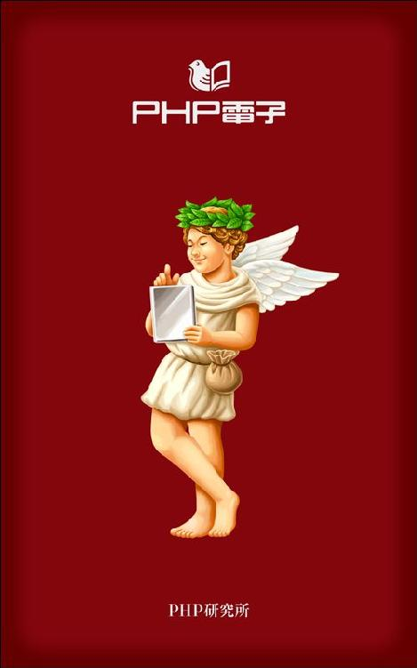
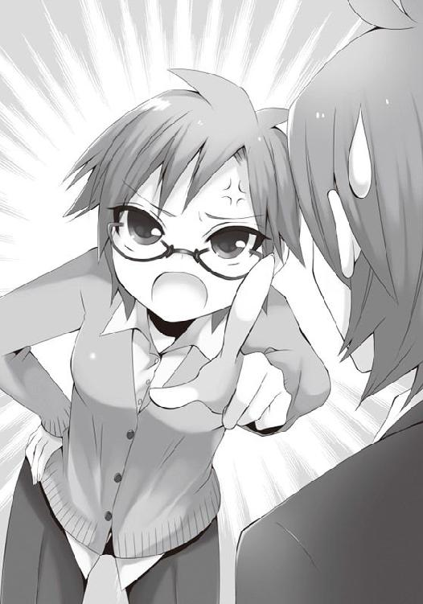
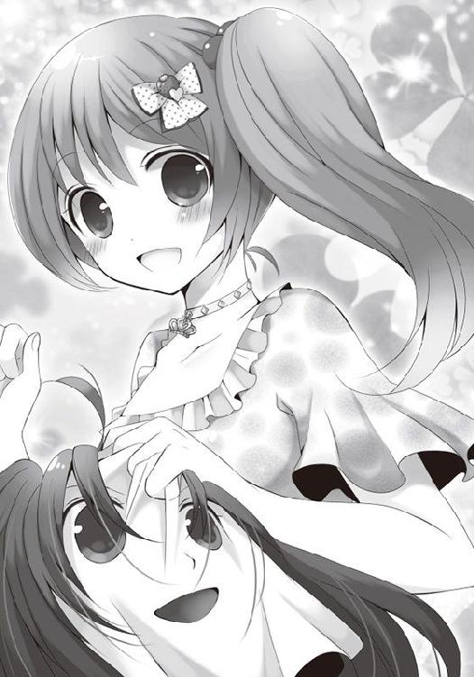

| 美少女と一緒にゲームを作ったら死ぬほど楽しいに違いない (スマッシュ文庫) | |
| 大竹康師 | |
| PHP研究所 (2012) | |

美少女と一緒にゲームを作ったら死ぬほど楽しいに違いない
著●大竹康師
イラスト●宮あゆこ

美少女と一緒にゲームを作ったら死ぬほど楽しいに違いない もくじ
放課後の二年一組の教室で居残りする坂本龍麿は、独り淋しく悩んでいた。
目の前に広げた白紙の〝進路志望書〟とのにらめっこが続いている。
ここ修究館高校では、この志望書を埋めて提出することが新二年生の試練だった。
〈進路ねぇ......〉
春休みの二週間ぼんやり考え続けたのに、何も思い浮かばない。
今すぐ進むべき道ならハッキリしている。
〈ゲームショップ！〉
今日は有力タイトルの発売集中日。超大作ＲＰＧのシリーズ最新作に、豪華声優陣で話題のアドベンチャー、キャラクターデザインが人気の格闘ゲームもある。
〈ああ、ショップがオレを待ってる......〉
とりあえず龍麿は適当な思いつきで〝ゲームショップ店員〟と書いた。しかし志望書には希望する進学先を書く必要もある。〝未定〟では担任が受け取ってくれない。〝なし〟と書けば、進学を勧める両親に三者面談でバレて、こってり絞られるだろう。
悩んだ末に龍麿は〝なし〟と書いた。
絞られても叱られてもいい。それが本当の気持ちなんだし、問題は先送りするに限る。
頭の中はもうゲームショップへ走ることでいっぱいだった。どうせ買えないのに。
そもそも龍麿は現行ハードを何も持っていない。据置機も携帯機も。
二世代前の携帯機で怪獣を育てて戦わせるゲームから入り、一世代前にはお年玉で据置機も携帯機も買いそろえて、ほとんど中古ばかりだがジャンルを問わずサルのように遊びまくった。しかし毎晩布団をかぶり遅くまでタッチペンで美少女とたわむれ、成績も視力もガタ落ちしたのが去年ついに両親にバレて、持っていたソフトとハードを全部処分された。
今や新作を買えないばかりかゲームを一切禁じられていて、自宅には夢も希望もない。
買えなくても、せめて発売日のショップの熱気を味わいたい。ただそれだけだった。
龍麿は鞄とスカスカの進路志望書を手に勢いよく教室から駆け出す。ゲームのことを考え出した途端に、進路志望のことなどすっかり忘れてしまっている。走る廊下には誰もいない。五つあるクラスで居残りしていたのは龍麿だけだった。
「おっと！」
何の思い入れもない進路志望書がスルリと逃げるように龍麿の手からすべり落ち、スス～っと音を立ててスライディングして扉の下の隙間に入り込んでいく。そこは禁断の小部屋。
〈女子更衣室!?〉
厄介なことになった。
部屋の電気はついていない。誰もいないだろうと思いながらもノックしてみる。
「誰かいる～？」
返事はない。ならば鍵がかかっているかと手をかけてみれば、
〈かかってない!?〉
龍麿はゴクリと息をのんだ。あんなモノやこんなモノが置かれているかもしれないが、龍麿は嗜好がノーマルな上に肉食傾向も薄く、そういったモノへの関心は低い。
しかしそれが災いの元だった。
深く考えずに扉を開けて、紛れ込んだ進路志望書を拾おうとしたそのとき、
「あ......」
これから着替えようとしていたのか、ブレザーを脱いでシャツのボタンを一つ外し、挑発的な深い谷間をくっきりさせた少女が硬直していた。
もちろん龍麿も硬直した。おとなしそうな黒目がちの瞳、白すぎず黒くもない健康的な肌の色。肩まで伸びた真っすぐな黒髪。両手を首の後ろに回してチョーカーをつける仕草もなまめかしく、すべてが龍麿のストライクゾーン。この状況でなければずっと見とれていたい涼しげな顔を凍りつかせながら、スラッと長い脚を少しだけ内向きに曲げた体勢で、警戒と恥じらいの微妙な心理を物語っている。
不幸な初対面を悔やみながら、龍麿は咄嗟に口を開いた。
「......ご、ごめんなさい」
逃げなければと思っても、ヤバさと焦りで足が動かない。
少女はそんな龍麿をじっと見つめながら、ぐっと身を乗り出して言った。
「あなた、素敵な声してるわね」
そう言う少女のほうこそ透き通るように美しい声だった。少女は硬直がほぐれ、輝く笑顔で龍麿の心を照らす。あまりのまぶしさに龍麿は自分が置かれた状況を忘れて、返し笑いをしていた。
「......そ、そうかな？」
これまで声を褒められたことなど一度もない。小学生の頃、国語の授業の朗読で褒められたことなら一度だけあるが、龍麿の声はアニメにたとえるなら〝高校生Ａ〟とか〝友人Ｂ〟くらいの役名が似合いそうな、ごく普通の男声でしかない。「そうかな？」と返したのは謙遜でも何でもない、偽らざる思いだった。
それでも女の子に褒められていい気がしないわけはない。龍麿は無意識に、これまで誰にも見せたことのない爽やかな笑顔をごく自然に浮かべていた。薄暗い女子更衣室で、出会ったばかりの二人のまわりには美しい花々が咲き乱れ、蝶や小鳥が舞う。
「きゃぁぁぁぁぁぁぁぁぁぁーーーーーーー!!!」
斬り裂く絶叫に、龍麿は瞬時に現実に引き戻された。
背後に感じる第三者の気配。振り返って確認するまでもない。
龍麿は絶叫した女子に顔を見られないよう身をひるがえして、うつむき気味に猛ダッシュした。何も考えず全力疾走で廊下を駆け抜け、行き止まりの一組の教室の前まで戻る。
そこでようやく我に返り、龍麿はいよいよ絶望の淵に立たされた。
〈オワタ......〉
それでも逃げなければならない。何も策が思い浮かばないまま、龍麿は往生際悪く教室へ飛び込んだ。
窓の向こうに広がる空がまぶしい――。
龍麿は発作的に窓から飛び降りる自分を想像した。
〈いや、ダメだ......〉
二階から飛び降りたところで死ねるはずもない。死んだところで、弁明の機会を放棄するなど恥の上塗りにしかならない。龍麿がふと冷静になったそのとき、
「こっちだよ！」
声がしたほうを振り向くと、窓の外からさっきの女の子が手招きしている。
しかもどんな早業を使ったのか、ちゃんと制服を着て。
〈えっ!?〉
女の子は壁から突き出た梁を足場にしているらしい。
「早く！ 助けてあげる！」
でも、どうして？ あるいは罠かと龍麿は混乱したが、背後から「先生、あっちです！」という声と複数の足音が迫る。迷っている暇はない。
龍麿はおろおろと窓をくぐり、先を行く女の子を身を屈めながら急いで追いかけた。
女の子は子リスのような軽い身のこなしで満開の桜の木に飛び移る。それでいて要所要所でちゃんと後ろ手に短めのスカートを押さえるしとやかさも忘れない。龍麿がボーッと見とれている間に、女の子は早くも地上へ降り立った。龍麿も鞄を下へ落とすと、真似して後に続いたが、
「どわっ!!!」
バキッと枝が折れる音とともに無様に落下した。
「うううゥッ......」
痛みのあまり声も出ないが、フラつきながら必死に立ち上がって少女を目で追う。
しかし、すでに見失っていた。
〈誰だったんだろう？〉
龍麿はゲームショップへ行こうとしていたことも忘れて、呆然と立ち尽くした。
「おはよう！」
どわっ!!
いきなりすぎてチビるかと思った。席に着くなり女の子に声をかけられちゃったんだから驚かないほうがおかしい。だってこんなの初めてだし......。なんだこの胸の高鳴りは!?
「やっぱり同じクラスだったんだ」
という相手は昨日の女の子。別な意味でもドキドキするんだけど。
「そう、みたいだね......」
どどどどうしよう!? やっぱり、落とし前とかつけさせられるのか？ ひとけのない場所に誘い出して幾らか握らせて口封じ......じゃなくて一言お詫びとお礼を言うべきか。
いや、彼女がその話題に触れるまで、わざわざ余計なことは蒸し返さないほうがいい。
「昨日はビックリしたね♪」
って、思い切り蒸し返されてるし。誰に聞かれてるかもわからない教室でその話をするのは勘弁してくれ～。
でも、よく見るとカワイイ。揺れる黒髪がキラキラ輝いてまぶしすぎる。いつものオレなら恥ずかしくて目をそらしそうなモンだけど、ホヮ～っと引きつけられて離せない。オレも笑顔を返したいなぁ。返してもいいかな!?
いや、調子に乗っちゃダメだ。思いがけない再会は嬉しいけど、この子とは二度と会えずにすべてを闇に葬り去ったほうがマシだったんじゃないか？ これは死刑執行......は大げさだけど、退学か停学への序曲......二人は出会っちゃいけなかったんだ。
「あれから大丈夫だった？」
「......うん。おかげで助かったよ」
「よかった♪」
うん、よかった。
いやだから、よかったかどうかはわからないんだって！ 叫び声をあげた子が実はオレの顔を見てたってこともあり得るし。今日はよっぽど学校を休もうかと思ったけど、休んだら余計に怪しまれそうで来ただけなんだから！
そうだ！ 万が一のときに備えて丁重に口裏合わせをお願いしないと......。
「......ねえ、ちょっと相談があるんだけど、いいかな？」
「偶然！ 私もちょうど相談したいことがあったの」
「えっ!?」
「二人だけで話せない？」
「いいけど......」
あれよあれよと、オレは彼女に手を引かれて教室を出た。
ずんずん廊下を進む間に、振り返ってオレ、というより彼女をガン見していたヤツが五人はいた。しかも「なんで坂本が!?」って顔でオレのことも見てる。そりゃそうだ。オレだってこの展開はワケわかんないよ。
オレの汚い手を......いや、別に汚くはないけど、握る彼女の手がひんやりスベスベしてて気持ちいい。つい力を入れて感触を確かめた瞬間、彼女は何も言わなかったけど少しだけ肩をピクッと反応させていた。思わず「ごめんなさい」と言いそうになった。
ていうか何者なんだ、この子は？ どう考えてもこれまで見かけた覚えはないし、これだけのカワイイ子をオレが一目見て覚えてないはずがない。やっぱり転校生じゃないかって気がする。
因縁の女子更衣室を通り過ぎて一階へ降りる、と思いきや階段の踊り場で止められる。
ここで話す気なのか？ 人通りが多すぎるというか、もうちょっとマシな場所があると思うんだけど。でも彼女は全然気にしていない感じで切り出してきた。
「そういえばまだ名前、聞いてなかったね」
「ああ、オレ、坂本龍麿――」
「えっ!? 坂本龍馬!? 同姓同名なの!?」
ああ、またこのパターンか......。
「いや、あっちは〝リョウマ〟で、オレは〝リョウマロ〟。馬じゃなくて麿なんだ」
いいかげん慣れてるけど、相手がまぶしければまぶしいほど説明するのが情けない。幕末モノ好きな父と、公家の血を引くとの言い伝えを代々信じ込まされてきた母の妥協の命名、ってとこまでは説明しなくてもいいだろう。だいたいオレのことなんてどうでもいいし。
「......キミは？」
「私は、ヨリナガ ニコ」
くっ、漢字でどう書くのかイメージできないからツっこめない。かといって聞き返すのもどうよ？ 何もこんなに早くから頭の悪さをアピールしなくてもなぁ。
すると彼女はそこをお見通しだったのか、いきなり生徒手帳を開いて見せてくれた。
「こう書くの」
頼長仁呼――。
おお～、オレに負けない平安調な名前だ！ 二人はお似合い、ていうか余計な負い目を感じなくてすむのが助かる。オレの母親は絶対違うと思うけど、彼女はマジで公家の出かもしれない。もし関係を深められそうなら、いつか聞いてみたい......。
「ニコって呼んでね♪」
おお～、来た来た！ こういう展開を待ってたんだよ。今年はいい年になりそうだ。
「それで龍麿くん、さっそくお願いなんだけど――」
なんでも聞こうじゃないか！ ああ、いったいどんなお願いをされるんだろう？ まさかいきなり〝付き合って〟とか......だとしても問題ない。ドンと来い！ ていうか来て♪
「龍麿くん、ゲーム得意なんだってね」
......へ？ いきなり何の話だ？
「......まあ得意っていうか、好きだけど......」
それでなくても修究館にはゲーマーどころかゲーム好きなヤツもあんまりいないのに、いきなり女の子からゲームの話を切り出されたのなんて初めてで、ビックリしすぎて話が続かない。だいたいオレはゲームが好きな女の子なんて、世の中そうそういるわけないと思ってるし、ゲーム雑誌に出てる子なんかは絶対に業界が仕込んでるステマ（やらせの一種）だとこれまで信じて疑わなかった。まあ実際、知り合いに一人だけゲーム好きな女の子がいるんだけど、その子はいろんな意味で例外中の例外的だし。
「私が作る〝ゲーム部〟に入ってもらうから」
ニコちゃんがニコやかに首をかしげて言ったとき、チャイムが鳴った。
え？ なに？ ゲーム部!?
「あ......じゃあ、続きはまた後でね」
ニコちゃんははにかみながら駆け出していった。ポッと赤らんだ頬が瞼の裏側に焼き付いてクラクラする。あれだけあれば、ごはんのおかずは要らないな。
......あれ？
入ってほしい、ってんじゃなくて、入ってもらうって言ったよな？ お願いっていうより、命令って感じだった気もする......。まあオレの置かれた立場からすれば、嫌とは言えないけど。でもあのはにかむ笑顔と遠慮ない物言いには、なんかギャップがある。意外と性格悪い子だったりして......。
......いや、そんなはずはない！
でも、照れながらゲームの話を切り出す女の子と、ゲーム部とかいう意味不明なキーワード。オレ的にあり得ない要素がいろいろ複雑に絡み合う感じで、頭の中で処理しきれない。
それからどうやって教室に戻ったのかよく覚えてないんだけど、なんとなく担任が話す声が耳に入ってきてハッとしたとき、ニコちゃんはやっぱり四月から転入してきたって説明が聞こえた。席は窓際のオレと反対の、廊下側の一番後ろ。どう頑張っても授業中に見とれるのは無理っぽい。
まあいい。後でまたゆっくり話せばいいや。
それにしても、ゲーム部......。考えれば考えるほどワケがわからない。まあ普段から授業中は集中力が続かなくてワケわかんないこと考えながらボーッとすることが多いけど、今日ほど時間が経つのが長く感じられるのは初めてだった。
「お昼、行こっか」
ニコちゃんはオレが企むより先に声をかけてくれた。その瞬間、すかさず振り向いた周囲の男子たちの嫉妬の眼差しが痛い痛い。でもクセになる痛みだ。
「ああ、行こうか」
オレは渾身の力を振り絞って余裕をかましてみせた。でも心臓はバクバク。冷や汗も流れてるんじゃないかって気がする。なにしろまさか始業二日目にして一人メシを脱却できるとは思わなかったもんなぁ。しかもお相手が女の子だなんて、今日は何を食べてもおいしそうだ。ていうか食べてる時間がもったいない。ニコちゃんが食べてるのをジーッと見つめてお腹をいっぱいにしたい......。
妄想しながら並んで歩くのは照れくさいし、浮かれて早足になるのも申し訳ないから、オレは気持ちゆっくりめに、ニコちゃんについて歩く。
うっ!?
なぜか一瞬、オレにはニコちゃんが下着姿に見えた。
な、何だ!? 今日のこの破壊的妄想力は？
そうか、きっと昨日見た谷間の記憶が、オレの想像力を刺激してくれたに違いない。
ここはもう一度、あの深い谷間にもご挨拶したい......。
そうはいっても制服を着てるニコちゃんの谷間を拝むのは無理だ。せめて制服越しのふくらみを堪能しておこう。斜め後ろをポジション取りして、さりげなく眺めてみれば――。
あれ？ 全然とまでは言わないけど、それほどふくらんでない。どういうことだ!? なんか縮んでないか!?
オレは念のため黙って真横まで進む。そこにはぷっくりでなく、ふんわりした盛り上がりしかない。やっぱり昨日と違う気がする。じゃあ昨日のは......寄せて上げてたのか？
でも素直そうで、スラッと伸びた脚とか、涼しげな首筋とか、たまに覗く鎖骨とか、他にも見所たっぷりなニコちゃんが姑息な手段に訴えるとも思えない。だとすればオレの目の錯覚か。あるいは昨日見たモノが印象操作で底上げされていたとも考えられる。
そういやグラビアアイドルが両手を上げてると、少々垂れ気味でもとんがって見えたりする。昨日のニコちゃんは、グっと身を乗り出したりもしてたし、その分、突き出ていたと考えれば辻褄も合う。
「どうかしたの？」
「いや、何でもないよ」
疑問と分析と解釈は胸の奥にしまっておこう。ツっこんでみたところで得るモノもなさそうだ。後日の研究課題だな。
ともあれ食堂に到着して、オレは無難にカレーライスを注文する。するとニコちゃんはカツ丼ときた。肉食系かと思うだけでときめくのはなぜだろう。
すっかり妄想ワールドを楽しんでいて、オレはニコちゃんとの話の続きで食堂へ来たことを完全に忘れていた。
「まず、これ出しといてね」
テーブルを挟むなり唐突に紙切れを突き出されて、オレは思わず聞き返す。
「何の話？」
「ゲーム部の設立申請書♪」
しれっと言ってくれるけど、そんなのオレが書けるワケが......。
「今日が提出期限だから、遅れないようにね」
ていうか、そもそもゲーム部って、まずそこから話を聞かないと。あのいわゆるオレが大好きなゲームのことだと思うけど、ゲーム部ってのが何なのかハッキリさせておく必要がある。改めて考えてみても、そんなの聞いたことないし。
でも聞きたいことが喉元まで出かかったのに、小さな口でガツッとカツをかじるニコちゃんを見てたら、胸がきゅんと締めつけられて、急にどうでもよくなった。なにしろオレは物事を難しく考えずに、当たって砕ける主義だ。
「ああ、任せて！」
後先のことは後先に考えりゃいいんだから、まずはいいとこ見せなきゃな。
「ありがとう！ 龍麿くんって頼もしいのね」とくるかと思ったら、
「じゃ、そういうことで」
と、ニコちゃんは笑顔のままカツ丼に向き直って爆食を始める。
ガツガツガツガツガツガツ――。
速い。速すぎる。こんな美少女にしておくのはもったいないくらいの見事な食べっぷり。女の子はおっとりしてるのがオレの好みだけど、少しせっかちなくらいが、のんびり屋のオレには相性いいかも。なんて思ってると、
「私、急ぐからまた後でね♪」
ニコちゃんは風のように去っていった。
......あれ？ オレ一緒にランチするはずじゃなかったっけ？ まだオレは一口しか運んでないのに、気がつけば完全に一人メシ。あ～あ、なんかいつもよりカレーがまずい......。
まあいいや。早いとこすませて、設立申請書、書かなきゃな。
教室に戻ってもニコちゃんはいない。何の用事だったんだろう？
まあオレはそんなことより、とりあえず設立申請書とにらめっこしよう。
なんかオレ、昨日から書類作成ばっかりしてる気がするな。
記入する項目はそれほど多くない。部の名称に、代表者名、副代表者名、活動内容。あとは顧問教諭の名前の欄があるけど〝葛切千穂〟って、もう書いてある。オレたち一組の担任だ。
さすがニコちゃん！ もう先生に話を通してあるんだ。だったら話は早い。
部の名前は〝ゲーム部〟と。代表者はニコちゃん......。
いや、待てよ？
ここは男らしく、オレが代表を受けよう。代表者名、坂本龍麿、と。
くぅ～！ 身が引き締まる思いだ。ニコちゃんは副代表にしておいて、あとは活動内容か。
〝ゲームする〟
そのまんまじゃないか。身も蓋もない。もっと高尚な表現にしないとな。
でもなぁ......。
おっと！ チャイムが鳴ってる。昼休みも終わりか。いつの間にかニコちゃんも席に戻ってるし。まずいぞ、放課後までに申請書を書き上げておかないと。こりゃ授業なんか受けてる場合じゃないな。よーく考えよう。
そうか！〝なぜ、何のためにゲームするか〟っていう視点が足りないんだ。
なぜだろう？ オレは何のためにゲームをするんだ？
楽しいから。楽しみたいから。
ダメだ。小学生じゃないんだから、大人っぽい表現で、もっともらしく言わないと。
〝ゲームプレイを通じて、エンターテインメントを理解する〟
これだ！ 我ながら、もっともらしい。
でも一行だけじゃ味気ない、というか物足りない。とはいえ長い文章を書くの苦手だから、深入りするとボロが出そうだしなぁ。
そうか、箇条書きにすればいいんだ！ それならもう一つ二つ考えられそうだ。
〝ゲームプレイを通じて〟......何をする？
ニコちゃんと仲良くなる。いやそれはオレの個人的な目的だろ。
コミュニケーションする。もっともらしく聞こえるけど意味不明か。
サブカルチャーを理解する。うん、これ採用♪ もう一つくらいほしいな。
クールジャパンを理解する。同じことかもしれないけど、これもアリかな。
なんか理解してばっかりって気もするけど、結構うまくまとまったじゃないか。
よし、これでいこう！ 放課後が待ち遠しくなっちゃうよ。
「あんたバカ？」
「えっ!?」
イヤだなぁ、この威圧感。
オレもそんなに背が高いほうじゃないけど、超小型な葛切先生と話すときは、先生をはるか下に見下ろす姿勢になる。それなのに鋭い眼と、つり上がった眼鏡、とがった茶色いショートヘア、全部がオレを突き刺してくるような気分になる。せめて胸元がとんがってれば許せるんだけど。
よりによって二年連続でこの人が担任ってだけでもウンザリなのに、ゲーム部でも世話にならなきゃならないなんて。ニコちゃんとセットじゃなかったら絶対にお断りだな。
「こんなマヌケな申請が通ると思う？」
葛切先生は細い人差し指を伸ばしてオレの鼻先に突き立てる。おなじみの決めポーズ。

その指先がちょっといい香りがするって話を聞いたことあるけど、初めてやられたオレは動揺して、確かめる余裕もない。
「あ、いや......」
やっぱり葛切先生は一筋縄じゃいかない。
第一、名前がイヤだ。〝クズ切り〟なんて、オレも先生の中じゃとっくに切り捨てられてそうで目をそらしたくなる。まあ葛切先生は誰に対しても、つっけんどんな態度だけど。
ていうかニコちゃん、話を通してくれてたんじゃなかったのか？
「だいたい、なんであなたが申請書を持ってきたの？」
「いやその、頼長サンに頼まれて......」
「私も頼長さんに頼まれて顧問を引き受ける約束したけど、聞いてた活動内容と違うわよ」
「どういう活動なんですか？」
「それをあなたと頼長さんとで書かなきゃ申請にならないでしょ！」
ごもっともです。
「頼長さんと話し合って書き直してらっしゃい」
くそっ、そんなガキの使いみたいなことさせられてたまるか！ オレの責任で申請を通さなきゃ、ニコちゃんに合わせる顔がない。うん、ここは踏ん張るぞ！
「先生、代表はオレなんで」
「だから？」
えっ!?
「あんたが代表で、ゲームして遊ぶ活動なんてなおさら認められるわけないでしょ！」
「それだけじゃないですよ！」
やべっ、口が滑った。
葛切先生、口元がニヤッとしたぞ。厚めの唇がツンと吊り上がる瞬間がソソるなんて言ってるヤツもいるけど、オレにはひたすら不快だ。だってお手並み拝見ってことだろ？
上等だよ！ バカにすんじゃねーぞ!!
「......ゲームの歴史を研究したり、業界の動向を調べたり、他にもいろいろ......」
思いつきにしては結構いいこと言ったつもりだけど、先生の心に響いてないっぽい。
「こんなところで何してるの、坂本くん!?」
「あっ、ニコちゃん！」
いきなり現れるとは。オレ一人でカッコよく話をまとめる作戦は失敗か。
「なあに？〝ニコちゃん〟って」
えっ!? なんでそんなイヤそうな顔するの？ だって〝ニコ〟って呼んでって......。
「それより、ちょっと貸して」
ニコちゃんが俺の手から申請書をスッとつまみ上げる。
サッと一読するなり、ほっぺをぷっくりさせる。アイドルか芸人がやるのはよく見るけど、リアルに女の子がやるのを見るのは、不覚だけど初めてだ。
「違うでしょ！」
ホェェ～、女の子がオレだけを見てほっぺをぷっくりさせるのが、こうもシビれるなんて。ダメだよニコちゃん！ こんな真剣な場面でオレをニヤけさせないでくれっ！
なんて思いは通じてないのか、ニコちゃんは申請書に取消線を入れて、何やら書き加えている。
「これですっ！」
オレに向けてじゃなく、葛切先生に向けて突き出した申請書には、活動内容のところに大きく〝ゲーム開発〟と書かれていた。
ゲーム開発!?
なにそれ、作るの？ マジで!? なんか先生まで呆れてるっぽいけど。
「本当にできるの？ 頼長さん」
「できます」
「しかも坂本くんなんかと一緒に......」
坂本くんなんかで悪かったな。ていうか言われるまでもなく、オレなんかにはゲームなんて作れねーよ！
と思ってニコちゃんを見ると、葛切先生に負けない闘う眼をしてる。バチバチと音が出るか、火花が散りそうな睨み合いを見るのも初めてだ。これって、もしかして......？
ニコちゃん、オレのために闘ってくれてるの!?
......どうして？ オレなんかを誘ってくれただけでも意味不明なのに、オレなんかと一緒にゲーム開発ができるって言い切るなんて......。本当にオレでいいのか、ニコちゃん？
「この修究館高校で坂本くんほど情熱的で、造詣が深いゲーマーはいませんから」
まっ......まぶしい。まぶしすぎるよニコちゃん！ なんて素敵なんだろう。この自信たっぷりな美少女の横顔......。オレ、一生ついて行くよっ！
......ハッ!?
急に視界が曇ったと思ったら、オレ、涙なんか流しちゃってるし。二人に気づかれる前に拭いとこう。ていうか言われたことはまあ、間違っちゃいないかもしれないけど、モノは言いようというか、なんかスゴい大物みたいじゃないか、オレ？
「フン、情熱的で、造詣が深い？」
葛切先生が鼻で笑っている。いつもそうだ。目線は万人を見上げるクセに、態度は万人を見下してるイヤな感じ。そういえばリアルに〝ジト目〟な人に接したのも、この先生が初めてだったな。
「そうなの？ 坂本くん」
「あ、いや、ええ......まあ」
「どっちなの？」
「......オレ、ゲームには、ちょっとうるさいんで」
うん。ウソじゃない。オレって好みにはうるさいから。
でも正直、今の自分を〝ゲーマー〟って呼ぶのは違う気がする。何をもって〝造詣が深い〟っていうのかもよくわかんないけど、情熱的かって言われたら、まあ......オレより入れ込んでるヤツなんて世の中にごまんといるし、うまいヤツだって大勢いる。
とりあえず、ここで目をそらしたら負けだ！ オレのために闘ってくれたニコちゃんのためにも、オレがここで目をそらすワケにはいかないんだっ!!
「ふうん......」
先生がオレより先に目をそらした。
「本当にやれるのね？ 頼長さん」
「任せてください」
「あなたがそこまで言うなら認めるけど――」
ニコちゃんと先生の睨み合いが続く。ていうかオレ抜きで話が進んでる気が......。
「一つだけ条件を出させてもらっていいかしら？」
「何ですか？」
「代表はあなた。坂本くんは副代表よ」
なんでだよ、先生っ!?
「もちろんです。私も初めからそのつもりだったんで」
ニコちゃんと先生が揃ってオレを睨みつける。
えっ!?
「「勝手なことしないでね。坂本くん」」
何も二人で声を揃えて言うことないだろ......。
「......わかりました」
転校してきたばっかりの女の子より信用ないなんて、これじゃあ何のためにオレがここにいるのか全然わかんないじゃないか。ていうかニコちゃん、オレのために闘ってくれてたわけじゃないんだね......。
......ハッ!?
まさかこの二人、グルになってオレのこと嵌めようとしてんのか!?
もしかしてオレは最初からパシリ要員だったのかも......。
ダメだ。先生があれこれニコちゃんに説明してるのに、頭の中がぐるぐるしてオレの耳には全然入ってこない。今ここで態度をハッキリさせておかないと、何か取り返しのつかないことになりそうな気がする。
「じゃあ、そういうわけだから。仲良くやろうね、坂本くん♪」
さっきまで顔をしかめていたニコちゃんが、元どおりの天使の笑顔で微笑んでいる。
「うん、頑張ろう♪」
オレは反射的に笑顔で返す。この単純な性格を呪いたくなった瞬間でもあるけど......。
もういいや。取り返しがつかなくなったって。
早速、葛切先生がオレとニコちゃんをＰＣルーム横の空き教室に案内してくれた。
大きなテーブルの上に、使われなくなった古いパソコンが積み上げられている。
「ここをゲーム部の部室に使っていいから」
「ありがとうございます」
「当面、新しい備品は買ってあげられないけど」
「大丈夫です。必要なものは持ち込みますから」
あくまで話はオレ抜きで進められていく。本当に大丈夫なのかな？
「じゃあ」
先生が出て行く。それだけで室内が一気に静かになった。ふと振り向いたニコちゃんと目が合う。その目は、どことなく気まずそうに見える。
......ハッ!?
狭い室内に、オレとニコちゃんが二人きり......。
「ハッキリさせておきたいんだけど――」
「......何を？」
ニコちゃんは深いため息をついた。そうか、見つめ合ってるというより、オレが一方的に睨まれてるらしい。オレが余計なことを聞き返したせいで、ますます表情が険しくなっているみたいだ。でもなんで怒られてるのか本当にわからないんだから仕方がない。
「勝手なことはしないでね」
なるほど。それなら心当たりがありすぎて、逆に仕方がない。
でもなぁ、ニコちゃんが申請書を出せっていうから、オレなりに頑張ったんだよ。言うこと先に教えてくれれば、そのとおりにしたのに。って言い訳するのも男らしくないな。
「ごめん」
「ありがとう。わかってくれて」
ニコちゃんは一転、オレが待っていた輝く笑顔を振りまいてくれた。やっぱり美少女の前では素直になるに限る。よーく覚えておこう。もし試験に出ても同じ間違いはしまい。
「私もちょっと説明が足りてなかったよね？」
ちょっとどころか全然足りてないと思うけど、わかってくれればいいんだ。
さて、どこから説明してもらおうか。
「......なんで、オレだったのかな？」
照れくさいけど、やっぱり核心はここだ。実は〝ドッキリ〟でした、と言われるほうが納得できるくらい、オレがニコちゃんに選ばれた理由にまるで心当たりがない。
「それはさっき先生にも話したじゃない。この学校で龍麿くんほど情熱的で、造詣が深いゲーマーはいないんだもん」
「ていうか、どこでそれ聞いたの？」
「スマッシュゲーム」
言うまでもないことだけど、スマッシュゲームというのはオレの行きつけのショップのことだ。量販店に負けない品揃えを誇るちょっとした有名店で、オレは買わなく、ていうか買えなくなって一年以上になるけど、小学生の頃から通ってるから、店長はもちろん店員もだいたい顔なじみだ。実はこの修究館高校に進学したのも、スマッシュゲームに寄りやすいのが理由だったりする。確かにあそこで聞けば〝修究館で一番のお得意さん〟として間違いなくオレの名前が挙がるだろう。
でも......。
「オレ、ゲームは好きだけど、作ったことなんかないよ。絵も描けないし、プログラムとかもわかんないし」
「心配しなくても、知識は学んで身につければいいから」
そういうモンなのか？
「私が教えてあげる♪」
ずいぶんサラッと言ってくれるけど、本当に大丈夫なのか？ ゲームを作るって、そんな簡単な話じゃないだろ？
「一番大事なのは、最後までやり遂げる情熱だから」
笑顔のニコちゃんが、目を一際大きく見開いてオレに迫る。
情熱......。
「だったら、問題ないね」
つられてオレもサラッと言っちゃった。もう後には引けない。実際オレは追いつめられたほうが力を出せるタイプだし、成り行きに身を任せてみるのもおもしろそうだ。どうせ暇だし。
「私たち、お互いいいパートナーになれそうだね」
パパパパートナーすか!? そりゃちょっと気が早いというか......。
「うん、なれるよ。ニコちゃん」
うおお～、普段は重い口先が勝手に開く！ 雰囲気に呑まれまいと、オレの〝中の人〟が必死に闘ってるみたいだ。
そのときニコちゃんの目がちょっと泳いだのを、オレは見逃さなかった。さすがにニコちゃんも言ってて照れちゃったか？ 形勢逆転か。やるなぁ、オレ。
「......恥ずかしいから、やめてくれる？」
「え？」
「女の子を〝ちゃん〟づけで呼ぶのって、おじさんくさいと思う」
あ、いや......だって......。
「ニコって呼び捨てにするのが照れくさいなら、頼長でいいから」
目を泳がせていたんじゃない、眉を寄せていたのか。
「別に照れくさいってワケじゃないよ、ニコ」
って、やっぱり思い切り照れくさいぞ。声が震えちゃったじゃないか！
「無理しないで。私も〝坂本くん〟って呼ぶことにするから」
ああ、せっかく縮まっていた二人の距離が......。
急に目の前が暗くなったオレは、気がつくと部室に一人、取り残されていた。
それからどうやって家まで帰り着いたのか、よく覚えてない。たぶん難しいことを考えるのに慣れていないオレの頭が、この無茶すぎる展開を処理しきれなかったんだと思う。
「龍ちゃん、ウチでゲームしよう♪」
聞き覚えのある、素っ頓狂な甲高い声で我に返る。
「カミーユ......」
隣の家の女子高生......じゃなかった、今年から女子大生になったんだ！ 美田加美柚というキラキラ☆ネームに負けないド派手な恰好。高校を出た開放感なのか、明るい茶色の髪のクルクル度とフワフワ感がバージョンアップしてる。まだ寒いのにやたら薄着で、濃いめのピンクのブラをセーターの下に透けさせて、ローライズから揃いのパンツを見せつける。でも慣らされすぎてるせいか全然ときめかない。
〝名は体を表す〟って学校で習ったときは、真っ先にカミーユを思い出したモンだけど、なんでも〝美田〟って苗字がいろんなふうに読めて〝ビダ〟とか〝ビデン〟に間違われることが多いから、お父さんとお母さんがどうせならその線で好きなアニメのキャラから名前を拝借して〝カミーユ〟にしよう、てな話の流れで加美柚になったらしい。
実は〝カミーユ〟がフランス系の名前じゃなくて苗字だって聞いたときは笑ったけど、実際カミーユのことがちょっとだけ気の毒に思えたなぁ。
「これ買っちゃったよ～ん♪ 龍ちゃん、ヤリたかったんでしょう～？」
「あ！ それファンタスティック・ファイター!?」
ヤリたい！ そう、オレが知ってるこの世でただ一人のゲーム好きな女の子、それがこのカミーユなんだ。
「エマ、まだ帰ってないから二人でヤろっか？」
エマというのはカミーユの妹のことだ。そのまんま〝絵馬〟と書く。この名前もお父さんとお母さんが同じアニメのキャラから拝借したらしいけど、オレはアニメには詳しくないからよく知らない。カミーユが〝加美柚〟という名を語感がかわいいからって気に入ってるのとは反対に、エマはアニメ由来を聞かされた三年くらい前から、やさぐれてきた気がする。ずいぶん前にテレビの深夜放送でエッチな映画をコッソリ見て〝エマニエル〟って呼んだら、最初は意味がわからなかったらしくてポカンとしてたけど、よりによってお父さんにその意味を聞いたらしくて、めちゃくちゃ怒られたっけなぁ。中高年にはとってもロマンのある名前らしいんだけど、エマも生まれた時代が悪かったよなぁ。
一人っ子のオレは、この隣の家の姉妹とはずっと実の姉弟、というか兄妹みたいに仲良くしている。小さい頃は一緒に風呂に入ったりもしていたらしい。ほとんど覚えてないのが惜しいんだけど。
でも、オレももうすぐ十七だし。最後にお邪魔して三人でゲームしたのだって、もう半年以上前だったはずだ。美田家はゲームで遊べる貴重な場所だけど、カミーユも二月までは一応受験生だったから遠慮してたんだよな。
「さあ、入って入って♪」
これもすっかり慣れてることだけど、カミーユはやたらとオレの腕にしがみつく。
わかってる......。
わざと胸を押し当てて、オレがドギマギするのを見て、おもしろがってる。ガン見はもちろん、うっかり硬直でもしようものなら、ウチの親に聞こえるような大声で「エッチ～!!」と叫ぶ。
そう、罠だ。
昨日までのオレなら、わかっててもネタの仕入れにわざと罠にかかることもあった。見るだけじゃときめかなくても、ダイレクトに伝わる感触はやっぱりイイし。でも今日からオレはもっと高級なネタの仕入れルートを確保したんだ。なにも危ないカミーユなんかについて行かなくても、ニコちゃんがいるもんねー♪
「悪いけど、急いでるんだ」
オレはクールにカミーユの手を振りほどく。いっぺんこういう真似してみたかったんだよな。思ったとおりカミーユがポカンとしてる。
「ウソ！ 帰ったって何もすることないクセに～！」
まあ実際、何もないんだけどね。でもオレだって、いつまでもカミーユの玩具にされてるワケにはいかないよ。バイバイ、カミーユ。
「なによ、もう！ 二度と遊んであげないんだからっ!!」
やっぱり怒って行っちゃったか。フワフワした残り香に鼻をくすぐられると、実はかなりもったいないことしてるんじゃないかって気がしてくるけど、どうせ二、三日すればケロッとしてまたオレを誘いに来るに決まってるんだ。うん、オレは今まで圧倒的劣勢に立たされていたけど、これでやっとカミーユと対等になれるかもしれない♪
いやぁ～、今日は本当にいろいろありすぎて疲れた。考えなきゃいけないことは多いけど、それはまたそのときに考えるとして、明日に備えて早いとこ寝よう。
今日から〝ゲーム部〟が始まる。
昨夜はなかなか寝つけなくて、オレなりにいろいろ運営プランを練ってみた。代表はニコちゃんだけど、オレはまだ主導権を諦めちゃいない。なんていうか、オレって結構古風だから、女の子の尻馬につくのは抵抗あるしね。やっぱりニコちゃんに頼られる男になりたいよ。
まずはポスターを作ってみた。ちゃんとパソコンを使って。ネットとメールと年賀状の印刷以外でパソコン使うの初めてだったんだけど、結構うまくできた。リビングに一台しかないパソコンだから、親に見つかるとアレだし、真夜中にコッソリ仕上げたんだけど、バッチリ目立つように〝ゲーム部 新入部員募集！〟とＡ４用紙に一文字ずつ印刷した。
これをつなげて、あちこちに貼ろう。ゲーム開発ともなれば人手はいくらあっても足りないと思うし、オレが集めて一気に人数を増やせば、ニコちゃんだって嫌でもオレに一目置くことになるだろう。
「やっぱり代表は龍麿クンにお願いしちゃおうかなぁ」なんてね。ウヒャヒャヒャ♪
「勝手なことしないでって言ったわよね？」
......へ!?
なんだかよくわからないけど、ニコちゃんはオレのやり方がお気に召さないらしい。朝一番であちこちに貼りまくったポスターを残らず引っぱがして、オレに突っ返してきた。
そう言われても、オレにだってプライドがある。
「確かにオレの独断でやったことだけど、ゲーム部の活動を一日も早く軌道に乗せるにはまず人数を増やさなきゃ始まらないと思うんだ。そのためには早く動かないと」
オレにしてはまともなことを言ったつもりだった。
「そんなこと頼んでないでしょう？」
「頼まれなくても、頼まれる前にやるのがオレのやり方だから」
あくまでニコちゃん限定の話だけどね。
「いいから、やめて」
ニコちゃんの麗しい瞳が、急に潤みだす。
えっ、泣くの!?
「......私と二人だけじゃ、嫌？」
めめめ滅相もない。オレだって、できることなら他に誰も入れたくなんかない。ニコちゃんとの活動の場を誰にも邪魔されたくないよ。でも......。
「ずっと二人だけってわけには、いかなくない？」
「そんなことないわよっ！」
ニコちゃんは、やけに自信たっぷりに言ってくれた。でもまだ泣きそうだ。
どうしよう？ 嬉しさと不安がオレの中でせめぎ合ってる。ぶっちゃけニコちゃんとよろしくやれるなら、ゲームなんかどうでもいいくらいなモンだ。でも狙いは何なんだニコちゃん？ そこがわからないと、さすがにオレも不安なんだけど。
「じゃあ......頼長さんの運営プランを聞かせてよ」
ああ、またニコって言えなかった。オレもチキンだなぁ。ともあれ二人には話し合いが足りてないと思うんだ。
ニコちゃんは困った顔をしながら目をそらす。何か考えてるようだけど、オレに真面目に答えようとしてくれてる気持ちがビシビシ伝わってくる。そしてオレに向き直って、ゆっくり話してくれた。
「......作りたいゲームの大枠は、だいたい見えてきてるの。そのためのツールも、もうすぐ完成するから、あとは坂本くんのゲーマーとしての目線で意見を出してもらいながら、実際に私が組み上げていくだけ。だからこれ以上、余計なとこへ広げたくないの」
話し終わる頃には、はにかむ笑顔のニコちゃんに戻ってた。でも......。
......う～ん、どう答えていいものか。なんか無駄に信頼厚くないか、オレ？ ていうかニコちゃん、何を根拠にそうオレを買いかぶるんだろう？ こうなるとスマッシュの店長がオレのことをどう紹介したのかが気になるな。
......ハッ!?
もしかして、ニコちゃんオレのことが好きで、他に誰もゲーム部に入れさせないように企んでるんじゃないのか？ だとすれば辻褄が合う。......ってほど矛盾もないけど。
「じゃあ、もう一つ聞いておくけど、もし他に入部希望が来たらどうするの？」
「基本的にお断り」
う～ん、強い意志を感じる。でも、
「そんなのアリなの？」
「代表は私なんだもん」
昨日の葛切先生の話だと、そういう理屈は通らないんじゃないかって気がするけど、ニコちゃんなら白でも黒にしてくれるかもしれない。〝情熱〟を買われたはずのオレだけど、やっぱり最初に言い出したニコちゃんの情熱には敵わない。
「わかったよ。頼長さんの言うとおりにする」
「ありがとう」と来るかと思ったのに、ニコちゃんは何も言わず口元をつり上げてニヤッとしていた。今の仕草、なんだかすごくワルみたいだったんですけど。
「それでいいのよ」
うわ、やっぱりワルの貫禄が。
なんかニコちゃんて、もしかするとオレが勝手にイメージしてるのと全然違うキャラなんじゃないか？ まあこの顔でワルってのもゾクゾクくるけど。
「じゃあ今日は解散♪」
「えっ？ 何か活動しないの？」
「今日は私、用があるから帰るね」
おいおい、やる気あんのか!?
「そうだ！ まだ言ってなかったと思うけど、ゲーム部の活動は毎週月水金の週三回だから注意してね」
週休二日すか。いや、実質四休じゃないか。今日が水曜だから、次は明後日だけど。
「そんなんで、ゲームできるの？ 本当に」
「できちゃうの♪」
う～ん、ニコちゃん。物事をサラッと言ってのける天才だ。しびれるなぁ。大船の船長を任せたら、みんなが安心できそうだ。泥船だってイケるかも。
「坂本くんは安心してゲームの腕を磨いてね」
ニコちゃんは今日もまた細いふくらはぎをリズミカルに上下させながら、風のように去っていった。
そういえばオレ、家じゃゲームできないってことをまだ話してない。でもニコちゃんの期待に応えるには、一にも二にもゲームをプレイしなきゃならない。
となると、あそこへ行くしかないか......。
「......何か用？」
訪ねてみれば、うまい具合にカミーユは家にいる。ちょっと怒ってるみたいだけど、昨日意地悪しちゃったからな。まずはきちんと謝ろう。
「ごめんね、昨日は」
うん。これでいつもどおり仲直り――。
「悪いけど帰ってくれる？」
えっ!?
まさかそう来るとは思ってなかったから、どう答えていいかわからない。カミーユは根に持つタイプじゃないはずなのに、なぜか目も合わせてくれない。腕組みするカミーユを見るのなんて初めてかも。何をソワソワしてるのか、持ち上げられた胸が小刻みに揺れてるような気もする。よくよく見れば、なんか今日のカミーユ、顔が赤い。
「風邪でもひいたの？」
「えっ？」
「いや、顔が赤いみたいだから」
カミーユは答えない。それでいて、ますます顔が赤らんでいく。
「な......なんともないわよっ！」
カミーユが顔をそむけて身体をひねったとき、ちょうどオレの目の高さぐらいにあった胸が、いつもの二倍増しくらいで揺れた。
しかもその先が......ポチッとまぶしく尖ってた。
「友達が来てるから、今日は帰って」
カミーユは玄関にオレを残したまま奥へ引っ込んでいった。ふと見たオレの足下に男物の大きなスニーカーがある。どう見ても、お父さんの靴じゃない。
どうやらオレは、とんでもないとこへお邪魔しちゃったらしい......。そりゃカミーユもツンツンするはずだ。いや胸じゃなくて態度が。
なんだかオレのほうがドギマギしてくる。カミーユは見た目こそ派手だけど、根はやさしくて気が小さいから、まだそっちに向かって踏み出しちゃいないと、ずっと思ってた。
だから余計に戸惑うのか......？
オレは黙って外へ出た。ファンタスティック・ファイターの新作をプレイしそこねたのも残念だけど、カミーユがとっても遠いとこへ行っちゃったこの感じも残念だ。まあ物理的に近いとこにいただけで、心は元からそんな近いとこにいたわけでもないんだけど。
「どうしたの？」
ハッとして顔を上げると、ちょうどエマが帰ってきたとこだった。エマはカミーユの妹とは思えないくらい地味な子で、短めなのにモッサリふくらんだ髪で顔を隠すように、いつも下を向いて歩いている。そんなエマから先に声をかけられたんだから、オレもよっぽど下を向いてたんだろう。
エマはハコフグがふくれるような、凄みとか怖さを感じさせないおもしろみのある睨みをオレに向ける。しばらく怒らせたまま観察したくなる感じだ。ただでさえ地味な制服を何の加工もしないでそのまんま着てるから「制服コーナーのマネキン」なんてからかわれてたこともあったっけ。今日も髪の先がはねてるとこまでマネキンを再現してる。
それにしてもエマにどう答えたものか。言っちゃっていいのかな？
いや、いいはずはない。
「カミーユとゲームしようと思って来たんだけど、留守みたいだったから」
「龍ちゃん、今ウチから出てきたでしょ？」
う......慌ててたとはいえ、あまりに無理のあるウソだった。
「男が来てるんでしょ」
男って、あんた......。もう少し言い方ってモンがあるだろうに。
「カミーユにもついに彼氏ができたんだ」
「違うよ。遊ばれてるだけだから」
なんか嫌な話になってきたなぁ......。
「オフ会で知り合ったゲーヲタらしいんだけど、お金がなくてファンタスティック・ファイターが買えないから、うちに入り浸ろうとしてるの」
ごめん。オレも同じことしようと企んでたんだけど......。なんだ、カミーユが遊ばれてるんじゃなくてゲームで遊ばれてるのか。そういやカミーユはゲームで熱くなって負けが込んでくると機嫌が悪くなる上に、コントローラーの操作が鈍るからってブラ取っちゃうんだよな。さてはさっきのも、それだったか。
なんだか急に心が晴れ晴れしてくる。
「ついさっき〝しばらく帰ってくるな〟ってメールがあったし」
「ていうか、なんでエマが帰っちゃまずいの？」
「私がゲーヲタを追い出すって、わかってるからでしょ」
「仲良くしてあげればいいのに......」
「冗談じゃない！ 見ず知らずの男に入ってこられちゃたまんないもん！」
そういやカミーユとエマは一つの部屋を一緒に使ってる。頼みを無視して帰ってくるんだから、エマも相変らず意地悪だ。
歳より大人びて見えるカミーユとは反対に、エマは子どもっぽく見える。今年で中三だけど、制服を着てなかったら小学生でも通るだろう。でも性格はエマが大人びてて、カミーユが子どもっぽいんだからおもしろい。
「......入るの？」
「当たり前でしょ？ 自分の家なんだから」
反抗期まっしぐらだなぁ、エマは。
家に帰ると案の定、すぐに隣から怒鳴り合う声が聞こえてくる。
バタンと音がしたのは、ゲーヲタが逃げ帰った音かな？ オレはもう慣れたもんだけど、いきなりあの壮絶な姉妹ケンカの洗礼を受けたんじゃ、きっと引くだろう。
すぐに静かになる。もう一度訪ねてゲームさせてもらおうかと思ったけど、とばっちりを食らいそうだし、やめておこう。
せっかく両親がまだ帰っていないから、オレはパソコンに向かう。ゲーム開発についてもう少し予習しておきたくて、そのまんま〝ゲーム開発〟で検索をかけてみた。
出てくる出てくる......でもチンプンカンプン。専門用語多すぎ。誰かオレにもわかるように通訳してほしいよ。
ただ、よく見かけるキーワードが三つあることに気づいた。プログラム、ツール、そして同人。これだけ揃えば、意外と少人数でもゲーム開発が可能らしい。
確かニコちゃんは、もうすぐツールが完成するって言ってた。任せろと言うからには、自分でプログラムも組めるんだろう。大枠も見えてるというと、どんなゲームなのかも決まってるんだろう。となるとオレみたいな素人がネットでちょこちょこ予習したところで意味ない気がする。
......やめよう。
と、そのとき窓が開く音がした。
「龍ちゃ～ん、ゲームしよ～♪」
カミーユだ。しかもいつもどおりの何も考えてなさそうな声。
オレはすぐに誘いに乗った。
「どうぞ」と招かれたリビングのテレビには、もうファンタスティック・ファイターのスタート画面が立ち上がっている。部屋にこもってるのかエマの姿はない。ていうかさっきも、二人の部屋でゲーヲタと一緒にいたわけじゃなかったのか。となるとエマも相当意地悪だなぁ。
「早速やり込んでるらしいね」
「うん、絵がチョ～きれいだから、ついつい入り込んじゃう～♪」
カミーユはもう赤らんでいなかった。胸元の開放感もない。となると気分もリセットしてオレに真剣勝負を挑むつもりだろう。というわけで淡々と二人プレイが始まる。
オレは新キャラを、カミーユは前作からの人気キャラを使って対戦を始める。
お互い上級者ってほどじゃないけど、そこそこシリーズをやり込んできただけあって、気持ちよくコンボが決まる。
ゲームに集中すると、自然と無口になる。
小さい頃は「くらえーっ！」とか「死ねーっ！」なんてギャーギャー騒ぎながら賑やかにやってたもんだけどな。エマが「あたしもヤリたい！」って横から入ってきて、コントローラーの取り合いをしたり。そんなエマは、いつしかコントローラーを握らなくなって、後ろで静かに見るだけになっていった。それでカミーユがわざわざオレを呼ぶ。毎日だった頃もあったけど、一日おきになって、三日おきになって、週一、隔週とだんだん機会が減っていった。それでもこの歳になってゲームする女の子っていうだけでも充分めずらしいというか、変わってるよな。まったく不思議な関係だ。女子大生とゲームしてるなんて言ったら、普通みんな羨ましがるだろう。ホント継続は力だ。
ちなみにオレはムフフな妄想をすることもあるけど、残念ながらそういう雰囲気になることはない。カミーユとエマのどっちかと完全に二人きりになることがないし。それに何かあってウチの親に知られたら、なんて思うと大胆な行動は取れない。オレも気が小さいから......。
なんてことを考えながら、惰性でプレイしてるうちに手元がくるって負けた。
「なんかあんまりおもしろくなかったね」
カミーユは飽きるのも早い。
「ねえ、なんかおもしろい話ないの？」
こんな無茶振りにも慣れっこだから、オレは真面目に取り合わない。
「ないよ。別に」
「クラスが変わって彼女ができたとか」
カミーユがこんなふうに深入りしてくるのはめずらしい。
「できないよ。だいたいまだ始まって二日だし」
「それもそっか......」
オレはふとニコちゃんのことを思い出したけど、カミーユに話すようなことでもないだろう。
「カミーユこそどうなの？ 大学」
「女の子ばっかで、つまんないんだよね......」
「ふうん」としか答えようがなかった。ていうかカミーユが通うのは女子大なんだから、女の子ばっかりなんてことぐらい最初からわかってただろ。ツっこんだところで、ためになる話が聞けるとも思えない。
なんか、けだるい感じになってきた。今日はまだ早いけど帰るか。別に名残惜しいってほど感傷的なもんじゃないけど、こうやってカミーユとゲームするのも、いよいよ最後なんじゃないかって気がした。カミーユならゲーマーオフ会に顔を出せばモテるだろうしね......。
そして木曜日。
席が離れてるってこともあるけど、朝からニコちゃんと話す機会がまるでない。オレはぽつんと一人でいるけど、ニコちゃんはクラスの女の子たちとすっかり打ち解けちゃっていつも誰かと一緒にいるから、攻め込むなんて無謀な真似もオレにはできない。
昼もニコちゃんは普通に女の子同士でランチに行っちゃったし、放課後になるとオレが気づいたときにはもう教室にいなかった。
さて、どうしよう？
帰るのも癪だからオレは部室に〝顔を出す〟ことにした。他に誰もいるわけないのに。
「先生、部室の鍵、貸してください」
「ダメよ」
取り付く島もなかった。ていうか葛切先生、ゲーム部の顧問として、活動が週三回だけってのをどう思ってるんだろう？ ニコちゃんがいない今こそ聞かずにいられない。
「先生、ゲームを作るって、そんな簡単な話じゃないと思うんです。オレ一人でも、やれることやっていきたいっていうか......」
「あんた一人で何かできるの？」
「いや......」
ううむ、手ごわい。
「先生は、ゲーム作ったこととか、あるんですか？」
「......まあね」
何だろう？ 今、一瞬言葉に詰まったぞ？
「どんなゲームなんですか？」
「う～ん、正確には、ちょっと違うかもしれないけど......」
「教えてくださいよ」
葛切先生はそっぽを向いて顔を赤らめている。
ていうか恥じらっているのか？ 先生でもこんな顔するんだ......。
「学生時代に、パソコンでゲーム作ってる知り合いがいてね、最初は売り子を手伝ってたんだけど、そのうち声優なんかもするようになって、ドラマＣＤとか......」
先生、それって......？
「もう昔の話よ」
なんか開けちゃいけない扉を開けちゃったかも。これ以上ツっこむのはよそう。
「先生もゲーム開発のことはそれほど詳しくないけど、頼長さんには実績もあるし、しばらく任せておくほうがいいんじゃないかしら？」
「......実績？」
そのとき先生が〝しまった〟という顔をした。
「ごめん。今の話は聞かなかったことにして」
何か企んでてオレを利用しようってんじゃなきゃいいけど。
先生はそのまま口をつぐんで、何も答えてくれなかった。
「いい？ ゲーム部を成功させたいなら、黙って頼長さんに協力すること。結果は必ずついてくるから」
ますますワケがわからない。こんなに真剣な先生を見るのも初めてだ。
何かが動き出している......のか？
まあいい。オレは物事を難しく考えない主義なんだから、黙って協力しろっていうなら黙って協力しよう。そのほうが楽だし。
「さわってみて」
いいんすか!? と声が裏返りそうになった。
待ちに待った金曜日、同じ教室にいても放課後まで完全に他人同士だったオレとニコちゃんが、部室でパートナーとして二人きりになる。息がふれ合うくらい近くで。
並ぶ二人の間にはノートパソコンが開かれている。さわっていいのはこっちだった。
画面は真っ白。
「正確には、さわらなくても使えるんだけどね」
ますます意味がわからない。ＰＣ初心者なんだから、お手やわらかにお願いしたいよ。
ここで知ったかぶりすると後々まで苦労しそうだから、勇気を出して聞いてみる。
「......どうすればいいの？」
「エンターキーを押して赤ランプがついたら、マイクに向かって音声指示するの」
ニコちゃんは得意げに説明してくれる。いろいろ専門用語が出ていた気がするけど、一言でいうと、これは〝音声認識作画ツール〟らしい。パソコンで絵を描いたり３Ｄモデルを作るには、専用のソフトを使う必要があることくらいはオレにもわかる。それにソフトはあくまで道具であって、絵を描くには何を使うにせよ、結局は手で描くしかなくて、絵心のないオレみたいな一般人には不可能だ。
でもこのツールを使えば、言葉で指示したとおりに絵が描けて、立体的な造形までできるんだそうだ。
「ふーん。便利なんだね」
たぶんとってもすごいモノなんだろうけど、よくわからないというか、ピンとこない。
まずは使い方を見せてもらわないと。
「頼長さん、やってみせてよ」
「私が？」
得意げだったニコちゃんの表情が急に曇る。自分で作った道具を使ってみせてくれって頼んだだけなのに、そんなに困らなくてもいいんじゃない？
「......丸顔、セミロングの黒髪、大きい眼、細い鼻、小さい口」
マイクに向かってニコちゃんが言うと、モニタ上に絵が浮かんでいく。足りないところは自動的に補完されるのか、肌なんかもそれらしく着色されていく。
......でも、なんか違う。うまく言えないんだけど、せっかくの３Ｄモデルなのに、ときめかないというか、魅力がない。できそこないのマネキンって言ったらひどすぎるか。それでも誰かに似てる気もする。
「あ、ひょっとしてこれ、頼長さん？」
「わかった？」
わかったことはわかったけど、気づくのに十秒以上かかったぞ。クイズ番組だったら失格だ。ていうか総合的に見れば似てないし。
「これなら写真でもスキャンするほうが早いんじゃないの？」
「それだとオリジナルモデルを量産できないでしょ？ 今はヒトを作ってみせたけど、モンスターなんかも作れるの」
それは結構だけど、すっとぼけた弱そうなモンスターが出てきそうな気がするな。
「四本足、双頭、鋭い牙、細い眼、甲殻、火を吹く」
ニコちゃんが言うのを聞きながら、オレは双頭の恐竜みたいなモンスターを想像した。
でも画面に出てきたのは、鎧を着た双頭のネコみたいなのだった。しかもちょっとカワイイ。
「......確かに、言ったとおり再現されるね」
フォローしたつもりだけど、ニコちゃんの顔は喜んでいない。当然か。
「きめ細かく表現すれば、そのとおりに細部まで再現できるんだけど、そのためには結局、手元に原稿でも用意しないと、即興で言葉を選ぶのもなかなか難しいんだよね」
このツールが失敗作だって言いたいのかな？ そんなことはないと思うけど。
「ちょっと図書室で何か図鑑でも借りてくる」
ニコちゃんは行ってしまった。
う～ん......。
ニコちゃんには悪いけど、そんな難しいことないと思うぞ？
「丸顔、セミロングの黒髪、大きい眼、細い鼻、小さい口」
ここまでは、さっきニコちゃんが言ったのと同じだけど――。
「あごは少しとがり気味、頬の肉付きがよくて、ほんのりピンク、黒目がち、鼻筋が通っていて少し上向き、唇は薄めで、色はもう少し濃いめ、肌の色はもう少し明るめ」
思うままに言ってみただけで、だいぶニコちゃんに似てきた。
「髪はもう少し広がり気味」
うん、顔はこんなとこか。
「七頭身......いや八頭身、身長一六〇センチ、バスト八八、ウエスト五七、ヒップ八二」
おおおおおおお～！ いい感じじゃないか。
でもさすがに全裸はヤバいな......。
「黄色の三角ハイレグビキニ！」
ぬおおおおおお～！ 盛り上がってきたぁ!!! ＪＰＥＧで保存して持ち帰れないのか？
と、そのとき誰かがドアをノックした。
「坂本くん、開けて～」
ヤバイ！ ニコちゃんが戻ってきちゃった。早く服を着せないと！
「えっと......修究館の制服！」
咄嗟に言ってみたらエラー音が出やがった。制服のデータくらい入れといてよニコちゃん！ もう、しょうがない......。
「......制服！」
ダメだ、またエラー音。抽象的すぎるのかな？
「セーラー服っぽい制服」
えっ!? またエラー!? くそっ、素直にブレザーと言えばよかったのに、こんなとこで趣味を優先させたばっかりに。
「濃紺のブレザーと、同色の膝上丈のフリルスカート、ソックス、短靴！」
よし、うまくいった！
......うん？ 何か違う。
「早く開けてってばー！」
「ごめん、今、開けるから......」
でもその前に......わかったぞ！
「バスト八三」
どんぴしゃ！
「はいはい、今、開けるよ～！」
慌ててドアを開けると、ニコちゃんは両手いっぱいに本を抱えていた。
「もう～！ 何してたの？」
「ごめんごめん......」
「えっ!? これって......」
怒っていたニコちゃんが、抱えていた本をバサッと落として、目をモニタに釘付けにしている。そりゃそうだろう。
「......私そっくりじゃない！ どうやったの!?」
「どうって、頼長さんがやってたのを真似して、いろいろ言ってみただけだよ」
詳細は企業秘密ってことで......。
「すごーい!!!」
うん、我ながらよくできたと思うよ。こだわりのバストサイズも調整したしね。
「......まあ、よく見ればそれほどでもないね」
何そのツンツンは？ もしかして嫉妬？ ニコちゃんも案外、子どもっぽいとこあるんだなぁ。
......でもなぁ、女子更衣室で見たシャツのときの印象だと八八で間違いないはずなのに、ブレザー着せると八三でしっくりくるってのがわかんないなぁ。リアルに観察させてくれとも言えないし。
「ねえ、もう一回最初からやってみせてよ」
そ、それはちょっと......。
「あ、ああ、そうだなぁ......それより聞きたいんだけど、これってどの程度までの認識精度なの？」
「どういう意味？」
「いや、さっき〝修究館の制服〟って言ったらエラーが出たんだよね」
うん、これで話をそらせられる。
「ああ、一般的な単語しか登録できてないから、固有名詞だとアウトだね。それに〝何々みたいな〟って言い方でもエラーになると思う」
「〝何々っぽい〟もダメだよね」
「たぶんそうだね。何て言ったの？」
いや、それもちょっと......。
「う～ん、忘れちゃったけど」
「それにしたって、このレベルで再現ができれば充分でしょう？」
ニコちゃんは改めて食い入るようにモニタの自モデルに夢中になっている。
「たいしたツールだよね。これ売れるんじゃない？」
「もちろん、そのつもりで作ったんだから。売り込みのときはぜひ坂本くんもデモンストレーション手伝ってね♪」
「うん、任せて」
おっと！ 口が滑った......。次はニコちゃんじゃない他のモデルにしないと。
「やっぱり私たち、いいパートナーになれそう♪」
「そうだね。ハハハ......」
オレなんかが手伝わなくてもこんな便利なツールだったら、誰だって慣れれば簡単に使いこなせると思うけどな。
なかなか充実した初日だった。せっかく作ったデータを持ち出せないのは残念だったけど、もっとうまく使いこなせるようになればネタには困らないな。
でも今日はニコちゃんが大急ぎで走って出てっちゃって、一緒に帰れなかったのが残念だった。まあそれも長くやってればチャンスはいずれ来るだろう。
ゲーム開発か。なかなか楽しいじゃないか！ 案外オレに向いてるかもね。まだツール使ってモデル一体完成させただけだけど。
なんてことを思いながら帰る途中、またエマとばったり出くわす。
「よお。今、帰り？」
「違うよ。これから塾行くとこ」
「ああ、そう。ご苦労さん」
「......何かいいことあったの？ 龍ちゃん」
おっと、顔に出てたかな？
「まあ、あったと言えばあったかな」
「もったいつけないで教えてよ」
めずらしい。エマがこんなどうでもよさそうな話に食いつくなんて。今のオレ、よっぽど浮かれた顔してるのか？
「今年から部活でゲーム、始めたんだよね」
「まだそんなことやってんの？」
えっ!?
「いい歳してゲームなんて。龍ちゃんもそろそろ将来のこと真剣に考えて勉強しないと、お姉ちゃんみたいなバカ大学しか行けなくなるよ」
「なっ......」
なんてこと言うんだエマは。
「ゲームはゲームでも、遊ぶんじゃなくて――」
「じゃあねー」
エマはオレの話を最後まで聞かずに行ってしまった。
さっきまでの上機嫌がウソみたいにス～っと冷めていくのが自分でもわかる。
将来ねぇ......。
なんだよ。中学生のクセに偉そうなこと言って。
オレだって将来のことくらい、ちょっとは......考えないとヤバいよな、やっぱり。
ゲーム部の活動は月水金の週三回だけ。それも放課後の実質二時間ときてるから、終わると毎回、次が待ち遠しくて仕方がない。
ニコちゃんは〝音声認識作画ツール〟を完成させる一方で、強そうなパソコンを続々と部室に持ち込む。でもオレがそれにさわることはなくて、ニコちゃんが一人でパチパチとキーボードを叩くばかり。たまに自動作成された絵やモーションを見せられて感想を言うだけで時間が過ぎて、四月があっという間に終わろうとしている。
「一応、聞くけど、ゴールデンウィーク中は、やっぱり休みになっちゃうの？」
「そりゃそうだよ。学校が休みになれば部活だって休んで当然じゃない」
やっぱりニコちゃんはカレンダーどおり休む気か。
「でも、申請を出せば連休中も活動していいらしいよ」
「なんでわざわざそんなこと......」
ニコちゃんと会えなくて淋しいから、というのは冗談にしろ本気にしろ通じそうにない。
「四月も終わっちゃうし、なかなかオレが手伝える作業も始まらないけど、休みっぱなしってのもどうかと思ってさ......」
「坂本くんはそんな心配しなくていいの♪」
毎度爽やか笑顔で動きを封じられちゃう情けないオレ。世間は連休でも、両親とも仕事があるって言ってたし、カミーユとエマは毎年どっかへ家族で旅行に出ちゃうから、今年もオレ一人、家で退屈な連休を過ごすことになりそうだ。
「頼長さんは、どっか旅行に出掛けたりするの？」
「......旅行の予定はないけど、まあ、いろいろね」
「ふうん......」
教えてくれないのか。なんか含みのある感じだったけど、ツっこむのも失礼だし。
あ～あ、明後日から五連休。まるまる一週間、ゲーム部休止確定か......。
暇だ......。
どこでもいいから、じっくりゲームで遊べるとこないかな？
去年はネットカフェ九時間コースを何度か楽しんだけど、そろそろ自分専用のパソコン買うための貯金もしなきゃいけないし、そういうお金の使い方はしたくない。
とりあえず家に帰って、パソコンで〝連休 ゲーム〟で検索してみる。いろいろ出てくるけど「連休はゲーム三昧」なんてブログばっかりだ。それはそれで羨ましく読ませてもらったけど、そうじゃなくて連休中にタダで楽しめるとこを知りたいんだよ。
ちょっと考えて〝連休 ゲーム 無料〟でもう一度検索してみた。すると今度はＰＣオンラインゲームのサイトばっかり出てくる。そんな中で、ちょっとおもしろそうなページがヒットした。
〝フューチャーゲーム学院無料体験入学〟
ゲーム専門学校が主催する連休中の集中講座らしい。無料というのもさることながら、参加者の中から抽選で豪華プレゼントがもらえるってのが魅力的だ。お決まりの最新据置機だそうだけど、こういうの当たった試しがないから、期待しないほうがいいのかな。
オレは軽い気分で参加手続きをすませた。せっかくの休みにわざわざ別の学校へ勉強しに行くのもどうかと思ったけど、どうせ暇だし、せっかく〝進路〟としてのゲームにも興味が出てきたところだから、話を聞いて損はないだろう。開発のノウハウなんかも少しはわかるかもしれない。うん、我ながら有意義な連休プランを見つけたもんだ。
そうだ、ニコちゃんも誘ってみよう！
と思ってふと気づいたんだけど、そういえばニコちゃんの携帯番号もアドレスも知らない。すっごく残念だけど、今回はゲーム部を代表してオレがしっかり話を聞いてこよう。
期待しててね。ニコちゃん！
フューチャーゲーム学院は、道に迷う心配もない都心の駅前の便利な場所にあった。高層ビルの校舎も立派で、見るからにハイテクな感じがする。こりゃ学費は高そうだ......。
ふと見ればオレと同じ高校生っぽいヤツが続々と中へ入っていく。ゲームの専門学校に通うのって、どんな感じの人たちなのかも気になってたけど、雰囲気的に修究館とそんなに変わらない。みんながみんな見るからにゲーマーってわけでも、オタクってわけでもない。オレなんかも普通にまわりと馴染んでるし、変に気負う必要はなさそうだ。
そうはいってもオレは友達ができにくい体質だから、どうしても教室へ入ると身体が勝手に隅っこに陣取ってしまう。注意して見ると、みんな基本的に友達同士で誘い合わせて来てるみたいで、オレみたいにぽつんと一人で座ってるヤツはいない。
まあ別にいいんだけどね。出会いを求めて来たんじゃないし。
かなり時間に余裕を持って来たから、開始までまだ三十分近くある。手持ちぶさたで、まわりもみんな携帯をいじったり、携帯機のゲームに熱中してたりする。そこはいかにもゲーム専門学校らしい風景かもしれない。
オレは受付でもらった資料に目をとおした。五連休ぶっ通しでカリキュラムがくまれているわけじゃなくて、計三回の講座がいろんな時間帯に分散されてて、好きなのを選んで参加できるようになっている。今オレが出てるのは一番最初の基礎講演だ。
〝ゲーム開発の現実〟
のっけから微妙なテーマ。講師は〝国際ゲームアナリスト〟のニコライ・チョウ？ ロシア人、いや中国人か？ ていうかアナリストって何だろう？ アナなんとかって、エッチな本で見た覚えがあるけど......それは関係ないよな、きっと。
それにしてももう少し事前に下調べしておくべきだったか。でもまあ学校の授業じゃないんだから嫌なら途中で出ていきゃいいし、難しく考えるのはよそう。
開始時間が迫ると、どんどん座席が埋まってくる。二百人は入れそうな大教室がほとんど満席になると、場違いな感じの人が増えてきた。どう見ても高校生じゃないスーツ着てネクタイ締めたおっさんとか。名刺交換しちゃってる人もいる。
気になって聞き耳を立ててると、どうやら講師はゲーム業界の大物らしい。オレは聞いたことないけど。まあオレなんてゲーム雑誌をたまに眺めて新作を追っかけてる程度で、特に事情通ってわけでもないからね。
時間になった。後ろには立ち見も並んでいる。
長めの黒髪を揺らしながら、講師が壇上に上がった。
......女の人？
それも意外だけど、なにしろシルエットが若々しい。細めの身体のラインがぴっちり浮き上がるスーツ姿。スカートが短くて、長い脚を惜しげもなくさらしている。高いヒールに慣れてないのか、ちょっと歩き方がぎこちない。おかげでスリットに隙間ができてる。こんなことなら最前列に陣取るんだった。
演台に向かって振り返った小さな顔は、おとなしそうな黒目がちの瞳、白すぎず黒くもない健康的な肌の色、肩まで伸びた真っすぐな黒髪――。
あれっ!?
「みなさん、初めまして」
ニコちゃんじゃないか!!! 何やってんの!?
ていうか何者なんだ、ニコライ・チョウって!?
オレは思わず後ろを見てみた。今度こそドッキリじゃないかと思ったんだけど、みんなシーンと静まり返ってニコちゃん......ていうかチョウ氏を見てる。ビデオカメラがたくさん並んで、一眼を構えてる記者風の人もいっぱいいる。ここまで仕込んでこそドッキリだって気もするけど、オレ一人を驚かせるにしては手が込みすぎてて不自然だ。
講演は進行役の学院長らしいジイさんの挨拶から始まった。
「え～、本日はフューチャーゲーム学院へお越しいただき、ありがとうございます。ただ今より無料体験入学に先立ちまして、ゲームアナリストのニコライ・チョウ先生より〝ゲーム開発の現実〟と題しまして、最新の業界動向などをお話ししていただきます」
会場を見渡しながら会釈するニコちゃんと目が合った。
ニコちゃんはすぐに気づいたらしく〝なんでいるの？〟って顔でオレを見てる。
オレは〝そっちこそ何やってんの？〟という気持ちを込めて顔をしかめてみせたんだけど、ニコちゃんは無視するように顔を背ける。この状況じゃ仕方ないか。
それにしてもジイさんはよくしゃべる。なかなかニコちゃんの話が始まらない。
「え～、チョウ先生はアメリカ・ハーバード大学で情報工学ならびに情報経済学博士号を取得され、世界各国のゲーム産業動向を分析されるかたわら、ディベロッパー各社の開発顧問を務められる、当代随一のゲーム業界エキスパートであります」
ボケてんのかジイさん？ ニコちゃんは修究館高校二年一組の生徒だっつーの！ だいたい見りゃわかるだろ？ ニコちゃんもどういうつもりでこんなフザけた真似してるんだか。早く誰かツっこんであげろよ......。
誰もツっこまないまま、ニコちゃんにマイクが移る。大丈夫なのか、おい？
「すみません、カメラはご遠慮いただけますか？」
開口一番、ニコちゃんは撮影をやめさせた。なんか妙な緊張が走って、カメラを構えていた大人たちが静かに慌てて片付け始める。なんでそんなに素直なんだか。
ピリピリした空気がニコちゃんの大物感を引き立ててる。
撮影陣が撤収するのを待って、ニコちゃんがついに話を始めた。
「本日は、主にゲームクリエイター志望の高校生のみなさんを対象とした講演ということでお話しするわけですが――」
ニコちゃんが狙いすましたようにオレを見る。せっかくなので軽くうなずいてあげた。
「最初にハッキリさせておきますけど、おそらくこちらのような専門学校を出られたところで、ゲームクリエイターにはなれません」
オレだけでなく、そこかしこで椅子からズッコケる音がして、ざわめきが起きた。進行役のジイさんも泡を食った顔をしている。
「こと日本においては少子化の影響が大きく、ゲーム業界は年を追うごとに市場規模を縮小させています。産業として歴史が浅く、新卒で入社してゲーム開発に携わり、定年を迎えた世代もいまだ存在せず、今後は中高年層の人材滞留という大きな課題もあり、現在高校生の方々が新たに職業としてゲーム開発の機会を得ることは著しく困難といえます」
原稿でも読んでるのかと思うくらいニコちゃんは難しい言葉を早口で並べていく。でもちゃんと自分の言葉で語ってる感じがする。
「またゲーム開発においては専門領域がさらに細分化し、高度なエキスパートが必要とされます。〝ゲームが好きだから作ってみたい〟という牧歌的な時代の意識のまま、安易に専門学校で受け身の学習を積み重ねたところで、生み出されるモノは旧来作品の劣化コピーでしかなく、ますます市場を縮小させる悪因となりかねません」
「では、ゲームクリエイターを志す者に求められる心構えとは何か。まず第一に、情熱だけで突っ走ってきた中高年層にはない、ゲームをビジネスとして捉える実務感覚です。そして第二にゲーム体験を客観視できる分析力、最後にテクニックとしての制作術となりますが、それを専門学校レベルの教育で身につけることもまた著しく困難です」
半分わかるようでわからない話だけど、とにかくここの専門学校をこき下ろしてるってことだけはわかる。......大丈夫なのか？
なんかガタガタ音がしだしたと思ったら、来ていた高校生がブスッと不満を顔に出しながら、続々と大教室から出て行ってしまう。......やっぱり、やばくないか？
それでもニコちゃんはマイペースというか、平然と話を続ける。
「ことゲーム専門学校という教育形態は日本独特のものです。海外には情報処理系の教育機関の一専攻としてゲーム開発を研究するところはありますが、それらは実技を学ぶ場ではないことが一般的です」
「こうした特殊な事情の背景には、業界の人材需要と供給のアンバランス、すなわち供給過多である人員の再配置として、現場からあぶれた開発者の再就職先として教育機関を機能させたことが原因にあり、昨今のゲーム専門学校乱立を招きました。今後は淘汰へ進むと考えられますが、それが新たな市場の停滞を招き、ゲーム産業をさらに規模縮小させます。この機に乗じて日本市場での拡大を図る海外勢の動きにも目が離せません」
要するにニコちゃんは、ゲーム業界はこの先、厳しくなると言いたいんだろう。オレみたいなのがフラフラと思いつきで入ってっちゃいけないって戒めてるのかな。まあフラフラ入っていけるとも思ってないけどさ。
その後も絶望的に暗い話ばっかり続いて、会場の雰囲気はどんどん悪くなっていく。根拠のない夢を見て踊らされるより、早い段階で地に足をつけて考えるいい機会になったけど、ゲーム専門学校でこの話はやっぱりまずいだろう。ていうかオレ自身、進学先として専門学校を考えられなくなったし、ゲーム開発に夢も希望も持てなくなってきた。
ニコちゃんの講演は三十分ほどで終わって、そのまま質疑応答に移った。すっかり空気が淀んだこの会場で、さすがに質問するヤツなんていないんじゃ......？
と思ったら、不意に一人、手を挙げたヤツがいた。
「あの......どうすればゲームクリエイターになれるんですか？」
おいおい、もう少し空気読んで質問しろよ。明らかに今はそういう話じゃないだろ。
でもニコちゃんは、怒りも笑いもせず質問者を見つめ返している。
「それは専門外ですので、私にはお答えできません」
おお～、なんか潔いぞ、ニコちゃん！
でも今の一言で、また何人か席を立って出ていった。
しばらく沈黙が続いて、また一人、勇者が立ち上がる。
「ゲームクリエイターになりたいと思ったら、何をすればいいんですか？」
「まずはゲームを楽しむこと。その上であなたが何を思うか。他人に答えを求めているうちは、ゲームに限らず何も生み出すことはできないでしょう」
一部で唸るようなざわめきが起きた。そうか、ニコちゃんがオレにゲームプレイを求めてた理由ってのも、このあたりにあるのかな。......釈然としないけど。
そのまま時間いっぱいになって、講演は終わった。
オレは慌ててニコちゃんを追いかけようとしたけど、人混みの中をウロウロしている間にニコちゃんは係に誘導されて、どっかへ行っちゃった。
いなくなってみると、なんだか夢でも見てたような気がしてくる。
だって、やっぱりニコちゃんが、あんなことや、そんなことしてるなんておかしい。
続いてデザインコースの実習体験を覗いてみたけど、今さらタブレットを使って絵を描くなんて、音声認識作画ツールに慣れてきたオレにはバカバカしくてやってられない。
プログラムコースとなると、もう予備知識がなさすぎて「日本語で話してください」とか言いそうになった。
何を聞いていても、ニコちゃんの言葉が思い返されて身が入らない。
〝まずはゲームを楽しむこと〟
オレの場合、それ自体がとってもハードル高いんだけど。
一日つぶせるどころか、昼前には見るものもなくなった。わざわざ電車に乗って来たのに。やり場のない悶々とした思いはアンケート用紙にぶつけるしかない。
〝今回の体験入学はいかがでしたか？〟
→まったく役に立たなかった。
〝基礎講演の内容はいかがでしたか？〟
→救いがなかった。
〝講師のニコライ・チョウ氏へのご意見・ご感想など、ご自由にお書きください〟
→ていうか何者なんだ？
〝フューチャーゲーム学院に入学したいと思いましたか？〟
→プレゼントくれるなら考えないでもない。
期待に胸ふくらませて来たのに、こんな冷やかしみたいなアンケートを返すのは正直、気が引ける。でも罵詈雑言ばっかりスラスラ浮かんでくるんだからしょうがない。これでもかなり和らげたつもりだ。ということもすべて自由記入欄に書き込んで、オレは会場を後にした。
さて、あと四日もある連休を何して過ごそう？
翌日、昼飯にインスタントラーメンでも食べるかと思って湯を沸かしていると、携帯に電話帳登録してない番号から着信があった。
「ニコだけど、今日、空いてる？」
「えっ!?」
「ダメならいいけど......」
「あ、いや、大丈夫！ どこ行けばいい？」
思いがけない誘いで足がガクガク震えて声まで裏返る。結局、部室で待ち合わせなんていう地味な展開になっちゃったけど、家でボケーッとテレビ見てるより何万倍もマシだ。
オレは急いで支度をして学校へ駆け込む。
ニコちゃんは部室でぽつんとひとり待っていてくれた。まだ昨日の背伸びした感じの私服姿が目に焼き付いてるけど、やっぱり制服姿のほうがオレにはしっくり来る。
「坂本くんがあんなトコに興味あるなんて意外～！」
「いや、たまたまネットで見つけて、暇だったから行ってみただけで......」
それより聞くことがあるだろ、オレ！
「頼長さんこそ何だったの、アレ？」
「頼まれたから、話しに行ったんだけど」
「ニコライ・チョウとか」
「あれは私のペンネーム。ていうか通称」
「通称っていうより詐称じゃないか。ハーバード大卒とか」
「失礼なこと言わないで！ ちゃんと出てるんだからっ！」
「物理的に不可能だろ！ どうやったら高校生が大卒になれるんだよ」
「向こうじゃ普通だよ。飛び級って知らない？」
ああ、聞いたことあるけど......。
「実は私、アメリカ国籍なんだよね」
えっ!? なんか級が飛ぶっていうより話が飛びすぎてないか？
「いろいろあって家族と日本に来たんだけど、せっかくだから歳相応にもう一度じっくり高校生活でも楽しんでみようかなぁ、と思って」
ますますワケがわからなくなっていく......。
「ごめん、順を追って話してもらえないかな？」
「いいよ。今日はそのために来たんだから。なんか坂本くん、いろいろ知りたそうな顔してたから。気になっちゃったの」
にこやかに言うその表情にウソはなさそうだ。ていうか自分から生い立ちを語ってくれるのって、かなり脈アリだって何かで読んだ気もするぞ？
ニコちゃんが言うには、昨日の進行役のジイさんの紹介は基本的に全部正しいらしい。
ニコライ・チョウというのは、以前〝ニコ頼長〟と書かれていたのを、中途半端に日本語をかじってるアメリカ人記者が〝頼長〟と読んじゃって、伝言ゲームの果てにこうなったんだとか。
「でも私、結構気に入ってるの。なんか無国籍風で」
そんな悪ふざけしてると入国管理局に捕まるんじゃないかと本気で心配になる。
「ていうか頼長さんの正体は、高校生なの？ それとも......」
「高校生でもあるし、国際ゲームアナリストでもあるの」
ああ、また出たアナリスト。いい機会だから意味を聞いておきたいけど、ストレートに聞くのはバカっぽくて気が引けるなぁ。
「具体的にどんなことしてるの？」
「市場や業界動向の分析とリポートってとこかな」
「でも、開発のアドバイスもしてるって......」
「要するにゲームの何でも屋さんだね」
う～ん、イメージできなくもない感じだけど、どうもピンとこない。
「そんな難しい顔しないでよ～。とにかくゲームのことなら、きっと何でも答えてあげられるから」
そう言われると、逆につかみどころがなくて何を聞いたらいいかわからなくなる。
しいて聞きたいことといえば〝オレにもゲームは作れるのか？〟
でもそれって、会場で突き放されてた〝どうすればゲームクリエイターになれる〟って話に近い気がする。マヌケなこと聞いてニコちゃんを困らせたくない。
「......今はいいや。思いついたとこで、おいおい聞かせてもらうよ」
「じゃあ今度は私が質問していい？」
えっ!?
「坂本くん、ゲームクリエイターになりたいと思ってたの？」
「それは......」
漠然と興味が湧いて、体験講座に行ってみようと思い立ったわけだけど、そんなに本気でクリエイターを目指そうとか考えてるわけじゃない。でも、なれるものなら、って思いは確かになくもない。なんてことを考えてると、ニコちゃんが語気を荒らげた。
「ハッキリしなさいよ！」
「ああ、いや......」
そう言われても、実際ハッキリしないんだからしょうがない。
「私そういう優柔不断なのキライ！」
ずいぶんハッキリ言うんだなぁ。ていうかいきなりそんなこと言われても......。
「なりたいの？ なりたくないの？」
「......なりたいって気持ちはなくもないけど」
「どっちなの!?」
「なってみたいよ！ なれるものなら！」
つい乗せられて、オレまで語気を荒らげて口走っていた。
「その一言が聞きたかったの」
なんだ。だったら素直に最初からそう言えばよかった。
「昨日あんな話をしたのも、来てた子たちに自分の本気を確かめてもらいたかったからなの」
でも、なりたいからって簡単になれるものとも思えない。
「そのための学校なんか行かなくたって、私が全部、教えてあげる♪」
「それは嬉しいけど......」
「けど、何？」
「......なんでそんなにオレに良くしてくれるの？」
「好きだから......」
えっ!?
「私、他人にアドバイスするが大好きなの」
「なんだ......」
オレはうっかり声に出して落胆していた。そこをニコちゃんがすかさずツっこむ。
「なんだって、何？」
「あ、いや......遠慮する必要ないんだなぁ、と思って」
あながちウソでもない。それに考えてみればすごい話じゃないか。たぶん学歴的に葛切先生よりずっとすごい先生が身近にいて、オレに何でも教えてくれるっていうんだから。
「でも私、厳しいから覚悟してね」
「オレ、頑張るよ！」
「じゃあ何から教えようか？」
いきなりすか？ ぼちぼちでいいのに......
「今日のところは、せっかく休みだし、何かゲームでもしようよ」
「いいわね♪ じゃあ坂本くんち行く？」
「いや、オレんちは......」
そうだ、まだニコちゃんには、ウチにゲーム機がないって話をしてない。隠すつもりもないけど、話せば長くなる。
「頼長さんの家は？」
「ウチも、ちょっと......」
そうか、ニコちゃんちにもいろいろ面倒なことがあるんだな。
ああ、つくづくゲームをじっくり楽しめる環境がほしい。
「しょうがないね。今日は解散か」
実はとんでもなくもったいないことをしてるんじゃないかと思いながら、オレはニコちゃんと駅へ向かう。いい機会だと思って、ウチにゲームがない事情も説明した。
「坂本くんも大変なんだね」
「まあね......」
実際は自業自得なんだけど、わかってもらえるのは嬉しい。
それにしても惜しい。ゲームを口実に美少女を自室に引っ張り込むチャンスなんて、この先二度とないかもしれないのに......。ゲームを捨てられたことについて、両親への忘れかけていたはずの恨み辛みがよみがえってくる。
ああ、ゲーム。ゲーム機がほしい......。
「あら、あなたたち何してるの？」
ニコちゃんとの会話が途切れかけていたところで不意に葛切先生に声をかけられた。
何も考えずに答えようとしてハッとした。休日活動申請を出さずに部室を使ったのはルール違反。またネチネチ叱られる......。
「ちょっと坂本くんと話し合うことがあったので、臨時総会を開きました」
えっ!? まずいよニコちゃん、本当のこと話しちゃ。
「聞いてないわね」
ほらみろ、先生怒ってるよ......。
「何か問題があるんですか？」
「休日活動申請を提出してもらわないといけないのよ」
「そんなの、どうだっていいじゃないですか」
おいおいニコちゃん、なんでわざわざ火に油を注ぐようなことを......！
「......それもそうね」
先生とニコちゃんがフッと笑った。
「じゃあ気をつけてお帰りなさい」
そのまま先生は行ってしまった。なんだか拍子抜けする。どんな些細なことも絶対に見逃してくれない葛切先生が、なぜ......？
「頼長さん、すごいね」
「何が？」
「葛切先生とあんなふうに渡り合うなんて」
「何かいけなかった？」
「そうじゃないよ。オレだったら絶対ネチネチやられてたと思うから」
「そんなことないんじゃない？」
ニコちゃんはまるで気にしていない。なにげに大物の風格が漂う。情報ナントカ博士ってのは伊達じゃないな。
「......ひょっとして頼長さんて、葛切先生より偉いの？」
「そんなことはないと思うけど」
と言いながらも余裕のかまし方が違う。本当は絶対にニコちゃんのほうが格が上なんだろうとオレは思った。
「念のため言っておくけど、私のことは他の子たちに秘密にしてね」
「ああ、そう......」
秘密にしておくのは惜しいけど。
「......わかったよ。約束する」
ちょっともったいつけてみたけど、不意に〝二人だけの秘密〟ってフレーズが頭に浮かんで、オレはむしろ喜んで秘密にさせてもらおう、なんて思った。
二人で一緒に駅まで歩いたけど、そこから先は電車の方向が反対になる。別れ際になって急に残念な気がして、つい口がすべる。
「頼長さん、よかったら明日も部室に集合しない？」
ニコちゃんは即答しない。迷ってるみたいだ。もう一押し！
「どうせ暇だしさぁ」
「坂本くんは暇でも、私は別に暇じゃないから」
......そうすね。暇ですみません。
「それに連休明けから猛烈に忙しくなるから、休めるうちにゆっくり休んでおいたほうがいいよ」
そう言われてしまうと返す言葉がない。素直にボケーッとするか。
でも猛烈に忙しくなるって、ニコちゃんも言うことが大げさだなぁ......。
それから残る休みの三日間を、オレはニコちゃんの忠告に従ってのんびりボケーッと過ごした。最初のうちは往生際悪くパソコンでＭＭＯやブラウザゲームを楽しんだりもしたけど、課金をジャンプしようとすると、どうやったっておもしろくならない。
連休最終日にはカミーユとエマも帰ってきたけど、遊びに行こうとしたら旅行疲れを理由に門前払いされた。
こうして五日間、一度もちゃんとゲームできない連休が終わった。
そして連休明け――。
「坂本君、あとで職員室へ来なさい」
いきなり葛切先生に呼び出しをくらう。心当たりなんてない。あるとすればゲーム部の休日無申請活動か。でもそれはニコちゃんがあの場で話をつけてくれたはず。嫌な気分で職員室へ行ってみると、葛切先生の机の脇に大きなダンボール箱が置かれている。
「これ、あなた宛に届いてるんだけど」
送り状には〝フューチャーゲーム学院〟とある。ピンときた。
「やった！ 当たったんだ！」
まさかのプレゼントに当選したらしい。中身は〝ファンタスティック・ファイター同梱版〟の最新型ゲーム機。念のため自宅の住所を書かずにおいて正解だった。
オレは先生に説明して、部室に置かせてくれるよう頼んだ。
「それはいいけど、あなたフューチャーゲーム学院の体験講座に出たの？」
「はい」
「じゃあ......講演も聴いたの？」
先生は戸惑っている。ということは......!?
「知ってるんですか？ 頼長さんの秘密」
「そりゃあ、まあ。私は担任だし」
「ていうか、全部本当なんですか？」
「......らしいわね」
というと、先生も半信半疑なんだろうか。
「実際、十七で博士とかってアリなんですか？」
「あっちじゃアリなんでしょうね。学位証明もちゃんとしてたし。......英語だけど」
「逆に、大学を出てるのに高校へ入るのはアリなんですか？」
「よくわからないけど、校長が許可してるんだから、アリなんでしょうね」
先生の返事はどうも煮え切らない。
「とにかく、このことは他の子たちに言わない約束になってるから、坂本君もちゃんと内緒にするようにね」
「......はい」
思わぬところで先生と秘密を共有することになっちゃった。後々面倒なことにならなきゃいいけど。
ともあれ念願のゲーム機をゲットして、オレは幸せいっぱいで部室へ運んだ。ニコちゃんもきっと喜んでくれるだろう。そうだ、ソフトも他に買いそろえなきゃいけない。
いや、そんなことより......！
大事なことを思い出した。確かオレ、プレゼントくれるならフューチャーゲーム学院への入学を考えないでもない、ってアンケート用紙に書いたんだっけ。こうなると本気で入学を検討しなきゃいけないかも。ていうか入学しないなら返せ、とか......。
「遅いじゃない！ 何してるの？」
葛切先生と話し込んできたこともあって、オレは三十分ほど遅れて部室に来てる。ニコちゃんは三時間くらい遅れた相手を睨むような顔をしていた。
「見てよ、これ！ フューチャーゲーム学院のプレゼントが当たったんだよ」
オレは謝りもしないで笑顔で箱を突きだして見せた。
「いいから早く仕度して！」
「仕度って？」
「表でハイヤーが待ってるの！」
「えっ!?」
会話がかみ合わないのもいいかげん慣れっこだけど、それでも今日は本当にワケがわからない。せっかくのゲームを箱から出しもしないで、ニコちゃんに引きずられるように部室を後にした。
表と言ってたのに、ニコちゃんは裏の通用門に向かう。余計なことをツっこんでも聞いてもらえなさそうで、オレは黙ってついていく。
通用門脇の、たまに搬入のトラックが横付けする一角に、低い音を立ててエンジンをかけたまま黒塗りの車が停まっている。すぐにスーツを着た運転手が飛び出してきて後ろに回ってドアを開けてくれた。その運転手がオレを見て戸惑ってる。
「お連れ様ですか？」
「いいから早く出して！」
「はい！」
ニコちゃんに突き飛ばされて後部座席へ押し込められると、すぐにドアが閉められて車が急発進する。そのわりに車内は静かで快適だった。さぞ高級な車なんだろう。
「間に合う？」
「......努力します」
運転手のおじいさんが焦ってる。上品なグレーでフサフサした髪。ほどよく刻まれた皺が渋くてイケてるジイさんだ。知らない人が見ればジイさんこそ後部座席に座るべき人だと思うだろう。
さてと、ニコちゃんも焦っているみたいだけど、そろそろ聞いてもいい頃かな？
「ねえ、どこ行くの？」
ニコちゃんは黙ったまま運転手を見ている。すると代わりに運転手が答えた。
「今日は十六時半よりインテグラル・エンターテインメント社、続いて十八時よりエクレア・セニックス社となっております」
二つとも聞いたことのある有名なゲームメーカーだけど......。
「......行ってどうするの？」
「仕事に決まってるでしょ！」
なんだか今日のニコちゃんはカリカリしていて、とっつきにくい。
ていうか、仕事って？
「もう坂本くんには隠しても意味ないから、今日から手伝ってもらうことにしたの」
なんだよ、それ!? 聞いてないよー。勝手に決めないで、とは口が裂けても言わない。
「なんだ、それならそうと言ってくれたらよかったのに」
動揺している自分を落ち着かせるには、物分かりのいいフリをするしかない。それにしたって素人の高校生のオレが仕事の手伝いだなんて、いったい何すりゃいいんだ？
ええい、もう知らねー!!
ハイヤーが地下駐車場に入ったとき、時計は十六時三十二分だった。
「許容範囲内かな......」
ニコちゃんがつぶやくと、運転手の肩の力が抜けたのがわかる。二人はかなりピリピリした関係らしい。車を停めると、すぐに運転手が飛び降りてドアを開けにまわる。それより先にニコちゃんが飛び出したから、オレも続いた。
「鞄は車に置いてってもいい？」
「好きにして！」
そのまま駆け足でエレベーターに飛び込む。ニコちゃんが押したのは二十三階。静かに上昇する空間で、呼吸を整える時間は充分にあった。展望レストランでもなきゃ、こんなビルの高層階へ行くのは初めてだ。
チーンじゃなく、ポーンと落ち着いた音がしてドアが開く。そこには薄汚い、ていうかカジュアルな身なりの男の人が立っていて、なんか知らないけど驚いた顔をしてる。
「お、お待ちしてました。どうぞ......」
さてはこの人も〝業界の大物が来るから丁重にお迎えしろ〟とか言われて、どんな人か聞いてなくて、いきなり女子高校生が出てきてビックリしてるんだろう。
ハッ......！
ていうかニコちゃん、制服のままじゃないか！ いいのか!? オレもだけど。
柔らかな絨毯のフロアを小走りに進む。壁には賞状がいっぱい並んでるけど、じっくり見る余裕はもちろんない。でもパッと見ただけで、知ってる有名なゲームタイトルが何かの賞を取ったヤツだとわかる。
通された先は社長室だった。やっぱりカジュアルだけど今度は薄汚くない、たぶんオレの父親と同じくらいの歳なんだろうけど若々しい感じの男の人が笑顔で立ち上がった。でもニコちゃんと目が合った瞬間に顔が引きつる。また制服のせいだろう。
すかさずニコちゃんが頭を下げる。
「お待たせして申し訳ありません」
「いえいえ、こちらこそお忙しいところお越しいただいて恐縮です」
ニコちゃんは敬語だけど、相手も敬語だ。そういやゲーム雑誌で見た覚えのある顔だけど、この社長さんとニコちゃんは対等な関係なのか!?
「その後いかがですか？ 状況は」
「連休返上で、なんとか今日チョウさんに見ていただけるレベルになりました」
ここでもニコちゃんは〝チョウ〟でとおってるらしい。
「そうでしたか。おつかれさまでした」
「ところでこれ、来週発売のウチの新作です。遊んでみてください」
ニコちゃんにさりげなく高価な新作ソフトが手渡される。羨ましいっ！
「どうも」
そんだけかよ!? 何千円もするゲームを......。
社長さんが電話を取って誰かを呼んでいる間、ニコちゃんがやっと落ち着いた様子で説明してくれた。
「これからα版を見せてもらうの」
アルファ？ 何のこっちゃ全然わからない。スーパーの野菜売り場で売ってるのを見た気もする。勇気を出して聞いてみようとした瞬間に、社長さんが受話器を置いた。
「チョウさん、そちらは？」
「ご紹介が遅れました。アシスタントの坂本です」
......アシスタント!? そんなのいつオレが引き受けたよ？ なのにニコちゃんがオレの脇腹をつつく。挨拶しろってか？
ふざけるな！
と思ったけど、ここはニコちゃんの顔を立ててやるか。
「ども。坂本です」
一応、軽く頭を下げる。すると社長さんが名刺をくれた。
「竹芝です。どうぞよろしく」
ああ、そうだ！ 竹芝社長！ ウヒョ～♪ レアアイテムゲットだぜっ！
「すみません、坂本にはまだ名刺を持たせていないので」
オレが浮かれてるのをよそにニコちゃんが場を取りなす。社会人のマナーってヤツなのかもしれないけど、そのへんはよくわからないから、ほっとこう。
と、そこへ薄汚い男の人が二人、入ってきた。二人とも無言で背中を丸めて弱々しく、目の下にクマを作っている。続いて陽気なメガネの男も入ってきた。
「いや～、どうも」
この人だけは不思議とニコちゃんの制服姿に驚かない。どころか、
「チョウさん、それ似合ってますね～」
「てへっ♪」
先にツッコミがあってからニコちゃんがボケてるようだ。オレも負けずに「そこは〝てへぺろ〟だろ！」とツっこもうかと思ったけど、ニコちゃんはまだ日本の文化に馴染みきれてないのかもしれないと思ってやめておいた。ていうか、息が合ってるのか二人は？
「ディレクターの竹屋さん」
ニコちゃんが小声で教えてくれた。ああ！ この人も雑誌で見た覚えがある。
「前にアドバイスしてもらったとこ全部直しましたわ～。だいぶ軽なったんで操作性も良うなった思いますよ」
竹屋さんが説明する間に二人が黙々とセッティングを進める。すぐに社長の背後に初期画面が映し出された。初めて見るサイズの超大画面テレビ！ 六十インチとかありそう。
「さわってみてください」
言われてニコちゃんがコントローラーで操作を始める。きっちり描き込まれた街の中を重装備のキャラクターが武器を抱えて前進する。その脇をＮＰＣが駆けていく。映画を見ているようなリアルな画面！ なのにニコちゃんは顔をしかめる。
「カクカクしてますね」
すると竹屋さんに睨まれた一人がすかさず詫びる。
「すみません。ちょっとまだモーションが......」
ニコちゃんはプレイヤーキャラクターをあれこれ動かしている。とっても楽しそうだ。
「前とそんなに操作性、変わってませんよ」
「えっ、そうですか？」
「ほら、こことか」
キャラクターの動きが鈍くなる。
「処理落ちもひどいし......」
「あちゃ～、ホンマや......」
竹屋さんが顔をしかめると待機している二人の男の額に汗が流れる。一人は懸命にメモを取っていて、社長さんまで難しい顔をしている。なんとなく居たたまれない雰囲気。
ていうかオレはこんな呑気に人間観察してていいのか？ 一応アシスタントなんだから気の利いたコメントの一つもしなきゃ。
「武器のデザインがいまいちですね」
思ったままを口にしてみた。するとその場の全員がオレを向く。
「いいから黙ってて」
ニコちゃんがガツンと言うと、みんなの目は画面に戻った。どうやらオレのコメントは不採用らしい。いいこと言ったと思ったんだけどなぁ。ていうか聞いてくれないんだったら、いる意味ないじゃんかよ、オレ......。
その後も黙々とニコちゃんがコントローラーを独占する。オレにもやらせてくれないかなぁ？ せっかくだから一般ユーザー代表としてコメントしたいのに。
「ホンマ、アカンわ......」
竹屋さんはしきりにその言葉をくり返す。正直オレの目には何がダメなのかよくわからないところもある。プロの世界は厳しいんだろう。
そうこうするうちに、ニコちゃんがステージクリアした。やっとオレの番かと思ったらスッとコントローラーを竹屋さんに返してしまう。
「カメラをもう少し寄せたほうが、キャラの動きが大きく見えますよ」
「いや～、僕も見ながらそう思ってましたわ」
「あとジャンプ。もう少し、モーションにこだわりを見せてほしいですね」
「痛いとこ突いてきますね～。よう考えてみますわ」
オレも一言コメントしたいけど、また遮られてもカッコ悪いし、タイミングが見切れない。それどころか片付けが始まる。ふと見ればもう五時半。ニコちゃんも意外と長くプレイしていたようだ。となるとオレの出番はナシか......。
社長さんはいつの間にか携帯片手に消えて、ニコちゃんと竹屋さんは世間話に移る。
「チョウさんお忙しいんですか？」
「なかなか自由に動ける時間がなくて......」
そりゃ高校生なんだから昼間は授業に決まってるよ。
「この後も、まだどっか行かはるんですか？」
「ええ、ちょっと......」
「めっちゃ働いてますねぇ」
それとなくドアのほうへニコちゃんが動く。もう帰るのか。名残惜しい......。
よし、勇気を出して言ってみよう！
「すみません、サインもらえませんか？」
割り込んでオレは竹屋さんの前に進み出た。竹屋さんはムッとしている。
「自分、さっきから何やねん？」
えっ!?
「すみません。私のアシスタントなんです」
すごい力でニコちゃんに裾を引かれて、オレは転げそうになった。
「なんや、チョウさんのお連れさんやったんですか？ てっきりウチのアシスタントやと思って......」
竹屋さんはカラカラ笑っている。笑うところじゃないだろうとちょっとムッときたけど、竹屋さんがすかさず色紙とペンを取り出してくれたので許すことにした。ていうかいつも持ち歩いてるのか、この人は？
「なんや、めっちゃ若いのがおるなあって思ってたんですけど」
竹屋さんは色紙にサラサラ絵を描きながらも笑顔を絶やさない。そういや竹屋さんてキャラクターデザイナーでもあるんだよな。お宝二つ目ゲットだぜっ！
「あ、ひょっとしてそれでお二人とも制服で揃えてはるんですか？」
いや別に揃えてるワケじゃないけど......。
「いやぁ～、気づかんかったわぁ～」
竹屋さんは一人でウケている。オレとニコちゃんの制服をコスプレか何かと思ってたんだとしたら、なかなかすごいセンスかもしれない。
この間、ニコちゃんは終始無言で仏頂面のままだった。
「ああいう素人みたいな真似は二度としないでね」
エクレア・セニックス社へ移動する車の中で、もらった竹屋さんのイラスト色紙に見とれていると、ニコちゃんから厳しく釘を刺された。
「いいじゃないか、どうせオレは素人なんだから」
「坂本くんはそれでよくても、見逃せば私まで素人と思われちゃうでしょ！」
なるほど、そのとおりかもしれない。てっきりニコちゃんはオレだけがサインをもらったのが許せなくて怒ってるんだと思ってた。これはさすがに恥ずかしい。
「......ごめん」
「それと、さっき竹芝さんに名刺もらったでしょ？ 名刺をもらうときは両手でね。社会人の常識だから」
だからオレは社会人でもないってのに......まあ覚えておくけど。こういうこといちいち言われてるようじゃ、やっぱりオレはニコちゃんからするとガキなのかなぁ？
でも、それならオレだって一言、言っておきたい。
「だったらこんなカッコで来るのだって非常識なんじゃない？」
「えっ？」
「オレたち制服のまんまだよ」
「高校生が高校の制服着てて何がいけないの？」
「竹屋さんにはウケてたけど、他はみんなドン引きしてたじゃないか」
「え～？ そうだった？」
「そうだったよ！」
本当に気づかなかったのか、ニコちゃんは？
「次へ行く前に、どっかで着替えたほうがいいんじゃないかな？」
「坂本くんがどんなカッコしてようと、相手は気にしないよ」
「オレはそうだとしても、頼長さんのそのカッコはみんな気にすると思うよ」
「え～？ カワイイから？」
何言ってんだ、おい......。カワイイことはカワイイけど、そうじゃなくて、
「仕事相手が女子高校生じゃ、ナメられるだろうし」
「そうかなぁ？ 日本じゃ女子高校生っていうだけで付加価値高いんじゃない？」
その手の店でエロオヤジ相手に接客してるんじゃないんだから......。
「ニコライ・チョウの正体が女子高生ってのは、さすがにまずいと思うんだけど」
「自分から言わなきゃバレないよ～」
ニコちゃんは笑っている。本気でバレないと思ってるのか？ まさかとは思うけど......。
「中高生でもなきゃ制服なんて着ないことくらいは、わかるよね？」
「えっ、そうなの!?」
やっぱりわかってなかったのか......。でもニコちゃんが焦る顔を初めて見られたのは嬉しいというか、初めて優位に立てた気がする。
「わ～ん、どうしよどうしよ～!! なんで教えてくれなかったの～!?」
ニコちゃんは、ねこパンチみたいに握りしめた両手でポコポコとオレを叩く。あわわと泡を吹きそうな慌てぶりまで見せられると、オレも早めに言っておけばよかったと少し反省せざるを得ない。ていうか変なところで脇が甘いんだな、ニコちゃんは。こんなんでよく今まで大人たちを騙せたもんだよ。ていうか制服を自分をかわいく見せる付加価値としか考えてなかったニコちゃんも、意外と発想がオヤジなんじゃ......。
「いいもん。だったら着替えちゃお♪」
どこにしまってあったのか、ニコちゃんがポンとスーツの上下を取り出した。講演のときとまたちょっと違う、大人っぽいヤツだ。でも着替えるって......？
「えいっ！」
ニコちゃんは弾き飛ばすように制服を脱いだ。は、ハニーフラッシュすか!?
「フフッ、全然見えなかったでしょ～？」
「う、うん......」
悔しいけど本当に全然何も見えなかった。早着替えが特技だったのか？ あの日はずいぶんのんびり着替えてたクセに。ていうかそんな技があるなら更衣室なんて必要ないんじゃないか？ でもまああの日があって今日があるんだし、野暮なこと言うのはよそう。
「じゃあ坂本くんも上着を脱いで、これでも締めて」
オレは渡された大人っぽいネクタイを締めた。妙に手触りがいい。たぶん高いんだろう。
「ところで頼長さんも、さっきゲームもらってたよね？」
「ああ、これ？」
「見せてもらっていい？」
「いいよ」
まだ店頭に並んでない新作！ 後光が見えるようだ。こんなのをタダでホイッともらえるニコちゃんが、ますます業界の大物に見える。
「せっかくもらっても、なかなかゆっくり遊べないから申し訳ないんだよねぇ」
「こういうことって、よくあるの？」
「しょっちゅうだよ。実は未開封のいただき物がうちに山積みになってたり」
「役得だね」
「得、なのかな？ 結局こういうのも名刺代わりっていうか、ただの挨拶代わりだし」
高価な挨拶もあったモンだ。
「まあ、こういうのが一流の証だって言う人もいるけど......」
一流かぁ。う～ん、シビれるぅ～！ オレもそんなふうになってみたい！
そんなこんなで今度は時間ぴったりに到着して、ニコちゃんも余裕をかましている。エレベータを上がると受付のお姉さんが並ぶ大きなロビーに出た。ニコちゃんがツンとオレの脇腹をつつく。
「制作統括部長の森山さんを呼んでもらって」
オレに受け付けしろってか!? 秘書扱いかよ......。
「さあ、行って」
こんなとこで揉めるのもみっともないから言われるままに突撃した。でもオレの顔を見て、きれいなお姉さんがにっこり微笑んでくれる。これだけで来た甲斐があったかも。
「ども、制作統括部長の森山さん、お願いします......」
たったこれだけ言うのに緊張して汗だくになる。たぶん顔も真っ赤だ。
「恐れ入りますが、お名前をちょうだいできますか？」
「あ、えっと......坂本龍麿です」
「坂本様......少々お待ちください」
お姉さんが電話をかけてつないでくれる。ふと振り返ると......あれ!?
ニコちゃんがいない!!
「坂本様、失礼ですが森山とはお約束いただいていますでしょうか？」
「ああ、ええと......オレじゃなくて、頼長......じゃなくて、ニコライ・チョウです！」
「ニコライ・チョウ様......少々お待ちください」
お姉さんが怪しむような顔をしてもう一度、電話をかける。
それよりどこ行ったんだニコちゃんは？ ロビーを見渡してもどこにもいない。トイレにでも行ったのか？ そのへんにあるようには見えないけど。
「ニコライ様......坂本様、応接室へご案内いたします」
「あ、ちょっと待ってもらっていいですか？ 連れがどっか行っちゃったんで......」
先に応接室へ行って待つ手もあるけど、ニコちゃんより早く統括部長って人が来たら面倒だから、とにかくオレは探してみた。エレベータのところまで戻ってみてもいない。トイレも近くにない。となると......まさか、置いてかれた!?
そのときふと非常階段へのドアに気づいた。他に行き先がないとなれば、行ってみるしかない。オレは受付のお姉さんから見えないのを確認してドアを開ける。なんか上から声が聞こえたような気がして、階段を昇ってみた。
行き止まりのドアを開けると、そこは屋上だった。ニコちゃんの背中が見える。
「何やってんの頼長さん？」
声をかけてもニコちゃんは返事をしないどころか、振り返りもしない。
「頼長――」
ニコちゃんに一歩近づくと後ろ手で制止された。そのとき初めてオレは、その先のフェンスによじ登るジャージ姿の薄汚い男の姿に気づいた。髪もボサボサで眼は血走っている。
「えっ!?」
ショックで言葉が出ない。どう見てもジャージ男は今すぐにも飛び降りようとしてる。たぶんニコちゃんは止めようとしているんだろう。
「頼長さん......」
オレはもう一度、小さく声をかけてみた。
「......誰か呼んでこようか？」
その小さな声も、生き死にの問題で必死なジャージ男には筒抜けだったらしい。
「誰も呼ぶなーーーーーーッ!!」
まずい。刺激しちゃったかも。
オレのせいで一歩踏み出しちゃったらどうしよう、なんて思いながらニコちゃんの横顔をそっと見る。キリッとした口元がキレイだ。なんてこと考えてる場合じゃない！
「戻って一緒にゲームを完成させましょう」
ニコちゃんが静かに話しかけると、男がぴくりと反応した。
「せっかくここまで頑張ったんじゃない」
男の背中が震え出す。
「ダメなんだ......頑張っても、頑張っても、うまくいかないんだ......」
「解決法はあるはずよ」
「ないよーっ！ あってたまるか！ もう三日も寝ないで考え続ける生活を強いられてるんだっ!!」
「時間をかければ解決するものじゃないことぐらい、わかるでしょう？ 田中さん」
「黙れーっ!! まだボクをバカにする気かっ!?」
男が涙でくしゃくしゃの顔をこっちへ向けた。意外と老けてる。けど見覚えがあるぞ！
そうだこの人〝ゲーム業界期待の十人〟に出てた天才プログラマーの田中裕之さんだ！
「うううううっ......なんだその顔はっ!? やっぱりボクをバカにしてるなっ!?」
「そうよ」
えっ!?
「私が呼ばれたということは、森山統括部長が田中さん一人では問題を処理しきれないと判断したからでしょう？」
おいおいニコちゃん、これ以上刺激しちゃまずいって!!
「......もうボクは、おしまいだ......」
「そんなことないってば。田中さんは私に言わせれば、確かに優秀じゃないかもしれない。でもそれは、無能ってことじゃないの。私が優秀すぎるのよ」
田中さん、お願いだから堪えてくれ......。
「だから私とタメを張ろうなんて思わずに、一緒にゲームを完成させましょう」
「くっ......」
田中さんは黙り込む。とにかく冷静になってくれればいいんだけど......。
「......っっっソーーーー!! バカにすんじゃねぇぇぇぇぇーーーー!!」
身を翻してフェンスからジャンプする田中さんが、そのままニコちゃんに飛びかかる！
「危ない!!」
オレはニコちゃんを突き飛ばしてかばおうとした。でもその直前にサッと避けられた。
「どわっ！」
一人転げるオレ。田中さんはすぐに立ち上がって、避けたニコちゃんを追いかけている。
「待てこのアマーーーッ!! ちょっとくらいカワイイからっていい気になりやがって!!」
言われたニコちゃんは怒り出すかと思ったら、いい気になることもなくすました顔で、襲い来る田中さんを見返している。
ボコッ！
「うっ!!」
鈍い音がして田中さんがその場に崩れた。と思ったら、どうやらニコちゃんのキン蹴りがヒットしたらしい。お気の毒に......。
「あなたこそ、ちょっとくらいプログラムができてディレクターに推されたからって、いい気にならないことね」
なんか知らないけどカッコいいよ、ニコちゃん。ていうかこの田中さん、ディレクターだったのか。
「坂本くん、悪いけど肩を貸してあげて」
すぐにいつものニコちゃんに戻っていた。オレは言われたとおり、初対面の田中さんに肩を貸す。
「......ども」
目が合ったから一言挨拶したつもりだけど、田中さんはプイッと顔を背けて何も言わない。ていうか歯を食いしばってるし、まだ痛むんだろう。男同士、ニコちゃんよりは気持ちがわかる。気まずい出会いになっちゃったけど仕方ない。
その後の応接室でのニコちゃんは実に男らしかった。何も言わずに用意されたゲームを黙々とテストプレイする。オンラインゲームのクローズドβ版だとか言ってたけど、オンライン童貞を卒業したばかりのオレにはまだまだ何のことか全然わからない。昔使われてたとかいうビデオテープの名前だった気もするんだけど、何か関係あるのかな？
その間、田中さんはずっと黙って下を向いていた。たまに唸り声を上げるのはテストプレイとは関係なく、アソコが痛むからだろう。森山さんは苦い顔をして、細いメガネの奥の細い眼をさらに細めて画面を見ている。ゲーム開発をしている人っぽくない高そうなスーツを着ていて、いかにもお金を持っていそうなオジサマだ。なんて人物観察をしているとまた画面がフリーズする。
これで三度目だ。
チッと森山さんが舌打ちして田中さんを睨んで、雰囲気が悪くなるのも三度目。
「オープンβはまだまだ先だな......」
森山さんが聞こえよがしに田中さんに言う。田中さんは切腹でもしそうな勢いで両手を固く握って肩を震わせている。
「そんなことないですよ」
不意にニコちゃんのカワイイ声が、場の雰囲気を一変させた。
「原因はだいたい見当がつきました。ちょっといいですか？」
ニコちゃんがキーボードに向かい、画面いっぱいに文字列を表示させた。世に言うソースコードってヤツだろう。オレはもちろんその言葉の意味を知ってるだけで、あとはまったくわからない。
ニコちゃんはものすごい勢いでコードをスクロールさせていく。オレも森山さんも田中さんも〝読めてんのか？〟って感じでポカンと見守ることしかできない。
パチン！ とキーを叩く音とともに画面が止まった。
「ここですね」
ニコちゃんは静かに修正コードを打ち込む。
ハッと目を剥いた田中さんが画面を覗き込んで、その内容をつぶさに確認していた。
「フフッ、ここが私と田中さんの差ですね」
ニコちゃんはいたずらっぽく田中さんを見て笑う。でもそれは決して嫌味じゃない、清々しい笑顔だった。
「なっ......」
田中さんは言葉にならない声でその場に崩れた。
「完敗だ......」
すっかり血の気が引いたように、田中さんは動きを止めている。
「ゲーム開発は勝負じゃないですよ。みんなで作って、みんなで問題点を潰していく。ひたすらそのくり返しなんですから」
「チョウさん......ボクが間違ってました......」
「田中さん、もう泣かないで......」
「チョウさんっ!!」
泣きじゃくる田中さんがニコちゃんに抱きついた。が、ニコちゃんは拒まない。
くそ～、散々人に迷惑かけといて、おいしいとこ持ってくなぁ、この人......。
ポロポロと涙をこぼす田中さんに、ニコちゃんがそっとハンカチを渡す。
「おいおい、どうしたんだ田中？」
何も知らない森山さんはぽかんとしているけど、オレも思わずもらい泣きしそうになった。
「森山さん、あとは細かい調整さえすめば、すぐにもオープンβ、イケますよ」
「そうですか！ どうもありがとうございます」
大事なのは、一緒にゲームを完成させることなんだな......。
「いや～、大変な一日だったね」
後半は絶句の連続だったけど、帰りの車でやっとオレは口を開けた。
「そう？ まあ、だいたい毎日こんなもんだよ」
またまた大げさなことを。そんな毎日、自殺しようとする人がいるワケは......。
「今日は未然に防げてよかったけどね。お葬式とか出るの辛いし」
......案外、そういう人も多いのかもしれない。病んでる業界だなぁ。
「坂本くんは将来絶対、ああいう独りよがりな開発者にならないでね」
「ああ......」
言われなくても開発者になれると思ってないし、なれたところでオレみたいなヘタレは死ぬこと考える前に逃走するよ、きっと。
「ていうか頼長さん、週三日しかゲーム部の活動に出られなかったのって......」
「そうなの。こっちの仕事がいっぱいなの」
ニコちゃんは残念そうに笑ってみせた。初めて上目遣いをされてドギマギするオレ。車の中みたいな密室空間で二人きりになると、普段は見られないニコちゃんのいろんな表情を見られてお得だなぁ。ホントそんなカワイイ顔をされたら......。
「じゃあオレ、もっと頑張って、頼長さんをフォローしなきゃいけないね」
身の程知らずなことを言っちゃった。叱られるかと思ったけど、
「よろしくね、坂本くん♪」
よかった......。今日のオレはどうやら及第点だったらしい。余計なこと言わずに黙ってるだけってのも意外とストレスたまるけど、ニコちゃんに喜んでもらえるならへっちゃらだな。
しばらく〝ニコライ・チョウのアシスタント〟として頑張ってみよう！
それからというもの、ゲーム部というよりニコちゃんのアシスタントとして、オレも大忙しだ。慌ただしく一週間が過ぎて、金曜の夜には本当に放心状態だった。でも毎日が充実してるってのは気持ちがいい。
うまい具合にこのところ毎日、帰りはニコちゃんのハイヤーにお世話になっている。
「一週間おつかれさま♪」
オレの前では疲れた顔ひとつ見せないで、ニコちゃんは冷えたジュースをグラスに注いでくれる。テレビコマーシャルを切り取ったみたいな、しっとりした癒しの笑顔。本当にニコちゃんはいろんな笑顔のパターンを持ってるなぁ。特にこの瞬間は、いつもニコちゃんに〝お姉さん〟を感じる。混んだ電車に乗らなくていいだけでも嬉しいのに、カチンとグラスを鳴らして乾杯するのはまさに格別だ。
「うん。おつかれさま」
とはいうもののオレはまるっきりニコちゃんにくっついて歩いてるだけなんだよな。まあニコちゃんがそれでいいって言ってくれてるんだから、気にしないでおくけど。
「来週も、その次の週もずーっとこんなのが続くの？」
「そうね......」
ふと表情を崩したニコちゃんが、今日ばかりはとても疲れてるように見えた。オレの前では無理してくれてるんじゃないかと思うと切なくなる。せめて土日はゆっくり休んでほしい。
「何か休みの間にオレが手伝えること、ないかな？」
一応、聞いてみると、何かあるようなそぶりを見せるけど、
「う～ん、でも思い出せないし。ま、いいや♪」
結局、何も頼まれなかった。実際オレも土日は疲れて何もできなかった。中間テストも迫っているから、本当は少しくらい勉強しないとまずいんだけど。
「おはよ♪」
週明けは柔らかな感触から始まった。席に着くなり何事かと思ったら、ニコちゃんがムギュっとオレに迫っている。
「お、オハヨ～」
思わず声が裏返って一気に目が覚めた。
「フフフッ♪」
ニコちゃんが妖しく微笑みかける。
「どどどどうかしたの？」
「ううん、別に。また後でね♪」
なんだろ、この馴れ馴れしいリアクションは？ ニコちゃんて、こんなキャラじゃなかっただろ？ というよりこれはもしかして......オレに対する気持ちがレベルアップしたのかもしれない！ なにしろ今やオレはニコちゃんといつも一緒にいる存在。オレも必死に物分かりのいいパートナーを演じて......じゃなくて、こなしてきた。信頼ポイントと癒しポイントが、知らず知らずの間に貯まってレベルが上がったに違いない。
オレは気が気じゃなくなった。しかもニコちゃんは授業中、無理な体勢でずっとオレを見ている。そんなことしてると先生に叱られるぞ、と思ったら、
「頼長さん、どこ見てるの？」
「龍麿くんのこと見てますけど、何か？」
ほえっ!? 今、何つったよ、おい？
葛切先生は絶句して、教室はヒューヒューと冷やかしで騒然となる。そりゃそうだろう。
「何か、じゃないでしょう！ ちゃんと前を見なさい」
「フン！」
ニコちゃんは先生にふてくされる。ここまでくると土日に何かあったのかと心配になる。
たった二日オレと会わなかっただけで淋しくなっちゃったとか。ウヒャヒャヒャ♪
そんな調子のままニコちゃんは昼休みもオレにすり寄ってくる。
「しよっか？」
......って、なななな何するんすか真っ昼間から？
「コレ」
「なぁんだ、ゲームか」
「やりたくないの？」
「ていうか、まずくない？ いくらゲーム部だからって、昼休みに教室でゲームは」
この修究館では一応、携帯機器の学内での使用は禁止されている。わざわざ聞いて確かめたことはないけど、普通に考えて携帯ゲーム機もＮＧだろう。
「そんなのどうだっていいじゃな～い♪」
ニコちゃんは有無を言わさずムギュっと迫ってきた。
うへ～!!!
「......じゃ、じゃあ、ちょっとだけ」
オレはこのムギュ～に弱いんだ......。わざとらしいカミーユとは違った自然なタッチがまたイイんだよねぇ～♪
一人プレイ用の横スクロールアクションを二人でプレイするってのもかなり無理があるけど、それだけに二人の呼吸が合ってないといけない。ニコちゃんと二人、まさに息がふれ合うような距離で呼吸を合わせながらのプレイ。オレにはもう真横に迫るニコちゃんのピンク色の唇しか見えていない。ゲーム画面なんて関係ないっ！
「あ......」
ニコちゃんが声を漏らしたときだけ画面を確認する。本当は半開きの口元を見ていたいんだけど......。だから軌道修正したら速攻でまた画面から目をそらす。ニコちゃんは軽く口を開いて歯を食いしばっている。いいなぁ、美少女の歯ぎしり♪
そんなんでまともにステージをクリアできるはずもない。何度も失敗しては、
「ダメじゃないの～！」
「ごめん、もう一回！」
そのくり返しで、夢のような昼休みが終わった。ゲームは最後までイケなくても、オレ自身は三回くらいイキそうになった。
そして待ちに待った放課後。今日は気を引き締めてゲーム開発に取りかからないと！
ニコちゃんのツールでキャラ作成を進めるのと並行して、ファンタジー系のアクションＲＰＧとしてゲームデザインも固まってきてる。今週はその最終仕様をすり合わせる約束になってる。実際ニコちゃんが作ってくる仕様をオレが見せてもらうだけなんだけど。
それなのに......。
「しよっか♪」
二人きりの部室で、ニコちゃんは節操なくムギュっと迫ってきた。
うへうへうへ～!!! だだだダメだよ、こんな人目のないところで。
「てててていうか、今日は開発の日だよね？」
「そんなのどうだっていいじゃな～い♪」
ムギュがムギュムギュに倍増されてオレを誘惑する。ニコちゃんは腰掛けるオレにしなだれかかって、長い脚を伸ばして爪先でゲーム機のスイッチを入れる。あとちょっとで奥まで見えそうだったけど、見えたら見えたでオレの中の別のスイッチが入るところだった。
危ない危ない......。
気がつけばコントローラーを握って、ニコちゃんとの格闘が始まっていた。
オレのお気に入りはガチムチレスラーのジロー。投げ技を華麗にキメるならコイツしかない。対するニコちゃんは、細身でヒラヒラのスカートをまとった美少女剣士のレイ。こいつがまたニクいヤツで、巨乳じゃないけどリアルな揺れで対戦相手を目くらましする。
「うおりゃーっ!! 死ねーっ!!」
えっ!?
どうしたんだニコちゃん？ その子どもじみた絶叫プレイは......なんて戸惑いは、コントローラーを動かす手と連動して微揺れするニコちゃんの胸を見てたらどこかへ吹き飛んだ。プレイヤーキャラとプレイヤーの揺れがリンクするってのはシステム的に斬新かも。
でも、なんか今日はさらに小さめな気が......無理なサイズで締め付けてないか？
スピーカーから〝ぐあぁぁぁぁ～！〟という声を聞いて我に返ったときにはもう負けてた。ていうか関係ないとこばっかり見てて勝てるわけがない。でも負けず嫌いなニコちゃんには、少しこっちの負けが込むくらいでちょうどいい。でないと機嫌を損ねる。
「いやぁ、さすがだねぇ、頼長さん」
いつもならこれで「てへっ♪」っと和むところだけど......。
「やる気あンの!?」
えっ!? ななななんでそんな怖い顔してんの？ ニコちゃんには、そんなふうに眉間に皺を寄せて目を細めるのは似合わないよぅ......。それにたかが格ゲーの一回戦じゃないか。
「ナメたプレイしてると承知しないわよっ！」
「......ごめん」
剣幕におされて思わず謝ってしまった。
「ほら、もう一回！」
「はい」
和やかな気分は吹き飛んだ。こんな言われ方をしたら......オレだって次は本気でいっちゃうからな！ 連動に気を取られるのがいけないとなれば、こっちも画面に集中するに限る。となるとオレも揺れキャラを使うしかない。あいつの出番だ......。
オレはニコちゃんに軽蔑されるのを覚悟の上で、大揺れの鞭使いシンディーにキャラチェンジ。さあ来い！ かわいがってやるぜっ！
だがしかし......。
〝イヤァァァ～！〟〝くはぁぁぁ～！〟と、オレのシンディーが絶叫をくり返す。ニコちゃんのレイに足を取られてひっくり返っては剣先で突かれ、ほとんど揺れさせることもできない。完全に見せ場を奪われっぱなしで、見る見る体力ゲージが低下していく。
「くそっ......」
不覚にもオレまで子どもじみたつぶやきを声に出していた。ニコちゃんに......じゃなくてレイに一発、強烈な鞭を打ち込んでやるっ！ と思っても動きを封じられて技を全然くり出せない！ いつの間にこんな腕を上げたんだ、ニコちゃん？
ズコッ！ ズコッ！ ズコッ！
いやっ！ いやっ！ うぁぁぁ～！
プレイ動画でも見ているのなら、こういう状況も楽しめるかもしれないけど、自分がやられてるんじゃたまらない。しかも相手がニコちゃんだなんて。
そしてあえなく二回戦敗退......。
「ちょっと、真面目にやってくれる？」
「いや、真面目にやってるよ」
ウソじゃない。よそ見もしなかった。ていうかそんな余裕もなかった。お願いだからそんな怖い顔しないでよ。もはやオレはニコちゃんと目を合わすことすらできない。
「女の子のおっぱい揺らして楽しむゲームじゃないんだからねっ！」
いや、そんなつもりは......ごめんなさい。
「ハァ～......」
ニコちゃんは葛切先生がよくやるような嫌味なため息をついてみせる。こりゃ本気だ。
無言のままキャラチェンジして、ニコちゃんは醜い獣人キャラをセレクト。なるほどオレの視界からあらゆるエロ要素を排除して本気モードに切り替えを迫ってるんだな。となればオレも初心に返ってレスラージローでいこう。今度こそヒイヒイ言わせてやるぜっ！
〝グオォォォォ～！〟
瞬撃で投げをキメて獣人を絶叫させる。ようやくオレらしさが戻ってきた。
と安心したのもつかの間、グワォ、グワォ！ と獣人が神業ならぬ咬み技を気持ちいいくらい連続してくり出してきて、またしてもオレのジローは動きを封じられる。
「くっ......てりゃっ！」
「甘いっ！」
「どぉぉぉーりゃっっ!!」
完全に小学生プレイになっているけど、自然に声が出るんだからしょうがない。もう負けるわけには......！
〝どわぁぁぁ～......〟
おいおい、オレのジローが......いつからそんな情けないキャラになったんだ。
「ヒィィィ～」
オレの魂が思わず声に出して悲痛の叫びをあげる。ヒイヒイ言わせるはずがヒイヒイ言わされるってのは、いやはや......。
「情けない声で啼くんじゃないわよっ!!」
痛っと思ったらニコちゃんがブン投げたコントローラーがオレの顔面を直撃していた。
本気だ......。
「坂本くん、これまでゲーム部で何を学んできたの!?」
いや、いろいろ学ばせてもらったけど、格ゲーの必勝法とかを教えてもらった覚えは特にないっていうか......。
「聞いてるでしょ？ 答えなさいよっ！」
本気どころの騒ぎじゃない。格ゲーで人格が変わる友達は過去にもいたけど、こんな怖い眼をする人は初めてだ......。とにかくこの場はどう答えたところで叱られる予感しかしない。となれば黙ってるしかない。
「答えなさいっ！」
叱られるどころか怒鳴られて、ニコちゃんの唾が顔にかかるのがわかる。
なんだろう、この言いようのないみじめさ、敗北感......。
オレはちょっとだけ目を上げてみた。でもすぐにニコちゃんの眼力に圧倒されて、そらすしかなくなる。たかが格ゲーで三連敗しただけでここまでしつこく怒られなきゃいけないのか？ と思っても言い返せない。言い返すことを許さない迫力がこもっている。
「ハァ～......」
ニコちゃんはまたあの嫌なため息をついて、投げたコントローラーを拾いに立った。
そしてすぐにオレに突き出して、
「ほら」
「えっ!?」
「練習すんのよっ!!」
とても口答えなどできない。
ニコちゃんが背後でドスンと音を立てて椅子にふんぞり返るのを尻目に、オレは黙々とゲームを１Ｐプレイに切りかえて練習を始める。モード選択で一瞬迷うと、
「ハードに決まってるでしょ！」
「はい......」
なんでオレこんなことやってるんだろう？ と思いながらひたすらプレイを続ける。怖くて振り返れないけど、背中にニコちゃんの強い視線を感じる。ゲームを楽しむ余裕などない。
「違うでしょ！ 今のは○○△×!!」
......この人、コンボが頭に入ってるのか!?
「だから、△のタイミングが遅いっ!!」
うん、ニコちゃんくらいの業界通ならあり得るかも。ていうか、ぬるゲーマーのオレにそんなに多くを期待されても困るんだけどなぁ......。
あれこれ思いが巡っても何も言えないまま、ひたすらプレイをくり返す。こんなことより開発のほうは大丈夫なのか？ 明日はまた会社まわりで活動できないのに。
「坂本くん、何か他のこと考えてない？」
うっ、しかもオレの心を読めるのかニコちゃんは!?
仕方ない。邪念を振り払ってゲームに集中しよう。ニコちゃんのことだ。きっと何か考えがあってオレを厳しくゲーム指導してくれているんだろう。
......とでも思わなきゃ正直やってられない。
五時半、下校を促すチャイムが鳴る。これでやっと解放される。
「じゃあ私は帰るけど、延長申請しておくから、あと一時間キッチリ練習してね」
鬼コーチかよ、ニコちゃん......。
「ズルして帰るんじゃないわよ。明日プレイデータ確認するから」
しかも信用してくれないなんて。実際ズルする気マンマンだったけど。
ニコちゃんはバタンと乱暴にドアを閉めて本当に一人で帰っていった。
いいよニコちゃん。オレにだって意地があるから六時半まで頑張るよ。
約束どおり濃厚な一時間の練習を終えた。でもハイヤー送りに慣れた身に電車帰宅は辛い。それにしてもこんな大変な思いをしてまでゲームしなきゃいけないのは皮肉だ。連休中は、したくてもできなかったってのに......。
ハッ!?
そのときオレは気がついた。ゲーム開発を仕事にする人たちなら、この程度で泣き言なんか言ってられないんじゃないか？ 不眠不休で何日もブッ通しでゲームしなきゃいけないことだって、あるかもしれない。ニコちゃんはきっとオレにプロの厳しさを叩き込もうとしてくれたんだ......ということにしておこう。
確かに疲れはしたけど、たかだか三時間だ。嫌々やるから長く感じたけど、好きなゲームなら三時間どころかトイレも忘れて半日くらいはザラだし。こうして考えると、仕事としてゲームをプレイするってのは案外大変なのかもしれないな。
家に帰って食事して寝る頃には、逆にまたゲームがやりたくてうずうずしてくるから不思議だ。明日は活動がないのが惜しいとさえ思えてくる。やっぱりオレはゲームもニコちゃんも好きなんだな。
「どう、少しは上達した？」
翌日も柔らかな感触から始まった。でも正直、オレには予感があったから慌てない。ムギュっとした感触を肩で味わう余裕もあった。う～ん、また今日も小さめだぞ。成長期なんだから無理な締め付けは良くないんじゃない？ なんて思いながら自信たっぷりに返事をする。
「今日は負けないよ」
実際そこまで言う自信も根拠もない。でもなんとなく気分的にそう言ってしまう。
「フフフッ♪ 楽しみにしてるから」
昨日の放課後は見せてもらえなかった、いつものニコちゃんらしい笑顔。やっぱり男は自信を見せてナンボだな。まあどのみち今日は活動日じゃないし。
活動日じゃないはずなのに......。
「しよっか♪」
放課後ニコちゃんは教室で人目も気にせずムギュっと迫ってきた。
うほ～い～!!! だだだダメだよ、みんなが見てるじゃないか。
「てててていうか、今日はまたどっかの会社へ出掛けるんじゃないの？」
「そんなのどうだっていいじゃな～い♪」
いいんすか本当に!?
フッ、そんなにオレとプレイしたいのか？ そうまで言うなら少し遊んでやろうじゃないか。今日こそオレにひざまずかせてやるぜっ！
場所を部室に移すや、すぐに勝負が始まる。のだが......。
......あれれ？
「何やってんのよっ!?」
「ナメてんの!?」
「もうっ、口先だけなんだからっ......」
「少しは私を満足させてよねっ」
すみませんごめんなさいもうしませんオレが悪かったです......。
「ハァ～......」
とどめにあの不快なため息をくらって、気がつけばオレはニコちゃんの足下で土下座していた。
「話にならないわね。相手するだけ時間のムダ......」
あの、オレはどうすればいいんでしょう......？
「まだ四時か。ちょっと早いけど、私もう行くから一人でキッチリ練習しなさい」
オレは情けなくて顔を上げることもできず、ニコちゃんの細くて長い脚に向かって「はい」と答える。なんという屈辱っ......！ こういう趣味はないのにっ......！
「明日――」
ニコちゃんがふと足を止めて、思いついたように言う。
「朝八時までに来て。成果を見せてもらうから」
「......はい」
オレが早起き苦手なのは......知るはずないよな。
「今度またこういうレベルの低いプレイを見せたら、タダじゃおかないわよ」
捨てゼリフを残して、ニコちゃんはピシャリと音を立ててドアを閉めて出ていった。タダじゃおかないって、いったい何されるんだろう!? ああ、そういう嗜好はないのに、心のどこかで楽しみにしているオレがいる......。
考え出すと練習にも身が入らない。さらにはプレイを重ねるごとに技量が劣化していくような錯覚に陥る。ていうか錯覚じゃなくて本当に劣化しているのかもしれない。オレはどうしちゃったんだろう？ 得体の知れないニコちゃんの術中に嵌められようとしているのか？ あるいは罠か......。でもニコちゃんのよくわからないハニートラップになら、嵌められるのも悪くないかも。
......いかん！
そんなことをして何になる？ オレの目標はただ一つ、ニコちゃんを負かして泣かせてひざまずかせる、ただそれだけだ！ 明日は必ず勝ってやる！ でもそのために用意された練習時間がたったの二時間半というのは、あまりにも短すぎた。
よりによって翌朝、オレは寝過ごした。ていうか普通に遅刻しないで学校へ行くだけなら全然余裕なんだけど、ニコちゃんとの約束の八時には間に合いそうにない。でも約束は約束だから、オレはひたすら駅からの道を走る、走る。電車の中で〝遅れそう。ていうか遅れる〟とメールを打ったとこで、アドレスをまだ教えてもらってないことに気づく。
もうグダグダすぎる......。
「ごめん頼長さん!!」
精一杯、急いできたことをアピールするのもわざとらしい気がして、オレはそこそこ力を抜いて走った。本当に息切れしてたら、すぐに対戦できないとも思ったし。
迎えるニコちゃんは怒り顔で、一瞬で苛々しているのがわかる。
「遅いじゃないのっ！」
取り乱して叫ぶニコちゃんを見るのは初めてだ。ていうかオレはそこまで怒らせちゃったのか、ニコちゃんは明らかに落ち着きをなくしている。なんだおい巌流島の佐々木小次郎か!? てことはオレが宮本武蔵!? なるほどこれは高度な心理戦かもしれない。ならオレに勝機アリ!!
二刀流でコントローラーを操作とはいかないけど、いつもと違う乾いた空気が部室にみなぎっている。
「見せてもらうわ。練習の成果を」
「......ああ」
見せてやるぜっ！ オレのすべてを！
......と意気込んだはいいけど、熱い思いが逆噴射するように跳ね返って、オレは瞬殺されていた。あるいは自爆ともいう。遅れてきて宮本武蔵は虫がよすぎたか。
いつもならここで罵詈雑言を浴びせられるところだけど、ニコちゃんは何も言わない。
拳を握りしめてピクピクしているということもない。いたって冷静、というか単に冷たい横顔を見せている。そうは思いたくないけど、オレは本気で怒らせちゃったのかもしれない。
「あれほど言ったのに、よくもこんなレベルの低いプレイを見せてくれたわね......」
負けは負けだけど、いつもどおりというか、決してそんな〝レベルの低いプレイ〟というほどひどくはなかったと思うけど......今は言い訳しないほうがよさそうだ。
「ごめん」
「謝ってもらわなくていいから」
冷たく言葉を遮られる。でも、じゃあどうしろって言うんだ？
「両手を出して」
えっ!? と、よくわからないまま言われたとおり両手を差し出すと、ニコちゃんの冷たい手で握り返された。思わず「ひゃう！」と声を上げそうになるくらい冷たい。そしてオレはそのまま〝ガチャ〟っと手錠をかけられる。
「何するんだよ!?」
言うが早いか、今度は足枷をはめられた。ていうかどこにこんなモノ隠してたんだ!?
ふと見たニコちゃんの眼が逝っちゃってる......。オレは正直、命の危険を感じた。
「ちょ......頼長さん？」
ニコちゃんは何も言わず立ち上がって、そのまま部室を出て行こうとする。
「頼長さん！」
「わかってるでしょう？」
まさか......ここで授業にも出ずゲームしてろってか!?
ニコちゃんはオレの返事を聞く前に目も合わさずに出て行った。
おいおい、冗談だろ......？
さっきまでの素直な気持ちは消え失せて、さすがに怒りが込み上げてくる。なんでここまでされなきゃいけないんだ!? だからって叫んで助けを呼ぶのもみっともない。まあしばらくすれば葛切先生が怒って押しかけてくるだろう。いくらなんでもこれはないよ。先生がこんな横暴を見逃すとは思えない。
......という希望的観測も、チャイムが鳴って十分もすると打ち砕かれた。
オレは本当にこのまま放課後までほっとかれるのか!?
急に怒りが冷めて、恥ずかしさと悔しさが込み上げてきて、みじめな気持ちになる。こうなるともう抗う気持ちも失せて他にすることもなくて、罪人のような姿でゲームをプレイするしかなかった。
せめて昼休みには食事の差し入れが、という期待すら裏切られて、鳴る腹をよじりながら我慢のプレイを続ける。たかだか一食抜くだけでこうも辛いとは思わなかった。
そして放課後。おもむろに入ってきたニコちゃんが無言でコントローラーを手にとって２Ｐプレイに切りかえる。相変わらずオレと目を合わせてくれない。お詫びのセリフを待ってたわけじゃないけど、ニコちゃんにはまるで悪びれた様子がない。
「ラストチャンスよ」
余計な前置きのないここまで潔い態度だと、オレも心がブレないってモンだ。
「......ああ」
ニコちゃんの冷ややかな眼を見たら、急にオレの中で空腹からくる苛々が怒濤のように押し寄せて、眼からビームを放った......ような気がする。気迫は充分だ。
「そりゃっ!!」
「フンッ!!」
確かな手応えを感じる。なにしろ朝から六時間超、飲まず食わずでプレイし続けてきたんだから指先がコンボを覚えてる。ぬるいオレもようやくこの境地に達したか。
「少しは腕を上げたみたいね」
ニコちゃんの笑顔は相変らず冷たい。でもそんなすました顔をしていられるのも最後だぜっ。くらえぇぇぇぇぇーーーーーーッ!!!
......くらった。
なぜ勝てない？ これだけ練習したのに。
カチャカチャと音がする。ニコちゃんが手錠と足枷の鍵を外してくれているのに動けない。動く気になれない。オレの心は完全に空っぽで真っ白になっていた。
スッと、氷のように冷たいニコちゃんの手がオレの頬をさする。
「きっと、もっとうまくなるよ。龍麿くん素質あるもん......」
ニコちゃんは怒っていなかった。それどころか目が潤んでいる。
オレは下手すぎて女の子を泣かせてしまった......。
気がつけばオレは約束もしていないのに、翌朝も八時かっきりに部室にいた。
でも、ニコちゃんは先に来てオレを待っている。
将棋の対局みたいに静かに戦いが始まる。
「......参りました」
あえなく負けると、黙ってコントローラーを握ったまま両手を差し出し、脚をそろえる。
ニコちゃんは淡々と手錠、足枷をはめて部室を出ていく。人はこれを〝調教〟と言うだろう。でもオレは、この試練を乗り越えた先に何かがある気がして逆らえない。
来る日も来る日も登校して部室に監禁され自主練習を続ける。身体が軽くなっていく感覚は気のせいじゃないだろう。ずっと昼メシ抜きの生活が続いてるし。動きが軽やかにならないのは、スタミナ不足が原因かもしれない。
そして金曜の放課後――。
ついにオレは一勝もできないまま一週間を終えた。ていうか終わらなかった。
「今夜は帰さないわよ」
まだ明るいのに、ニコちゃんがオレの耳元でささやく。微かに湿り気をおびた吐息が一緒にかかって、唇を開けて閉じるときの唾の音まで鮮明に聞こえた。人の声をこんなに間近で聞いたのは初めてだ。
奮い立つ気持ちと、軽い絶望感が同時にわき上がる。
ああ、オレは今日も夜遅くまで負け続けるのか......？ でも......。
「そのかわり、勝てたら私を好きにしていいから......」
まるで艶のない挑発的なささやき。そこまで言われても舞い上がらないオレがいる。
ニコちゃんは部室を出たり入ったりしながらも、帰る気配を見せない。
夜七時になるともう一度、最後の対戦チャンスを与えられた。だが勝てない。
そのまま夜の練習に突入。ニコちゃんは自分だけ弁当を買ってきて食べる。しかもゆっくり。見せつけてるのか？ 二人の思い出のランチじゃカツ丼を瞬食してたのに......。ていうかオレの一方的な思い出でしかないけど。
しばらく横で付き合ってくれたニコちゃんも十時になると消灯して、いつの間にか運び込んだソファで無防備に寝息を立てる。オレはひたすらコントローラーを握り画面に向き合う。カワイイ寝顔鑑賞のチャンスだけど、今夜はおあずけにせざるをえない。
１Ｐプレイでは既に無敵の境地に達している。どのキャラを使って、どのＣＯＭキャラと対戦しても負ける気がしない。なのに２Ｐプレイでニコちゃんが相手だと勝てない。勝てる気がしない。こうなってくると精神面の問題じゃないかと思えてくる。それがきっとオレが超えるべき壁。うっすらとテレビ画面が照らし出すニコちゃんの白い生足に欲情することもなく、オレは修行僧のようにプレイにいそしんだ。
朝六時、起き抜けにニコちゃんは対戦してくれたけど、やっぱり勝てない。
ニコちゃんは何も言わず出ていって、お茶とおにぎりを買って戻ってきた。また自分だけ食べるのだろうと思ったら、オレの分もある。でも床の上に置かれた。オレは手をつけることなく昼まで練習に打ち込む。
そして正午に三度目の対戦。完敗。空腹と眠気が極限に達して、負けると同時に失神していたらしい。失禁しなかったのは不幸中の幸いだった。ていうか飲まず食わずだから出るモノも出ない。
気がつけば日が沈んでいる。目を開けたとき、ニコちゃんがオレを見つめていた。その強烈な視線に魅入られて、頭は一瞬で覚醒した。
「休息は充分ね？」
有無を言わさず四度目の対戦。ニコちゃんは相変わらず隙のないプレイを見せてくれたけど、オレはダメダメだった。覚醒したのは錯覚だったのか、瞬殺されてようやく本当に目が覚める。
「食べなくていいの？」
やさしさとか思いやりを感じさせない事務的な口調でニコちゃんが気遣ってくれるけど感覚が麻痺していて食べる気になれない。オレは水だけ飲んで黙って練習を再開する。ニコちゃんも黙って付き合ってくれるのは嬉しい。
ニコちゃんは自分だけ遅めの夕食をとって、午前〇時に五度目の対戦を終えると消灯した。でもオレときたら、こんなときになって尿意をもよおしてしまう。
「トイレに......行かせてもらえないかな？」
恥を忍んで言ってみると、ニコちゃんは黙って空のペットボトルをオレに差し出して、そのまま背中を向けた。これで済ませろってか......？
チョボチョボと弱々しい音を立てながら、もしウンコを願い出たらどういう対応をされるんだろう、なんてことを考えたりする。そんなどうでもいいことを思う余裕がまだ残っていてホッとしながら、キュッとフタをして深夜の練習に突入する。
ダメだ、集中力が続かない......。
二時を過ぎたあたりからウトウトしだした。「寝ろ」と悪魔がささやいている。
お言葉に甘えよう、とした瞬間に蹴りが入る。ニコちゃんは寝ていなかったらしい。
どんな練習をしたのか、とりあえず寝ずに続けていたことしか覚えていないまま、朝六時の対戦を迎える。もう勝てる勝てないの問題じゃなく、寝ずに続けることが目的と化している気がする。そこから先はもう覚えていない。たぶん正午、夕方六時、深夜〇時と定時対戦をくり返したんだと思う。
ガンッ!!! と割れるような頭の痛みで目を覚ましたとき、まわりは明るくなっていた。
視界に入ったのは真っ白なテレビ画面、じゃなくて天井の蛍光灯だった。ひっくり返って頭を強打したようだ。
「ちょっと大丈夫!?」
ああ、ありがとうニコちゃん......。オレのこと心配してくれるんだね......。
「何やってんの!? いくらなんでもやりすぎでしょ！」
やりすぎって......ニコちゃんがやらせたんじゃないか。
......あれ？ ......なんだ？ ニコちゃんが二人......!? その胸......揺れてるんじゃなくて二重に見えてるのか？ しかも大きかったり小さかったり......いよいよ頭が逝ったか。
「坂本くん!! 坂本くーん!!」
「最後まで、とんだヘタレだったわね......」
ぼんやりと意識が遠のいていく。でも走馬燈じゃないから大丈夫、死にはしないだろう。
......あれ？ ここは......保健室!? いつの間にか手錠も足枷もしていない。
時計を見れば夕方の五時。なんか計算が合わない気がするけど、日付を見たら合点がいった。もう月曜の夕方五時だ。たぶん寝落ちしたのが朝で、一日眠り続けたんだろう。
ニコちゃんの姿はなく、部室に戻ると鍵がかかっていた。となると帰るしかない。
夢でも見てたんじゃないかって気がするけど、頭はかゆいし体中ぬるぬるする感じもする。間違いなく三日間、風呂に入ってない。
「やっほ～♪ 龍ちゃ～ん♪」
頭に響く素っ頓狂な声。カミーユか。今日も緩そうなＶネックのニットが肩からずり落ちて〝ひ〟ネックになってる。その気になればどこまでも見えちゃいそうだけど、オレはもうフラつき気味でいつも以上にときめく余裕がない。
「いいところで会っちゃった～」
こっちは最悪だよ。こんなボロボロの姿、誰にも見られたくなかった......。
ていうかチャラチャラした男が一緒にいるけど誰だろう？ 裸ジャケットに一瞬ドン引きしたけど、よく見たら首まわりが深くはだけたＴシャツを着てるみたいだ。鋲のついた指貫グローブなんかつけてるけど。
「ねぇねえ龍ちゃん、このカレ、誰だかわかる？」
まさかカミーユの彼氏!? まさか......そうじゃないと信じたいけどついにこの日が来たってか？ でもどっかで見た気がするなぁ。
「へ～え、キミがウワサの坂本龍麿？」
チャラ男が馴れ馴れしく、しかも初対面なのにいきなり呼び捨てで近づいてくる。ていうか勝手にオレのことどんなふうにウワサしてんだか。失礼なヤツだ。
「カレね、プロゲーマーなの～!!」
日本にそんな人種がいるのか？ あんまり馴染みないけど......。
「一応、週刊ゲーマーに連載なんか持っちゃったりしてるけどね」
「ああ！ どっかで見たことあると思ったら」
確かに週刊ゲーマーで見た顔だ。名前を覚えてるほどのインパクトはないヤツだけど。
「ね、ね、せっかくだからウチでみんなでゲームしようよ～♪」
「勘弁しろよ、かみゅかみゅ。オレは素人とは対戦しないぜ？」
かみゅかみゅ？ なんだそりゃ？ ていうか今、噛んでたよあんた。
かみゅかみゅ......じゃなくてカミーユは何やらチャラ男に耳打ちしている。
「なるほどね～。オレのスゴさを彼に見せてあげたいんだね、かみゅかみゅ」
見せてくれなくていいよ、そんなモン。ていうかあんた噛んでるって。
そんな気はサラサラなかったのに、なにしろフラフラだったから、オレはそのままかみゅかみゅに引っ張り込まれてしまう。リビングのテレビには当然のようにファンタスティック・ファイターの初期画面が踊る。
～!!! もう見たくね～この画面......。
「そんな顔しないで坂本氏。ハンデつけてあげるから」
なんだとこの野郎っ!? ナメんじゃねーぞ！
「結構ですから」
「フフフ。怖れを知らないようだね」
ムカついて、オレは初期設定してるかみゅかみゅからコントローラーをふんだくった。
自動選択されていた自キャラは操作性の悪さが評判で誰もが嫌うヨコ・ヅナー。でもオレにかかればそんなの関係ねえっ！ チャラ男が一番人気のファイター・タケシをウォーミングアップさせているところに突進したら、その瞬間に指先が勝手に大技をくり出す。
「えっ!?」
チャラ男の目が点になる。かみゅかみゅはヨソ見をしてて気づいてない。
「ハハハ。キミ少しは、やり込んでるみたいだね」
うるせー！ 少しどころか三日三晩ブッ通しだってーの！
チャラ男が無駄口を叩く間もオレは手を休めず、三十秒で完殺した。
今度ばかりは見ていたかみゅかみゅも絶句している。
「すごーい......。どうしちゃったの龍ちゃん!?」
「かみゅかみゅこそ、どうしちゃったんだよ？ こんなヘタレなゲーマーに入れ込んで」
なんか無性に腹が立って、オレはとんでもなく失礼なことを口走る。いつの間にかオレまでかみゅかみゅとか言ってるし。ていうかオレも噛んでたな......。
そそくさと退散して家に帰ると、いつもより早く母親が帰宅してた。さぞ怒られるだろうと思ったけど、
「偉かったわね。泊まり込みで勉強なんて」
むしろ上機嫌だった。どういう細工か知らないけど、オレは学校に泊まり込んで集中補習を受けていたことになってるらしい。ニコちゃんも葛切先生まで巻き込んで手を回してくれていたとは、なかなか芸が細かい。
まあいいや。疲れすぎてこれ以上モノを考えるのは無理だし、今日は寝よう。
何か忘れてる気がするけど......。
夕方まで寝てたのに夜も早めに寝たから、さすがに翌朝は早くに目が覚めた。
せっかくなので早めに部室へ向かうことにする。今日はもうニコちゃんとの約束があるわけじゃないけど〝誠意〟を見せたい気分で。それに何よりも、自称プロゲーマーには簡単に勝てたけど、ニコちゃんには結局まだ勝ててないし。
出がけに思いがけず母親から励まされる。
「頑張ってね」
えっ!? ゲーム部のことはバレてないはずなのに......。
ヒヤッとして何も答えずに飛び出して、電車に乗ってる間も何のことなのかずっと考えていたら、ふと見知らぬ誰かの会話が耳に入ってきた。
「やべ～よ～、ぜ～んぜん勉強してね～よ～」
あ......。
そうだ今日から中間テストだ。ずっと忘れてる気がしてたのはコレだった。
オレはもちろん勉強好きじゃないけど、一応テスト前くらいは勉強する。その程度の常識はわきまえてる。でも今回は完全にスコーンと忘れていた。それだけ精神的に追い込まれて先週一週間ハードなゲーム練習をこなしていたわけだ。こんな状態で頑張れるのか？
頑張れるわけもないから開き直って、そのまま部室へ向かう。今さらちょっとばかり教科書なんか読み返すより、ニコちゃんと目覚まし代わりに一発対戦するほうが頭が冴えてスッキリとテストに臨めそうな気がした。
でも残念なことにニコちゃんが現れない。部室に来なかっただけじゃなくて、教室にも現れない。どうしたんだろう？
気掛かりでテストに集中できなくて、解答用紙が全然埋まらない。まあ集中できたところで結果は大して変わらなかったと思うけど。
ニコちゃんはそのまま二日続けて休んで、五教科すべてのテストを受けなかった。
何かあったのかニコちゃん？ おかげでゲーム部の活動もすっかりご無沙汰だ。先週は格ゲー漬けで、今週はニコちゃんの欠席で、このままじゃ丸々二週間も開発が滞る。
心配で妙な胸騒ぎもして、葛切先生に聞いてみることにした。
「先生、頼長さんどうしちゃったんですか？」
「他人のこと心配してる暇があるなら自分の心配しなさい」
ごもっとも。こりゃテストの結果は予想以上に悪いんだろう。でもオレは無駄なことで悩まない主義だ。そんなオレに先生は容赦なく追い打ちをかける。
「頼長さんのことが心配で実力が出せなかったなんて言っても無駄よ」
「......言わないですよ。オレはただゲーム部のメンバーとして......」
「やーだ、なに照れてるの？ フフフ......」
くっそー、このババア！
「わからないのよねぇ頼長さん。携帯にも出ないし、自宅も連絡がつかなくて」
「......一家心中!?」
思わず縁起でもないことを口走ってしまい、先生に睨まれる。
「テレビの見過ぎ」
冷たく突き放されて、うまいこと先生と一緒にニコちゃんの家までついていく企みは失敗した。こうなると住所を聞いたところで教えてくれるはずもないだろう。
「いいからあなたは追試に備えて勉強しておきなさい」
つ、追試すか......。
とどめを刺されて足取りも重く部室へ出向く。日課のように、というより惰性でゲームのスイッチを入れて、１Ｐプレイで軽く指先を温めてみたものの気が晴れない。このモヤモヤした気分は、ニコちゃんとの対戦に勝利するまでずっと続くんだろう。
ニコちゃんに会いたい......。
夜になるとますます気分が塞ぎこんでくる。ゲームはできないし、かといって追試に備えて勉強する気にもなれない。このまま永遠にニコちゃんと会えないんじゃないかってくらい深刻に思えてくる。確かに携帯にかけても出ない。いつもメアド聞かなきゃと思いながら、一緒にいると聞きそびれることのくり返しだったけど、次に会えるときがあれば忘れず必ず聞こう。なんて固く誓いながら過ごす一晩は、とてつもなく長かった。
その割には翌朝寝過ごして、危うく遅刻しそうになる。駆け込みセーフで教室に入ってみれば、あっけなくニコちゃんと再会できた。
ああ、ニコちゃん!!! 会えてよかった......♪
こみ上げる熱い想い。オレは穴が開くほど横顔を見つめているのに、ニコちゃんはかわいい笑顔を返してくれない。もう授業が始まってるから当たり前といえば当たり前だけど、先週は先生にケンカ売ってまでオレのこと見ててくれたじゃないか！ なんだよこの焦らしプレイは......？
休み時間。すぐにもニコちゃんの近くへ駆け寄りたい。でもいざとなると勝てなかった負い目を感じて動けない。叱られるのでもいいからニコちゃんのほうから来てくれるといいんだけど。チラチラ横目で意識しながら待ってるのに、ニコちゃんは来てくれないばかりか目も向けてくれない。ひょっとしてこれはお仕置きなのか!? だったらオレ、もっともっと頑張るよ！ どんなハードな練習にも耐えるし、次こそ必ず勝ってみせる。だからお願い、冷たくしないで......。
想いが通じないまま放課後に突入。でもこれでやっとニコちゃんと二人きりになれる。
はずだったんだけど......。
待てど暮らせどニコちゃんは部室に現れない。どっかの会社へ行くにしたって、いつも部室で待ち合わせてから一緒に移動してる。なのに、いつまでたっても来ない。
オレは置いていかれたのか？
不安は的中していた。五時半のチャイムを聞いて帰るとき、一応チェックしたニコちゃんの靴箱には、上履きが残されていた。
なんてひどい仕打ち。こんなに心配してるのに......。
次の日には、追試対象者が廊下に貼り出された。
〝坂本龍麿
頼長仁呼〟
おお～♪ なんだこのときめきは!? かつてない最悪の結果で、しかもいきなり明日から追試だってのに、ニコちゃんと名前が並んでいることが三倍嬉しい!! 前に従兄の結婚式で見た会場案内じゃないけど〝坂本家 頼長家 式場〟なんてのを連想した。うへ～♪
「この状況でニタニタとボケ面を晒せるとは、見上げた度胸ね」
いつの間にか横に立っていた葛切先生のイヤミが炸裂する。くそー、せっかくいい気分だったのに。
「学年でウチのクラスだけ。それも二人。少しは私の立場も考えてほしいわ」
「すみません......」
「しかもテスト受けて追試になったのは学年であなた一人だけって事実を、もっと重く受け止めるべきよ」
ごもっとも。オレも正直ここまでひどいとは思ってなかった。甘すぎた......。ていうかほとんど精神面の問題だと思うんだけどね。いろいろあったから実力を出せなかっただけで、普通に落ち着いていられたら全然結果は違ったと思うよ。
「というわけで、切符を切らせてもらったから」
先生が赤い紙を突きつけてきた。何かと思えば三者面談の案内じゃないか。わざわざオレの分だけ赤い紙にプリントするなんて手の込んだ嫌がらせしやがって！
こりゃよっぽど怒ってるんだな、先生......。
少しは懲りて教室へ戻る途中、ばったりニコちゃんと出くわした。でもオレを見るなりとっても申し訳なさそうな顔をして逃げるように行ってしまう。
「頼長さん!!」
ニコちゃんは立ち止まってくれたけど、振り向いてくれない。
「......なあに？」
「二人で追試になっちゃったね。ハハ......」
照れ隠しに笑いたかったんだけど、うまく笑えない。
「......ごめんね」
えっ!?
「私のせい......だよね？」
そんなことないよ！ 違うんだよ！ 追試になったのはオレがバカだから......と言おうとしている間にニコちゃんは去っていった。なんだこの状況は？ ひょっとしてオレ、ニコちゃんを追い込んでる？ 謝らなきゃいけないのは負け続けたオレのほうなのに。
こりゃニコちゃんと先生の顔を立てるためにも、少しは勉強しなきゃ......。
案の定、ニコちゃんは放課後になっても部室に現れない。だからオレも早めに見切りをつけて家に帰ることにする。もちろん勉強するために。
なんて殊勝なこと考えたときに限って裏目に出る。家では両親が仕事を早めに切り上げて、赤鬼みたいな顔をして待っていた。まだ〝赤切符〟も見せてないのに、葛切先生わざわざ携帯に電話して通告してくれたらしい。やることがいちいちシビれるねぇ......。
「どういうことだ!?」
いやまあ、見てのとおりってことで。
「土日の合宿は勉強じゃなかったの!?」
オレがいつそんな話したよ？
「だいたい何なんだ？ ゲーム部なんてフザけたことを」
うへ～、そこまでバラすのかよ先生......。
「くだらないことしてないで勉強しなさいっ!!」
そしてオレは家から締め出された。これじゃあ勉強できないじゃないか！ まったくウチの親も言ってることとやってることがメチャクチャだ。でもそれぐらい動転してるんだと思うと、さすがにオレも辛い。
メシ抜きと床寝は〝ゲーム合宿〟で耐性をつけたから屁でもないけど、現実問題として今夜は勉強しないとかなりまずいのに、そのための場所がない。どうしよう......？
「どうしたの龍ちゃん？」
思いがけず窓から声をかけてくれたエマが女神に見えた。
「聞こえてただろ？」
「まあね......」
「明日、追試でさぁ、勉強しないとまずいんだよ」
「ウチで一緒にする？」
そう来なくちゃ。話が早くて助かるよエマ。オレは晴れて、第二の自宅のように勝手知った隣の家に飛び込んだ。
「どうも。はじめまして」
と言って迎えてくれたのは、見覚えのある学生服を着た見知らぬ少年。
......ていうか、誰？
「......友達」
と、伏し目がちに出てきたエマがつぶやく。なるほど見覚えがあるのは、オレが二年前まで着てたのと同じ学生服だったからだ。家まで遊びに来る同級生となると普通なら二人の関係もバレバレじゃないかってことになるけど、エマに限ってそれはないだろう。なにしろ相手は頭がよさそうでキリッとした好感が持てる少年だし。エマと二人並べばまさに学生服売り場のマネキンカップルって感じだ。
「ふうん、この人がマリリンの〝お兄ちゃん〟なんだ」
という少年は中坊のクセにオレより背が高くて、あからさまにバカにした顔でオレを見下ろす。ていうか〝お兄ちゃん〟はよかったけど、今、何て言った!? マリリン？
たぶんエマ→エマリン→マリン→マリリンと進化したんだろうけど、その三段跳びに二人の意外な親密さが見え隠れしてなんか悔しい。妹に彼氏ができるやるせなさって、こんな感じなんだろうか？ エマは妹じゃないけど......。それにこの少年も彼氏と決まったわけじゃないし。
「マリリンが〝お兄ちゃん〟て言うからにはグッと大人っぽい人を想像してたのになぁ」
子どもっぽくて悪かったな少年！ ていうかおまえが言うな！
「二人は付き合ってるの？」
思わず口がすべって聞いてしまう。なんか動揺してるぞオレ......。
「......そ、そんなんじゃないよっ！」
エマが頬を赤らめる。この動揺を見る限り、付き合ってないのは本当だろう。でも少年は余裕をかまして微笑んでるのがしゃくにさわる。悔しいけどオレよりオトナかもしれないな、こいつ。
マリリン、いやエマが騙されないように、あとでお兄ちゃんが説教してやらなきゃな！
「二人で勉強してたんだよな？ マリリン」
「そうなの♪」
エマめ、少年に対しては素直なんだな。思えば昔はいつもこうだったけど。
そうだよ。昔は〝龍ちゃん〟じゃなくて〝お兄ちゃん〟だったもんな。いつから名前で呼ばれるようになったんだっけ？ きっとオレに〝兄成分〟が不足気味でこうなっちゃったんだろう。となれば......。
「何かわからないところがあれば教えてやるよ」
〝お兄ちゃん〟ぽく口を滑らした瞬間、中坊の眼が光ったのをオレは見逃さなかった。
「よかった～！ ねぇ、ここ教えてもらおうよマリリン」
「えっ!?」
しまった！ 墓穴を掘ったと思っても後の祭り。空気が読めてるエマは戸惑いを隠さない。オレは必死に隠してるけど、少年は容赦なく小さな字がビッチリ詰まった参考書を開いて突き出してくる。
「ここなんですよ。先輩～♪」
黙れ慇懃無礼な後輩っ！ と突っぱねるわけにもいかない。
「どれ、見せてみな」
とりあえず参考書をふんだくってみたけど......わかるわけねーだろっ!!
「やっぱり先輩もわかんないですね」
やっぱりとは何だ、やっぱりとは！
「実はコレ、こうやって解くんですよ～」
中坊がスラスラと難問を解いてみせる。ていうかオマイ最初からわかってたんじゃねーかよ！
「ね？ マリリン。これ高校生でもわからない問題なんだよね～」
くそっ、中坊めっ！ さては二人だけの時間を邪魔された腹いせに、オレを踏み台にしやがったなっ!?
「どうやらオレが教えるまでもなかったようだね」
精一杯、抵抗してみせたつもりだけど、ボコボコにされた後で「今日はこれくらいにしといてやるか」っていうギャグより寒かったなぁ。ていうか、かかなくていい恥をかいただけだった。まあオレがそんなに頭がよくないことはエマもよく知ってるはずだから。
「やっぱ帰るよ。二人の勉強の邪魔しちゃ悪いし」
最後はオレが空気読んだみたいな感じで退散することになった。いいけどオマイら、二人だけでオレより先に大人の階段上るんじゃないぞ。
その頃にはほとぼりも冷めたのか、家の鍵が開いていた。
さて勉強......と思っても、ドッと疲れが出て、正直勉強なんかしたくない。かといって今回ばかりはほったらかして寝る度胸もない。ちょっと心を落ち着かせようと思って、暗くして横になっても不安で目が冴えてくる。
こうなったら暗記科目を頭に叩き込もう。日本史用語集でも眺めてればついでに眠くなるだろうし。とりあえず試験範囲の平安時代の項目を開いてみるか。
藤原良房、藤原基経、藤原実頼、藤原兼道、藤原道長、藤原頼道......。
うへ～!! 進化形みたいに似たような名前ばっかり。どんだけおるんじゃい!? モンスターの進化形ならビジュアルとセットで一発記憶できるのに、歴史キャラだと肖像画がついてても覚えられないのはなぜだろう......？
わかった！ キャラデザインがイケてないからだ！ オレなんかニコちゃんと必死にリアルな３Ｄモデルまで作ってるのに、こんな横棒一本の目とジミ～なコスチュームのヘタクソな絵を歴史に残せるんだから、平安時代の絵師は楽でうらやましいよ......。
軽くクラクラめまいがして早くも上質の眠りへと誘われそうになったところで、次の項目に目が止まった。
藤原頼長――。
ハッと目が覚める。完全に一致。そんな名前の貴族がいたとは。
〝平安時代末期の公卿。学識に富み「日本一の大学生、和漢の才に富む」と称される一方で「和歌の道に堪えず」苛烈な性格ゆえ「悪左府」とも呼ばれた。「腹黒くよろずにきわどき人」と評され、日記「台記」に男色であることを書き残している。保元の乱で源氏に敗死、一族は配流となった〟
ううっ、なんてイタい人なんだ......。まさかこんな人がニコちゃんの直系の先祖だとは思いたくないけど「日本一の大学生」「和漢の才に富む」「苛烈」なんてドンピシャなのが気になる。実は腹黒かったりなんてことはさすがにないと信じたい......。
こんなとこがピンポイントで掘り下げられて追試に出るわけないと思っても、なんか気になって藤原一族の項目を読み込んでるうちに、気がつけばもう朝。
ああもうダメだ......。追々試でリベンジすることにしよう。そんなのがあればだけど。
貴重な土曜の休日にあくびをしながらガラガラの電車に乗って、わざわざ追試のためだけに登校する。結構早く来たつもりだったけど、ニコちゃんも葛切先生も教室にいた。
「なんだかゲーム部の総会みたいね」
ああーっ、先生も余計なことを。ニコちゃんが責任感じて悲しんじゃうだろ！
「先生、申し訳ありません。私たちのために......」
ほらー！ やっぱりニコちゃんは今日もしおらしくしていてオレと目を合わせてくれない。お願いだからオレなんかのために暗い顔しないで！ そこへいくと先生のドヤ顔にはマジで殺意を覚える。
「いいのよ。おかげで私は休日出勤手当ゲットだし♪」
なんだよ、立場がまずくなるんじゃなかったのかよ!? この大ウソつきめ！
「じゃあそろそろ始めましょうか。しっかり勉強してきたんでしょうね？ 坂本君」
「そりゃもちろん！」
してきてないす......。ていうかオレにだけ振るのやめてくれーっ！
「さあ、始めなさい」
淡々と追試が始まる。ていうか問題を見るまで追試の仕組みすらわかってなかったんだけど、五教科ダイジェストのテストを二時間ブッ通しで受けるらしい。こうなるとペース配分も考えなきゃいけないけど、問題を読んでも、五教科となると分量が多すぎてワケがわからない。それに静かすぎて落ち着かない。ニコちゃんがサラサラと鉛筆をすべらせる音だけが妙に気持ちいい。ああ、オレもあんなふうに問題を解いてみたいよ......。
ハッ！
知らないうちにオレはニコちゃんの横顔にうっとり見とれていた。さらに視線を感じて振り向けば、先生がカンニングを見咎めるような目でオレを睨んでる。
いけない、いけない......。ていうかオレは不正をする気なんざありませんて。
とりあえず○×と選択肢の問題を埋めただけでドッと疲れた。またまた視線を感じて顔を上げると、今度はニコちゃんだった。でも目が合うなり恥じらいながらそらされる。そんなニコちゃんの机の上には、伏せた答案用紙と鉛筆が転がっている。
......もしかして、もう終わったの!? さすが恐るべし大学院卒......。
「フガッ！」
変な声がしたと思ったら、先生が頬杖をついてうっつらうっつらしている。ニタニタして、休日出勤手当で買い物する夢でも見てるんだろうか？ まったくいい気なもんだよ。
すると今度はカサカサっと、また妙な音が聞こえてくる。何かと思えばニコちゃんが答案用紙を持ち上げて見直しを始めている。
ていうかオレのほうに答案用紙を突き出すその姿勢は不自然すぎやしないか？
......ハッ!?
それはもしかしてニコちゃん、オレのために？
いけないよ、そんなことしちゃ！ オレは曲がったことは......いやだからそんなふうに不自然に腕を曲げてくれなくたって......おっと！ 見えちゃうってば！
「フガッ！」
再び先生が鼻から声を上げてズコン！ と派手に机におでこをぶつける。やばい目を覚ましてるし。
くっ、千載一遇のチャンスを逃した......。
ニコちゃんは元どおり答案用紙を机の上に置いているけど、伏せてはいない。
先生はまたうっつらうっつらしている。
ああ、もう完全にカンニングする気マンマンのオレ......。
でも先生は頭の揺れ幅が大きすぎて、いつまたぶつけて目を覚ますかわからない。この状況ではさすがにニコちゃんも大胆な姿勢は取れないようだ。ここは男らしく、オレ自身の責任でミッションをクリアしなきゃ......！
頬杖をついて、さりげなく髪をかき上げながら視線をニコちゃんに向ける。
ニコちゃんが机の端に寄せた答案用紙が......見える！
「フガッ！」
おっと！
オレは慌てて体勢を戻して、ニコちゃんは机に肘をついて答案用紙を隠す。
くそ～！ 先生まさか本当は起きててオレたちをからかってんじゃないだろうな？
さすがにニコちゃんも不安になってきたのか、なかなか身体を起こしてくれない。
見えない......見えないよ、ニコちゃん。その大きな胸が答案用紙を隠してるよ。
......ていうか今日はなんだかやけに大きくないか？ なにも今日に限って適正サイズどころか上げ底かってくらい大きなブラつけてこなくてもいいのに。
ああ～、でも横から見るそのライン、とっても素敵だよぅ～♪ いつまでも見ていたいくらいだよぅ～♪
すっかり見とれて結局全部は写しきれなかったけど、満点じゃ逆にあからさまに疑われちゃうし、適正なカンニング量だったよ。ありがとうニコちゃん！
ずいぶん長い時間がかかったけど、これでやっとニコちゃんに向き合える。
「いろいろと、ごめんね頼長さん」
「こっちこそ。坂本くんは気にしないで」
「そうはいかないよ。それにオレも負けっぱなしじゃ悔しいし」
オレはファンタスティック・ファイターの再戦を申し込むつもりでいるのに、ニコちゃんはきょとんとしている。かなり間があって、やっと気づいたみたいだ。
「......ああ、ゲームの話ね」
他に何の話があるっていうんだ？ あんなに入れ込んでたのに、まさか飽きたのか？
「もういいんじゃない？ ゲームは」
えっ!?
「勝っても負けても恨みっこなしってことで」
あれだけしつこくオレに勝つことを求めてたのに、どうかしちゃったのか？ ていうか負け続けてたオレを許してくれるっていうのか？
それとも、これ以上オレに恥をかかせまいとして......？
ありがとうニコちゃん。キミはなんてやさしいんだ？ それにひきかえこのオレはなんて情けない。勝てない上にテストの追試でまで面倒かけて、何から何までニコちゃんのお世話になってる。いったいどうやって、この恩を返せばいいんだ？
「このままじゃオレの気がすまないから、せめて何かお礼をさせてほしいよ」
きっと断られると思ったけど、オレは言わずにいられない。
「お礼だなんて、そんな......」
ほらやっぱり。やさしい上に謙虚なんだよなぁ。でもそこに甘えちゃいけない。
「何でもいいんだよ。頼長さんの仕事の手伝いとかでも」
「そんなの悪いわよ......」
本当にどこまでも控え目だ。こうなると意地でも何かしてあげたくなる。
「いいから何でも言ってよ」
ニコちゃんは困惑している。しつこくしても困らせるだけだと、わかっていても何か言ってほしい。しかも困るニコちゃんを見て喜んでるオレがいる......♪ やっぱり美少女が身体をよじる姿は見ていて飽きない。
「じゃあ......」
うんうん！
「本当に何でもいいのよね？」
「いいんだってば！」
するとニコちゃんが笑顔になった。オレのわざとらしい笑顔にようやく参ってくれたらしい。ニコちゃんは溜めに溜めて、ドキドキしながら口を開く。
「〝こえ部〟に、入ってもらえない？」
......は？
「何でもお願い聞いてくれるんでしょう？」
意味がわからずオレがポカンとしちゃったせいで、ニコちゃんが戸惑ってる。
「ああ、もちろん聞くけど。......何なの〝こえ部〟って？」
「そういう〝声〟を楽しむ素敵なサークルがあるの♪」
「でもオレたち、ゲーム部だよね？」
「大丈夫！〝こえ部〟は修究館の部活動じゃなくて、ネットで登録して誰でも参加できるコミュニティだから♪」
うへ～、また面倒くさそうな......っていうのが顔に出たらしい。
「私のお願い聞いてくれる約束でしょう？」
ニコちゃんが瞳を潤ませると、すぐにオレは襟を正す。
「もちろんだよっ！」
でも〝声を楽しむ〟って......しかもオレが？ っていうのがまた顔に出たらしい。
「だって坂本くん、せっかく素敵な声なんだし......」
そこからしておかしいと思うんだけどなぁ。
素敵か？ オレの声なんかが。
「やってみてよぅ～♪」
すかさずニコちゃんがオレの手を取る。うぉっ！ しかも最後はムギュ～っと肉弾で迫ってくるなんて......だからオレはこのムギュ～に弱いんだって！ わかったよニコちゃん。キミの本気ははち切れそうなほど......ていうか痛いほどよくわかったよ。
「......ヤルよ、もちろん！」
「ありがとう坂本くぅ～ん♪ 私、嬉し～ぃっ!!」
こんな甘ったるいニコちゃんを見るのも初めてだ。今日はまったく初めて尽くしというかニコちゃん、よっぽど〝こえ部〟とやらに入れ上げてるんだな。
そうだ！ その前に今度こそ......！
「登録したらすぐにメールするから、アドレス教えてもらえないかな？」
「うん、いいよ！」
ニコちゃんはにこやかに答えてくれる。オレは嬉しくなって、急いで傷だらけのガラケーの赤外線をスタンバイさせた。でもニコちゃんは鞄に手を入れた次の瞬間、気まずそうにゆっくり手を引っ込める。......あ、もしかしてスマホなのかな？
「......ごめん。携帯、忘れてきちゃったみたいだから、アドレス、教えるからメモしてもらえる？」
「ああ、構わないよ」
教えてもらえさえすれば何も問題ない。オレはやっとアドレスと番号を交換した。今までも充分二人の距離は近かったけど、これでもっと近くなった♪
家に帰ってすぐ、オレはパソコンで〝こえ部〟を見てみた。
まずは〝こえ部って？〟という項目をポチって説明を読む。
ザッと読んだところ、いろんな人が録音した〝こえ〟を聴けるコミュニティらしい。
アップされてるお題にこたえて自分で読み上げた〝こえ〟を録音して、公開もできる。
あとは他人を評価したり、自分が評価されたり。そんなに難しくも怪しくもなさそうだから、オレはすぐに部員登録をすませた。登録名はそのまんま〝龍麿〟で。たぶん誰も本名だとは思わないだろう。
お題をチェックすると、トップに投稿者〝ニコ〟ちゃんからのメッセージがある。
なるほど、このお題を読み上げて録音すればいいのか。
〝今宵、僕が新たな宇宙を創造しよう。波打つゆらぎを感じるがいい......〟
いまいちカッコよくないというか、ごくごく普通に読み上げることしかできないけど、まあこんなもんだろう。こんなことにどんな意味があるのか知らないけど、とりあえずニコちゃんとの約束を果たせてよかった。それにしてもなんでこのお題なんだろう？
気になってメールしてみた。
〝登録したよ。お題にも挑戦した。でもこれってどういう意味？ 坂本〟
なかなか返信がない。
〝私たちが作るゲームの主人公の決めゼリフにどうかなと思って niko〟
まだどんなゲームかも聞かされてないのに意味がわからない......。決めゼリフだけ先に決めて、一般の反応でも探ろうっていうのか？
〝どういう意味が込められてるの？〟
またしてもなかなか返信がない。忙しいのかな？
〝ゲームは、宇宙よ〟
ゲームが、宇宙......？
一瞬、短絡的にスペースアドベンチャーもののゲームを想像しちゃったけど、そういう意味じゃないだろう。日頃から何の気なしに遊んでるどんなゲームも、画面の中にはバーチャルな別世界が広がってる。そう、確かにゲームは一つの宇宙だ。
深い。深いよニコちゃん！
でもそれが主人公の決めゼリフと、どうつながるんだ？
考えても全然わからない。ひょっとすると最初のはギャグで言ったのか？ ていうかきっとそうだろう。深く考えてもしょうがない。
ゲームは宇宙か。となるとオレとニコちゃんはゲーム世界の創造主なのかもしれない。
〝なんか二人が星になったみたいだね、ニコちゃん......〟
打ってる途中で恥ずかしくなって、やめた。ほえぇ～。
ゴールデンウィークの集中講座、放課後の仕事、中間テストに追試。やたらと忙しかった五月を過ぎてからも、ゲーム部本来の活動は全然進んでない。ほとんど毎日ニコちゃんの仕事を手伝う、ていうかくっついて回る毎日で、なんか暑くなってきたなぁと思ったらもう七月になっていた。
「期末テストが近いから、坂本くんは休んでいいよ」
ニコちゃんは最近めっきりやさしい。オレがきっちりアシスタントをこなしてるからか。
「オレだけ休むわけにいかないよ」
当然のリアクションをしたつもりなんだけど、
「今度は私、休まずテスト受けるから、追試になっても助けてあげられないよ？」
うっ......。
「だから坂本くんは、ちゃんとおうちで勉強してて」
こう言われるとスゴスゴ引き下がるしかないのが情けない。
でもおかげで同じ失敗をくり返さずにすんだ。
そしていよいよ夏休み。考えてみればニコちゃんは女子高校生でも、ニコライ・チョウは社会人なんだから、のんびり休んでられないかもな。
「坂本くん、夏休みはどうしてるの？」
どうって、普通に家でゴロゴロしてると思うけど、いきなり聞かれても困るなぁ。ゲーム部の活動はどうなるのか、こっちが聞きたいくらいだし。ここは模範解答でいこう。
「ゲーム部の活動次第だから、個人的な予定は立ててないよ」
「よかった♪ 実はちょっと考えてたことがあるの」
えっ!? えっ!? もしかして夏合宿とか!? だったら海がいいなぁ♪ 修究館セミナーハウス予約しなきゃ！ 部室で格ゲー合宿はもう勘弁だしね。
「長くても大丈夫？」
「大丈夫大丈夫！ そういうことなら他には一切、予定入れずにおくから！」
「やる気充分だね！」
「もちろん♪」
くぅぅ～、忘れられない夏の始まりだ。ここはニコちゃん任せにしないでオレも積極的に仕切らせてもらおう。楽しい思い出つくるぞ～っ！
「日程はどうすんの？」
「どうせなら早いほうがいいでしょう？ 海の日明けから十日間とか」
ととと十日間もニコちゃんと一緒にいられるの!? こ、これは......二人の関係がぐっと深まる十日間になっちゃったりするかもしれないよね？
「......長すぎ？」
「ととととんでもない！ 短すぎるくらいだよ」
「じゃあ、とりあえず十日間ってことにしておいて、続けられそうならもう少し続けるってのはどう？」
「いいねぇ♪」
「決まりね♪ あとは私のほうで準備しておくから」
スケベ心丸出しすぎかとも思ったけど、とんとん拍子で事が運ぶ。しかも当日オレは身一つで行けばいいらしい。ニコちゃんが車で迎えに来てくれるなんて鴨ネギ......じゃなくて上げ膳据え膳じゃないか！
オレの頭の中はもう旅行プランでいっぱいだ。ゲームプレイはそこそこにして、午後はビーチで楽しみたい。夜は定番の花火と肝試し......。十日分ともなると着替えもかなりの量になる。バラエティグッズをぬかりなく詰め込むためにバッグは新調しなきゃな。お年玉貯金を下ろそう。
待ちに待った当日、約束の時間きっかりに現れたニコちゃんがなぜか目を丸くする。
「すごい荷物だね」
「そう？ これでもかなり減らしたんだけど」
下着はセミナーハウスのランドリーで洗濯する予定で三組しか持ってないし、服はＴシャツ中心にして、下は思いきって短パンだけにした。これ以上は減らしようがないけど、ビーチグッズを詰め込んだから大きめのバッグもパンパンだ。
「ていうか坂本くん、今日は制服じゃなくてもよかったのに」
「そうはいかないよ......」
セミナーハウスは制服着用がルールなのに、ニコちゃんはリゾート気分の派手なブラウスに、ヒラヒラした長めのスカートをなびかせている。編んだサンダルから覗く素足もまぶしい。まあ、いざとなればニコちゃんはハニーフラッシュですぐ着替えられるはずだから、オレも夏らしいニコちゃんを見ていたいし、野暮なこと言うのはよそう。
運転手さんもオレの荷物に驚いてるけど、ともかく車に押し込んでもらった。いつもは夜か夕方にしか一緒に乗ることのないハイヤーが朝の街を駆け抜ける。いや～、見慣れた風景のはずなのに、旅行気分が盛り上がってくるなぁ～♪
静かに都心を抜けて、ハイヤーは地下駐車場へすべり込んでいく。
......えっ!?
ここには前にも来た気がするけど、少なくとも修究館セミナーハウスじゃないことは確かだ。えっと、ここは確か......、
「いや～、よう来てくれはりましたね」
竹屋さん......ていうかここインテグラル・エンターテインメント社じゃないか!?
「じゃ、そういうことで――」
って、帰るのかよニコちゃん!? どういうことだよ、これは!?
「ほんまヒトが足らんくて困ってたんやわ～」
すみません何の話すか？ と訊こうとしたとき、第二の驚きが来襲する。
「龍ちゃん、こんなとこで何してんの!?」
「かみゅかみゅこそ......何でここにいるの!?」
完全にオレの想定を超えていて、展開についていけない。
「なんや二人、知り合いなん？ そりゃよかったわ～」
竹屋さん一人だけ納得してるけど、かみゅかみゅも事態を呑み込めてないっぽい。
「ほな頼むわ～」
かみゅかみゅが何か聞こうとする前に竹屋さんはフワフワとどこかへ行ってしまった。
「つーか私、友達の紹介で先月からここでバイトしてるんだけど」
例のヘタレチャラ男のことらしい。
「ぶっちゃけ最近シツこくて、いろいろ面倒なんだけどね......」
朝っぱらから面倒な話。そんなヤツの紹介で入れるなんて、ゲーム業界も意外と敷居が低そうだ。
「まさか新しく来るインターンが龍ちゃんだとは思わなかった～」
「インターン？」
......何それ？ ピンポンダッシュするヤツ？ いやそれはインターホンか。
「でも龍ちゃん、進学するんだと思ってたのに、就職するつもりだったの？」
「ちょっとちょっと、さっきから何の話してるの？」
オレはニコちゃんとゲーム部の夏合宿に出かけるつもりが、どうやら今日から十日間この会社でインターンとして働くことにされているらしい。そのインターンってのも、よくよく聞いてみれば、
「体験入社っていうけど、要するにほぼタダ働きだよね～。私は時給千円だよ～♪」
「なななんだよ、それ!? ひどいじゃないか！」
と言ってみても完全に手遅れで、オレはかみゅかみゅと一緒に竹屋さんのアシスタントのアシスト業務を任されることになっていた。ていうか何の社会人スキルもないオレに仕事なんてできるのか、おい!?
「つーか私らに仕事振るアシスタントってのが超ムカつく女なんだよねー」
といって紹介された女性は、ムカつくどころかとっても感じのいい人だった。
「鑓本清美です。よろしくお願いします」
どう見てもゲームとかしなさそうで上品かつ清楚な雰囲気。かみゅかみゅがケチをつけるのは、今どきめずらしい黒々したストレートヘアが趣味的に許せないんだろう。しかも白いヒラヒラしたロングスカートのワンピース。身体のラインが出にくいはずなのにメリハリのある体型なのがわかる。かみゅかみゅに全然負けてない。
「私もまだ入社一年目でわからないことばかりですから、むしろ坂本さんには教わることのほうが多いかもしれません......」
頬を赤く染めて恥じらう奥ゆかしい横顔にウソはなさそうだ。ここまで素直だと、かみゅかみゅが毛嫌いするのも無理はない。
「今日はお二人で手分けして、シナリオのデータ化をお願いします」
面倒くさがりのかみゅかみゅと？ どうせなら鑓本さんと二人で仕事したかった。という願いもむなしく、オレはかみゅかみゅと小さな部屋に押し込められた。大きなデスクにワイドモニタが二つずつ並んでいる。いかにも〝仕事場〟って感じで気後れする。見ればデスクの上には〝坂本龍麿〟の名刺まで用意されてる。ひょっとしてオレはニコちゃんから社会人たることを強いられてるのか!?
そこへいくと、かみゅかみゅは腹が据わっているというか......ミュールを脱ぎ捨てて机の上に脚をのっけて、おもむろにペディキュアの手入れをおっ始める。ていうか家でやりなよ、そんなこと。冷静になってみると、ピッチピチのタンクトップにホットパンツという夏のかみゅかみゅの定番のこの格好も、アルバイトとはいえよく許されたもんだ。
そうか、最初にニコちゃんが言ってた〝制服じゃなくてもよかった〟っていうのは、こういうことだったんだな。それにしてもゲーム会社って、どこもこんなに服装ルールがゆるいんだろうか。
「ったくヤリトモ、いつもいつも面倒な仕事振りやがって......」
かみゅかみゅは鑓本さんがいないのをいいことに悪態をつく。
「そんなこといったって、仕事なんだからしょうがないじゃん」
「だったらヤリトモが自分でやりゃいいんだよっ！」
「......それで、かみゅかみゅは何するの？」
「私は電話番とか、コピー取りとか、お茶くみだよね～♪」
だったら何もゲーム開発会社なんかでバイトしなきゃいいのに。それにさっきから〝ヤリトモ〟とか言ってるけど〝鑓本〟さんだから。ちょっと失礼だぞ。
ともあれ専用のパソコンまであてがわれたからには、オレも仕事しないわけにはいかない。かみゅかみゅはペディキュアを乾かしながら器用にキーボードを叩き始めている。不満を言ってたわりに手は早いというか、かみゅかみゅがパソコンを操作するとこなんて初めて見たかも。
「それ、何やってるの？」
「ワードで書かれてるシナリオのセリフ部分を抜き出して、エクセルのシートに貼り付けるの」
なるほど、オレでもできそうな単純作業だ。
やってみれば簡単で、すぐに慣れてくる。それどころかすぐに退屈になって、やってて虚しくなってくる。かみゅかみゅがひたすら真面目にこなすのを見ていると感心してしまう。ホント意外な一面を見た気がする。
「ていうか、なんでこんなことしなきゃなんないの？」
「メッセージデータとボイスデータを管理するのに必要らしいよ」
「ああ、そういうことか......」
でも理解はできても納得できない。そのときフワフワと竹屋さんが現れた。
「あれ？ 自分、何してんの？」
「シナリオのセリフを抜き出して整理する作業ですけど......」
「誰の指示で？」
「鑓本さんですけど......」
すると竹屋さんはチッと舌打ちして、かみゅかみゅに言いつける。
「ちょっと鑓本呼んで」
「は、はい！」
かみゅかみゅが慌てて鑓本さんを呼びに行く。ていうかペディキュアがもう乾いてたみたいでよかった......。
「お呼びでしょうか？」
慌てて駆け込んできた鑓本さんに向かって、竹屋さんはいきなり怒鳴りつけた。
「自分、なに坂本君にやらせてんねん!?」
「えっ!?」
「わざわざチョウさんとこから来てもろてんのに、こんなしょーもない仕事させてどないすんやっちゅーの!!」
そんな竹屋さん、しょーもない仕事だなんて身も蓋もないこと言わなくても......。
「すみません......」
鑓本さんが泣きそうで、オレのほうが居たたまれない。そうかと思えば、かみゅかみゅは笑いを噛み殺してるし。ちょっと性格悪すぎだろ、と思ったら、
「こんなんバイトにやらせとけばええんやわ！」
尊厳を打ち砕かれるような一言で、さすがのかみゅかみゅも口あんぐりしている。
「スマンかったねぇ、坂本君」
「いや、別に......」
ていうか鑓本さんとかみゅかみゅに対して、とっても申し訳ない......。
「ぶっちゃけどう思う？ このシナリオ」
そんなこと素人のオレにいきなり聞かれても......本当にぶっちゃけていいのかな？
いいってことにしておこう。
「つまんなかったです」
「うわぁ、厳しいなぁ」
竹屋さんは難しい顔になって、鑓本さんは硬直している。
まずかったか？ まあでもこうなったら思ったこと全部言っちゃおう。
「ていうかまず読みにくかったですね」
「え？ どのへん？」
「全体的に」
「ああ、書き方がまずいゆうこと？」
「それもありますね」
言おうか言うまいか......言っちゃえ！
「そもそも、エクセルにデータ抜き出すくらいなら、最初からエクセルで書いたほうがいいんじゃないでしょうか？」
すると竹屋さんが目を剥いて指をパチンと弾く。
「それや！」
竹屋さんは目を輝かせてポンと膝を打つと、
「鑓本、メモっといて」
「はい......」
え？ なんかオレ、すんごくいいこと言っちゃった？
「いや～、さすがチョウさんとこのヒトやわ～」
とりあえず評価されてるっぽい。言ってみるモンだなぁ。鑓本さんまで一目置くようにオレを見てる。一人だけ蚊帳の外のかみゅかみゅが悔しそうにしてるけど。
「坂本君、この後シナリオ会議あるから出てもらえへん？」
「ああ、はい......」
「このライターゆうのが全然使えへんのやわ～」
「そうですか......」
だからって、そんなところにオレが首ツっこんでいいのかって気もするけど、出ろと言われれば出るしかない。
「ほな頼むわ～」
竹屋さんがフワフワと出て行くと、鑓本さんもついて出て行った。
ホッとしたせいかドッと汗が出てくる。
「なんか龍ちゃんばっかり贔屓されててムカツク～!! 何なの、チョウさんとか？」
ああ、そういえばかみゅかみゅはニコちゃんのことも知らないんだ。
「話せば長くなるんだけど、オレちょっとした有名人の紹介で来てるんだ」
「じゃあ私の時給アップしてくれるように頼んでよ～！」
「そんなの無理だよ」
バカ話をしていると鑓本さんが戻ってくる。
「すみません、シナリオ会議が始まるので、坂本さんとかみゅさんも出てください」
「えっ!? 私も出ていいんですか？」
「書記をお願いします」
一瞬だけ笑顔になったかみゅかみゅがすぐに元のふくれっつらに戻る。ていうかここでは〝かみゅさん〟て呼ばれてるのか。その呼び方なら噛まなさそうだな。
会議スペースに移動すると、もう話し合いが始まっている。
「なんかイメージに合わへんし、オモロない気がするんですよ～」
竹屋さん、口調は穏やかだけど言ってることが刺々しい。下を向いて泣きそうな顔をして黙ってる坊主頭の弱々しい男がシナリオライターだろう。ジーンズにアロハシャツで無理して若作りしてる感じだけど、竹屋さんより中高年度数は高いと見た。こんなライターで大丈夫か？ それにこの雰囲気、話し合いというより吊し上げみたいだけど......。
「そうかな～？ 私はおもしろいと思うけどな～」
かみゅかみゅが空気を読まず立場もわきまえずにつぶやく。ヒヤッとしたけど全員ガン無視でホッとした。かみゅかみゅは昔からストライクゾーンが広いから、結構何でも褒めるんだよな。そこへいくと竹屋さんは見るからに甘くなさそうだ。
「なんていうか、こうズバッときてハッとするような主人公にしたいんやなぁ～」
う～ん、こんなオーダーじゃライターさんもちょっと気の毒かも。
「いいかげんにしてもらえませんか!? こっちはもう何度も言われたとおり書き直してるんですよ！ このシナリオの何がいけないんですか!?」
ちょっとちょっと、気持ちはわかるけど逆ギレはみっともないすよライターさん。
「だから主人公のセリフが、イメージに合うてないんでね～」
ホッ。竹屋さんが応戦したらどうしようかと思ったけど、大人の対応でよかった......。
「困りましたねぇ～」
そういうわりに竹屋さん、全然困ってる感じじゃない。それでいてチラッとオレのことを見ている。
えっ!? それって、もしかして......？
「坂本君、どう思う～？」
おおおおオレに振るんすか!? しかもみんなの視線がオレに期待してるし。オレ、サッと一回読んだだけで、主人公のイメージなんてつかめてないのに......。
う～ん、でもここは難しく考えちゃダメだな。ていうか考えてもムダだろ。
「主人公はしゃべらない、ってのはどうすか？」
すると竹屋さんが目を剥いて指をパチンと弾く。
「それや！」
みんなが〝ざわっ〟とした気がする。本当に大丈夫なのか!?
「鑓本、ちゃんとメモっとくんやで」
「はい♪」
鑓本さんまで声を弾ませてるし。オレ、そんなにいいこと言っちゃった？
ふと見ればかみゅかみゅがグーって親指立ててるし。ていうか書記を任されてるんだから、鑓本さんにメモらせてないで仕事しろよ！
「ほな頼むわ～」
オレの困惑をよそに、竹屋さんは憑き物が取れたみたいにホッとした顔でフワフワと出て行く。するとみんなから歓声がわき起こった。
「坂本さん、さすがです！ こんなに早くシナリオ会議が終わったの初めてですよ♪」
鑓本さんがそう言うと、知らない人たちまでがオレに握手を求めてくる。
「今日は徹夜覚悟だったのに、ほんと奇跡ですよ！」
「すごい発想ですよね～！」
ふと見れば一人、ライターさんだけが頭を抱えている。なんかオレが会議のおいしいとこをかっさらっちゃったみたいで気が引ける。
そうだ！ もらったアレを使って声かけてみるか......。
「ども。オレ、坂本っていいます」
初めて両手で差し出す名刺。するとハッとしたように、
「ああ、どうも......」
ライターさんも名刺を差し出してくれる。
「なんかオレが余計なこと言ったせいで、シナリオ大直しになっちゃうみたいで......」
「気にしないでください。糸口が見つかっただけでも大助かりです。あとは頑張って直してきますよ......」
なんだか声かけなきゃよかったって思えてくる気まずさ。ライターさんはすぐに荷物をまとめてトボトボと会議室を後にする。
「あの......」
よせばいいのに、オレは呼び止めてしまう。
「......頑張ってください」
「......ありがとうございます。でも本当に気にしないでください。シナリオライターってのは、あらゆる角度からのアプローチを強いられるもんなんです」
この人も強いられてるのか......。ていうか今ひとつ意味がわかんなかったけど。
「絵を直したり、モデルを作り替えたり、ゲームをひっくり返すと大勢の人に影響して大変なことになるけど、シナリオは僕一人の作業だから、いろんな方法でやってみるよう言われるのは仕方ないことなんですよ」
なるほど、わかりました。
「それにシナリオは、日本語さえわかれば誰でも口を挟みやすいし......」
ライターさんは力ない作り笑いで去っていった。
最後の一言は皮肉か？ とも思ったけど、そう言いたくなる気持ちもわかる。オレもお返しに〝くれぐれも早まらないでください〟と喉元まで出かかったけど、ホントになったら洒落にならないのでグッと呑み込んだ。
なんだか少しニコちゃんの境地に近づけたかもしれないけど、やっぱりオレには、頑張ってとしか言いようがなかったな。どこまでおもしろくなるか不安だけど......。
ホッと一息ついて、かみゅかみゅと会議室の片付けを始めていると、近づいてくるお姉さんがいる。オレよりかなり年上っぽい。この会社ですれ違う人って、みんなカジュアルな服装ばっかりだと思ってたのに、めずらしくスーツ姿。かみゅかみゅみたいなギャルっぽいクルクル髪じゃなく、大人のクルクル髪をフワフワさせて、ちょっと冷たい感じを漂わせてる。それにしてもこの会社、キレイなお姉さんばっかりだな～♪
「......あの、違ってたら申し訳ないですけど、ひょっとして〝こえ部〟の龍麿さんじゃないですか？」
えっ!? と一瞬、何のことかわからなかったけど、ちょっと前にニコちゃんに言われて登録したことを思い出した。
「ああ、そうですけど......」
「やっぱり♪」
キレイなお姉さんが急に少女の顔になる。
「あのセリフ、言ってみてもらえません？」
お姉さんは目をキラキラ輝かせる。でもセリフが思い出せない。なにしろニコちゃんに出されたお題を深く考えもしないでそのまま読んだだけだから......。
「えーっと......」
「〝今宵、僕が新たな宇宙を創造しよう。波打つゆらぎを感じるがいい......〟ですよ♪」
「ああ......」
ていうか一字一句覚えてんのか、お姉さん!?
なんだか気味が悪いと思いながらも、オレは普通に声に出してみた。
「いいわぁ～♪」
なにウットリしてんすかお姉さん!? 隣でかみゅかみゅが笑ってるし。
「なんか龍ちゃんの声って、ホント普通っぽいよね～」
言いたいことはわかる。世界の創造主みたいなセリフなのに、オレが読むと全然威厳がないってことだろう。ニコちゃんに読めって言われただけなんだから仕方ない。でもなぜかお姉さんが、かみゅかみゅに食ってかかる。
「あなた龍麿さんの良さがわからないの？ この普通っぽさがいいんじゃないの」
「もちろんわかってますよ～♪」
「あらそう。それならいいのよ♪」
揉めるのかと思ったら意気投合してるし。よくわからない......。
「応援してるから頑張ってくださいね」
と、お姉さんは言うけど、どう応援してくれて、オレは何を頑張ればいいんだ？ 褒められて悪い気はしないけど。
「ていうか今の人、誰？」
「経理の丘野美砂さん。ヤリトモと違っていい人でしょ？」
その比較の基準も意味がわからないけど、あんな人が担任の先生だったらなぁ、と思わずにいられない。葛切先生と代わってほしいね。
会議が予想以上（？）に早く終わったせいで、その後は仕事らしい仕事もなく、かみゅかみゅとデスクのすみでまったりしてると、不意にまわりが騒々しくなってくる。
「全体会議するで～」
竹屋さんが陽気にフワフワと声をかけてまわっている。
「何なの？ 全体会議って」
「開発スタッフ全員が集まる会議だよ～。ギュウギュウ詰めになっちゃうんだよね～」
かみゅかみゅに聞いても要領を得ないまま、言われた大会議室に向かう。なんか廊下で大勢がうろうろしてて、なかなか大会議室に入っていかない。早く入れよ、と思いながら人をかき分けるようにしてかみゅかみゅと強引に進んでいって、理由がわかった。入りきれないんだ。
どこにこんなに人がいたんだ、というくらい大勢の人間が、たかだか学校の一教室分よりちょっと広い程度のスペースを埋め尽くしてる。ざっと百人......百五十人はいそうだ。
一つのゲームを作るのに、これだけ多くのスタッフが集結してる......。
〝開発百人体制〟とか雑誌で見ても「ふうん」としか思わないけど、こうして実際に目にすると純粋に感激してしまう。ディレクターのアシスタントのアシスト係なんてワケのわかんない仕事でも、オレもプロジェクトの一員だって思えてきて胸が熱くなる。
これだけの人数を前にして、竹屋さんがどんな演説をしてくれるのか？
「ほな始めます～」
ざわついていた室内がしんと静まり返る。心地よい緊張感。
「まず最近、遅刻が多い」
えっ!?
「忙しいのはみんな同じなんやから、ちゃんと定時に出て来るように！」
う～ん、なんか期待してたのと違う序盤展開......。
「今日はチョウさんに一言もらう予定やったのに、チョウさんも遅れてはるみたいやし」
なんだよニコちゃん、勝手にどっか行っちゃって。みんなに迷惑かけてるって、後でオレが教えてあげなきゃな。
「次に、ケガと病気が多すぎ」
えっ!?
「体調管理も仕事の一つや思うて、ちゃんとするように！」
ふと見れば、夏なのにマスクしてる人が異様に多い。みんな顔が青いのは、まあ部屋にこもってする仕事だから仕方ないと思うけど。腕から指先にかけてテーピングってのは、いわゆる腱鞘炎ってヤツか？
「最後に。なんべんも言うてることやけど、スケジュールと締め切りに各自責任を持つように！ パートリーダーも、誰々が遅れてます言うてガキの使いみたいに僕に報告するだけやったら要りません。遅れたならちゃんと原因を追及して、対策を講じて、同じミスをくり返させへんようにするのがリーダーの仕事です」
いつもフワフワしてる竹屋さんの目がいつになく真剣になってる。そうだよ、これがオレのイメージしてた厳しいディレクター像だな。でも言ってることは小学校の朝学級みたいな内容だけど......。
「以上！」
えっ!? もう終わり？
みんな何の疑問もない様子でざわざわと引き返していく。なんかちっとも会議って感じじゃなかった。
「どうしたん坂本くん？ なんかわからんことでもあった？」
オレはよっぽど戸惑った顔をさらしていたのか、竹屋さんが声をかけてくれた。
「いや......」
「ええ大人がおっさんら相手にしょーもないこと言うてるなぁ、思ったんちゃう？」
そのとおりなんすけど......。
「実際、言わんとみんな動かへんのよ......」
竹屋さんがくたびれたため息をつく。なんかオレだけに本音を見せてくれてるみたいでまた胸が熱くなってくる。
「坂本くんはちゃんと責任を取れる社会人になるんやで」
ありがたいお言葉を残して、竹屋さんはふわふわと去っていった。
責任を取れる社会人......。オレまだ高校生だけど、この言葉は忘れないよう大切に胸にしまっておこう。
「竹屋さん、ちょっとお時間よろしいですか？」
あれ？ さっきのキレイなお姉さん......経理の丘野さんが竹屋さんを呼び止めてる。
「あ、ハイ......何でしょう？」
竹屋さんが丘野さん相手にかしこまってる。
「キャバクラの領収書は経費で落ちないって、何度言えばわかるんですか!?」
「え～!? 何の話ですか？」
「とぼけないでくださいっ！ しかも八十万って、何人連れでどーゆー遊び方したらこんな額になるんですかっ!?」
丘野さんが竹屋さんにピンク色の領収書を突き出している。うろたえる竹屋さんてのもなかなか絵になるおもしろさだけど、丘野さんてなかなか強いキャラなんだな。
「こんなん僕、本当に知りませんて～！ キャバクラなんか行く暇あらへんし」
「機材を買うために竹屋さんに預けた会社のカードで請求が回ってきてるんですからねっ！」
「......わかった！ アイツの仕業や！ ちょっと待っといてください......」
「逃がしませんよっ！」
「ヒ～!!」
丘野さんは竹屋さんの襟首をつかんで放さない。ディレクターって開発の頂点に君臨する王様みたいなモンだとばっかり思ってたけど、上には上がいるというか、竹屋さんにも苦手な人っているんだな。と思ってると、ふと二人と目が合う。
「あっ......！」
丘野さんが顔を赤くしてオレを見る。
「龍麿さんが見てるじゃないですか......竹屋さん、純粋な少年に醜い大人の後ろ姿を見せないでくださいっ......」
「坂本くん！ 誤解やで～！」
居たたまれなくて、オレは見なかったフリをして反対方向へ退散した。
竹屋さんの言うとおり、責任を取れる社会人にならなきゃ......。
するとそこでバッタリ、現れたニコちゃんとはち合わせた。
「あれ？ シナリオ会議は？」
「とっくに終わったよ」
「夕方には全体会議もあるって......」
「それも終わった」
ニコちゃんも会議に呼ばれていたらしい。事情を説明すると驚きながらも喜んでくれてオレもちょっと鼻が高い。
「終わったんだったら帰ろっか」
ニコちゃんはあっけらかんとしているけど、オレには疑問が残ってる。
「ていうか、合宿は？」
「合宿？」
「だから、今日から十日間......」
「......何の話？」
まるで噛み合わない。もしかして......？
「私、そんな話した覚えないんだけど」
......してなかったけ？ オレの早とちり？
「龍ちゃん今日から十日間インターンじゃないの」
いつの間にかそばにいたかみゅかみゅが横から口を挟んだ。ていうかオレもそんな話をした覚えはないんだけど不思議な行き違いもあるもんだ。いったいオレは何のために貯金まで下ろして大きなバッグを買ったんだ!? そもそも着替えを持って出る必要すらなかったんじゃないか。
せっかくだから、かみゅかみゅも一緒に帰ったらどうかと誘ったけど、定時前に上がるとバイト料がカットされるからということで断られた。
ニコちゃんと廊下を歩いていると、不意に背筋が凍った。どこからか女の子がすすり上げる声が聞こえてくる。霊の仕業かと思うような哀しい声。
「......聞こえたよね？」
「うん、聞こえた」
空耳じゃないらしい。おそるおそる近くの扉を開けてみる。
「......鑓本さん!?」
書類を手に、机に突っ伏すようにして泣いている。
「坂本さん......チョウさんも!?」
「どうしたの鑓本さん？」
オレを後ろ手で制しながら、ニコちゃんがやさしく声をかける。確かにこの場はオレなんかがしゃしゃり出るよりニコちゃんに任せたほうがよさそうだ。
「......何でもないです」
どう見てもそんなワケはない。
「それは？」
ニコちゃんが、鑓本さんが手にした書類を指して言う。口ごもる鑓本さんに、ニコちゃんがやさしく微笑んだ。
「企画書でしょう？」
「......はい」
「ダメ出しされたのね？」
「ダメ出しどころか、完全却下です......」
「そんなことで泣いてちゃダメ」
ニコちゃんの言葉には、いつものやさしさが全然ない。むしろ突き放すようだ。
「チョウさんに私の気持ちなんかわかるわけないですよっ！」
「まあね......」
相変わらず棘のある言い方だなぁ、ニコちゃんは。
「確かに私には、企画書を通せなかった試しがないし」
泣いてた鑓本さんがむくれていく。
「でも普通、入社一年目の企画書が通るわけないよ。そんなのはマンガか、ゲーム黎明期の一九八〇年代後半のお話」
また鑓本さんは哀しげにうつむく。
「見せてみて」
ニコちゃんは強引に、ひったくるようにして鑓本さんの企画書を取り上げた。パラパラと眺めてフッと笑うと、
「やっぱりねぇ......」
「何がおかしいんですかっ!?」
「情熱が先走りすぎてるよ。お金をドブに捨てる気？」
「えっ!?」
オレも一瞬、えっ!? となった。いいこと言いながら、はやり言葉を交ぜて落とす意味がわからない。
「どんな判断なのか知らないけど、入社試験の課題で出した企画書のほうが、冷静だけどおもしろみがあったよ」
「私の課題......お読みになられたんですか？」
「だって一応、この会社の開発顧問だし」
「......お恥ずかしいです」
「ううん、鑓本さんみたいなタイプって多いから、そんなに気にすることないと思うよ」
「そうなんですか？」
「ゲーム会社に入社した感激と、予想したより普通なまわりの人たちの印象とのギャップで、みんな〝私のほうがデキる〟って思っちゃうものなの」
なるほど、それはオレもちょっとわかるかも。
「だから企画書を求められると、思いが空回りしたり、情熱が先走って、ワケわかんなくなることって多いの。コンセプトも書かずにシナリオ掘り下げたり、キャラデザに凝ったり、入社課題で出したら一発で落ちちゃうようなヤツ」
う～ん、オレなんかモロにそういうタイプかも。
「この企画、鑓本さんの中では結構、煮詰まってるんじゃない？」
「......わかりますか？」
「たぶん社長も、そのあたりはわかってると思うよ」
「......そうですか？」
「だからここで泣いちゃダメ。素直に反省して、ちょっと情熱を抑え気味に直せば、いい企画書になると思うよ」
「本当ですか!?」
「私は、採用に一票かも」
「ありがとうございますっ！」
「くれぐれも冷静にね。自分の企画を客観視する視点を忘れないで」
「頑張って書き直してきますっ！」
鑓本さんは目にためた涙をキラキラ弾かせながら、笑顔で去っていく。
ニコちゃんの助言が一人の新人を救う現場を見届けてしまった。なぜだかオレが恥ずかしくなって、ニコちゃんの顔を直視できない。
「どうかした？」
「いや、別に......」
すごいよ、ニコちゃん！ それにひきかえオレときたら今日一日、分不相応に褒められっぱなしで、地に足が着いてなかったような。
ニコちゃんと二人でハイヤーに揺られながら、このまま家に帰るのがなんとも惜しい、というより納得いかない気分になってくる。
「どうしたの坂本くん？ 何か嫌なことでもあった？」
「いや......」
そうじゃなくて、漠然と感じるこの居心地の悪さ、と言うのも恥ずかしいから黙っているしかない。するとニコちゃんはますます心配そうにオレの顔を覗き込む。
「いい経験になると思ったんだけど。インターン......」
「なってるなってる。いい経験になってるよ、ホント」
ニコちゃんはまるで納得してないっぽい。むしろオレが引っかかってるとすれば、どちらかというと〝合宿〟のことだけなんだけど。だいたいニコちゃんは、どういうつもりでオレなんかにインターンをさせようと思ったんだろう？
気まずい雰囲気の中、滅多に鳴らないオレの携帯が鳴った。誰かと思ってみれば、
「葛切先生......!?」
何の用事かまったく心当たりがない。
「はい、坂本です」
「坂本君、ちょっと学校まで来てくれる？」
「今からですか？」
「それでもいいし、明日でもいいけど」
とりあえずニコちゃんにお伺いを立てないといけない。
「先生が学校へ来いっていうんだけど......」
「いいよ。送ってあげる」
明日もインターンだってことを考えると、今日のうちに行っておくしかない。
「わかりました。今から行きますけど......ゲーム部の用件ですか？」
「個人的な話よ」
夏休みに個人的な話だなんて、嫌な予感しかしない。学校へ着くまでの間、ニコちゃんは何もオレに聞かずに黙っている。ますます気まずい。何か言わなきゃ！
「ところで、さっきのアレは驚いたなぁ」
「何が？」
「鑓本さんに〝金をドブに捨てる気？〟とか〝どんな判断〟とか」
「ああ......」
「頼長さんがあんなはやり言葉を使うなんてね」
「ていうか元々、私の口癖だったんだよね......」
「えっ!?」
「あの人が私の真似して、しかもテレビなんかで使っちゃうから」
そうだったの!?
「まったく、あの人こそどんな判断なのか......」
知らなかった。真相を投稿したら〝ゲーム業界用語〟として雑誌に採録してもらえそうな秘密だな。
なんか和んできたところで学校に着く。
「明日からはオレ一人で行くよ」
かみゅかみゅと一緒に行けばいいと思って、オレは別れ際にニコちゃんに言った。
「そう......」
ニコちゃんは淋しそうに答える。
「遠慮しなくていいんだよ、坂本くん」
「でも......」
「私、好きでやってるんだから」
えっ!?
「坂本くんといると楽しいし、とっても勉強になる」
「......どうして？」
と聞いてみたものの、余計なこと言わなきゃよかったと一瞬で後悔する。
「よくわからないけど......」
ニコちゃんははにかむように、戸惑うように考えている。
「その〝普通〟な感じがいいのかな？ 仕事の上ですっごく勉強になるだけじゃなくて、なんだかホッとするの」
その言葉の意味を考えているうちに、ニコちゃんを乗せたハイヤーは走り去っていた。
オレはまたしても、褒められたんじゃなくて貶されてるんじゃないかと、しばらく考え込んで動けなかった。
オレってそんなに〝普通〟なんだろうか......？
薄暗い職員室で一つだけ明るく光るモニタ。葛切先生の席だけど、先生はいない。
「葛切先生」
声を出してみても、返事がない。
ひょっとして、と思って部室に向かってみる。
思ったとおり、薄明かりが漏れてる。そっと覗くと、先生は電気もつけずにパソコンに向かっていた。なんか怖いけど声をかけないわけにもいかない。照らし出された先生の顔はいつになく真剣だった。
「先生――」
「どわっ!!」
想定外のリアクションで先生が椅子から転げ落ちる。
「......何してるんすか？」
「ななな何でもないわよっ！」
オレみたいな動揺の仕方で居住まいを正す葛切先生。何でもないはずはないと思うけどエッチなサイトでも見てたのか？ そんなのわざわざここですることないのに......。
コホンと小さく咳払いすると、先生はいつものジト目に戻る。
「ゲーム開発は思ったより順調そうね」
「はぁ？」
ここんとこ、ずっとほったらかしなのに何言ってるんだ？
「ゲーム部顧問としてちょっと触らせてもらったけど、なかなか斬新じゃない」
言ってる意味がわからずに画面を覗くと、見たこともないファンタジーな世界が広がっている。まるで重力の概念が根本から異なるような、それでいてどこか懐かしい大自然の原風景も調和してて、あふれるＮＰＣたちも強弱のイメージバランスが取れた調和のあるデザイン。斬新すぎて言葉ではうまく言い表せないけど、それは紛れもなく初めて見るオレたちだけのゲーム世界。いつの間にここまで完成させてたんだニコちゃん!?
でも、この画面中央にドンと構えてるおかしなキャラは何なんだ？ いや、モンスターなのか？ 左右非対称でグロさの極みとでもいうか、夢に出てきそうな醜悪なデザインだ。五つの頭が脚になっているというか、身体を支えてて、無数の手足が生えている。そのパーツがリアルな人間のモノで血まみれだからグロく感じるんだろう。しかもその五つの頭は口から汚物を垂れ流して、長く伸ばした舌でつま先立ちするみたいにしてるから、安定感が悪い。ツールを使えば作れなくもないだろうけど、こんな不気味なモノをよく考えたもんだよニコちゃんも......。
「このモンスター、ひょっとして先生が作ったんですか？」
「失礼なこと言わないでっ！」
「すみません......」
ということは、信じられないけどやっぱりニコちゃんが作ったのか。
「これはモンスターじゃなくて、私が作ったプレイヤーキャラクターよ」
「えっ？」
どういうセンスしてんだ先生は......。
「なかなか便利ね。この音声認識作画ツール。初めてでも簡単に使えたわよ」
「......そうすね」
「......何か文句あるみたいね」
適当に相づちを打ってこの場を流そうと思ったのに、オレの声に不満が出てたのか先生が突っかかってくる。
「いや、ちょっと珍しいタイプのプレイヤーキャラだなぁ、と思って」
「そうなのよ♪」
褒めたつもりはまったくないのに、なぜか先生の声が弾む。
「この子、ステキな声で歌うのよ」
なんでプレイヤーキャラにそんなスキルが必要なのかツっこもうかと思ったけど、薮蛇でしかない気がしてやめた。
「聴かせてあげるね」
先生はにこやかにコントローラーを手に取ってボタンを押す。しかし望んだとおりに動かせないみたいだ。
「......おかしいなぁ」
カチャカチャいじくりまわすうちにモンスター......じゃなかった、キャラがひっくり返る。なるほど頭を上にしないと歌えないのかと思ったら、
「ホゲ!!!」
耳をつんざく轟音が飛び出して、次の瞬間にはボンッとモニタが火を噴いた。
「わぁぁぁーーーーーっ!!!」
大慌てで消火したからよかったものの、リアルに火を噴くモンスター......じゃなかった、キャラとは斬新すぎる。せっかくツっこまずにおいたのに、先生のボケぶりははるかに上を行っていた。ていうかさっきのフレーズ、ジャイアンかよ葛切先生......。
「なんなのよ、このツール。私の声が再現できてないじゃない......」
いや〝ホゲ～〟のベースは明らかに葛切先生の声だったと思う......。
「まあいいわ。今日はその話をするためにあなたを呼んだんじゃないの」
先生はすかさず別のパソコンでブラウザを立ち上げて、
「これ、あなたでしょう？」
先生は力強く画面を指差してみせた。それは久しぶりに見る〝こえ部〟のサイトだとすぐにわかったけど〝部員のランキング〟というのは初めて見るページだ。
八位に龍麿、オレの名前が出ている。
「オレ......すね」
「どういうこと？」
「どういうことって......？」
「どういう細工なの？」
「細工!?」
「ぽっと出の部員がたった数日でこんなに順位を上げるの見たの初めてなんだけど」
「......そうなんですか？」
「とぼけるんじゃないわよっ!!」
先生がモニタをバンっと叩く。このとき初めて、オレは自分が怒られていることに気づいた。ていうかどうして怒られなきゃいけないのかは、まったくわからない。
「あなたの声、ハッキリ言って全然大したことないと思うんだけど」
「......オレもそう思います」
「じゃあどうしてこんなに上位にランキングされてるの？」
「知らないですよ！ だいたいランキングなんて今、初めて見たんだし......」
先生は強い視線でオレを睨む。追試の話でも、ここまで真剣じゃなかったのに。
「私が〝こえ部〟の〝顧問〟なの知ってるわね？」
「えっ!?」
言ってる意味がわからないけど、知らないとは言わせない剣幕。先生はかちゃかちゃと画面を移動させて〝顧問〟の部員ページを開いてみせた。なるほど、オレは〝龍麿〟って本名を部員名にして登録してるけど、先生は〝顧問〟って部員名で登録してるらしい。ていうか普通に考えて、そんなことオレが知るわけないだろってのに......。
「私もう半年以上、毎日何かしらのお題に挑戦してるけど、一度もランキング入りなんてしたことないのよ！」
そんなのオレに関係ないだろ、なんて言ったら殺されそうな気がする。
「うまい方法があるなら教えなさい！」
先生はぐっと迫ってくる。鼻息がかかって思わずのけぞった。
「......だから、知らないですよ」
たかだかネットのお遊びサイトに何をここまで熱くなってんだ!?
「ていうか話って、このことですか？」
「他に何があるっていうの!?」
ダメだ、話にならない......。
「......失礼しますっ！」
オレは先生を振り切った。
「ちょっと、待ちなさいっ！」
追いすがる先生を非情に振りほどく。やましいところは何もないんだし。
「お願いだからっ！ 教えてちょうだーいっ!!」
背中で聞く先生の叫びが涙声になっている。なんだこりゃ立場が逆転してないか!? さすがに後ろめたい気分になってくるけど教えることなんてないんだから仕方ない。だいたいその〝部員ランキング〟とやらが上位になったからって、どうなるってんだ？ ホントわけがわからない......。
と思っていたら、予想外に早く〝成果〟が見えてきた。
「自分、人気者なんやってな～」
「......は？」
「トボけんでもええやん～。ウワサ聞いたで～」
翌日、出勤するなり竹屋さんがフワフワと近づいてきて、思いもよらないことを言い出した。
「主人公のＣＶ、坂本君にお願いするで～」
えっ!? えっ!? 何言ってんだこの人!? と思った次の瞬間、拍手がわき起こる。
キャーキャーと叫ぶ女の人たちの歓声、やかましすぎ。ひときわ大きな声援を送ってくれているのは、やっぱりかみゅかみゅだけど......丘野さんもいるのが嬉しい。こんなふうに拍手に包まれたのは生まれて初めてだ。
よくわからないノリで、オレは新作ゲームの主役ＣＶに抜擢されることになった。
ていうか主人公、しゃべらなくするんじゃなかったのか？

〝今☆注目のこえ 新作アクションゲームの主人公ＣＶデビュー決定！〟
そんな煽り文句が〝こえ部〟トップページに踊る。ちゃんと〝龍麿〟と書かれてても、なんだか自分のことじゃないみたいだ。インテグラル・エンターテインメント社が仕掛けたプロモーションなんじゃないかって声もあるらしいけど、騒がれて悪い気はしない。部員ランキングで一位を取るのも時間の問題だろう。
それにしても〝この透明感あふれるこえを聴け！〟っていうキャッチフレーズは誰が考えたのか知らないけど、うまいこと言ったモンだ。要するにオレの声が〝空気みたい〟って皮肉が込められてるのかも。まあ物事を難しく考えないオレは気にしないけどね。
〝このこえへのコメント〟を読むのも楽しみになっている。
「聴きほれますた 」
」
「私の宇宙を創造してくださいっっ彡☆」
「限りなく透明に近いこえ～」
こんなに褒められていいんだろうか？ でも不思議なことに、オレにお題を提供してデビューのきっかけをくれたニコちゃんは、その後〝こえ部〟の話題に一切ふれてこない。
きっと予想以上の反響でオレ以上に戸惑ってるんだろう。フフフッ、照れなくてもいいのに。
何かが確実に変わり始めてる。十日間だけの約束だったインターンが終わってからも、なんだかんだで会社に顔を出す機会が多いのに、行き帰りにかみゅかみゅと一緒に電車に乗ることがまるでない。かみゅかみゅは朝十時始業だけど、オレはもうインターンじゃないから用があるときだけフラッと顔を出せばいいことになってる。
それが今日、本当に久しぶりに帰りのエレベータでばったり一緒になった。
「わーい、龍ちゃ～んだ！ 一緒に帰ろうよ～♪」
でもこんなときに限って用事があったりする。断るのが切ない。
「ごめん。今日はまだ帰れないんだ」
これから学校でニコちゃんと部室で待ち合わせて、久しぶりにゲーム開発を進める約束がある。ニコちゃんも相変わらず忙しいから、オレたちは夕方以降じゃないとゲーム部の活動ができなくなっていた。
「ダメだよ！ 今日は一緒に帰るんだからねっ！」
かみゅかみゅは昔から強引で、オレの返事なんか聞きやしない。身体を張って抵抗しないと本当に連れて行かれる。
「だから今日はオレ、本当に用事があるんだって！」
「あの女のとこでしょっ！」
女って......なんだよ人聞きの悪い。かみゅかみゅは今も昔もオレにかまってくれるのはいいけど、付き合ってくれるわけでもないのにオレを束縛したがるし、他の女の子と一緒にいると邪魔しようとする。
「かみゅかみゅには、あのゲーマーがいるじゃないか」
「あいつウザいからもう切ったもんっ！」
なんて潔い......。
「今日は絶対一緒に帰るんだからねっ！」
「だから――」
言いかけた瞬間、ズコッとみぞおちに鈍い衝撃を感じて、意識が遠のいた。
ここはどこだろう、と思う間もなく、すぐにオレはかみゅかみゅの部屋に監禁されていることに気づいた。深い思い出は何もないんだけど、何度も来ている見慣れた部屋のベッドで大の字に寝かされて手足を縛られている。猿ぐつわも噛まされていて声が出せない。
どうして冷静に状況を分析できるのかといえば、もう何度もこういう目に遭わされているからだ。確か最初にやられたのは小学四年生のとき。何かのゲームで負けて、エマと二人がかりでコチョコチョ十分間の刑を執行されて以来、何か気に入らないことがあると八つ当たりされてきた。でもさすがに高校生になってからは初めてかも......。
「お待たせ♪」
かみゅかみゅが何食わぬ顔で現れる。ていうかなんでビキニ姿なんだ!?
「龍ちゃん、このカッコ好きなんでしょ？」
好きも何も、オレが隠しフォルダの中に秘蔵してるお気に入り画像のモデルが着てるのと同じヤツじゃないか！ まさか見たのか!?
「見ちゃったんだよね～♪ 同じの通販で買っちゃった～」
と言いながら猿ぐつわを外してくれるのはいいけど、完全に心を読まれてるのが後ろめたくて恥ずかしい。
「ちょちょちょちょっと！ 何なんだよ、これは!?」
「......こういうの、キライ？」
いやキライでもないけど......かみゅかみゅ、なんかいつもと調子が違わないか......？
「オレ、今日は学校へ行かなきゃいけないんだってば！」
「あの女のとこへは行かせないっ！」
「あのさぁ、そういうんじゃなくて、ゲーム作ってるんだよオレたち」
「私だってチャンス作ってあげてるのにっ！」
チャンス!? ......って、まさか......!?
身体の自由がきかないオレの戸惑いをよそに、かみゅかみゅが添い寝するように横たわってムギュ～っと迫ってくる！
「うっ......!!!」
ダメだよかみゅかみゅ......。オレはムギュ～に弱いんだってば......！
さっきとはまた違う心地よい感触で意識が遠のいていきそうになったそのとき、またズコッと鈍い音がした。
「ふがッ!!」
と声を上げて、脱力したかみゅかみゅがオレにおおいかぶさる。
「人のベッドで何やってるの!?」
かみゅかみゅの向こうに、怒った顔のエマが仁王立ちしている。そうだった、かみゅかみゅとエマは、同じ部屋を共有しているんだっけ。しかもこのベッド、エマが使ってるほうだったとは......。
オレは気まずい思いをしながら拘束を解いてもらった。
「まったく。私が帰ってこなかったら新たな局面に突入してたんじゃないの？」
ととと突入!? ......してたかもしれないね。
「龍ちゃん声優デビューするんでしょ？ お姉ちゃんなんかに引っかかってたら、ファンに引かれちゃうから気をつけなさいよ」
「はい......」
そういえば昔、コチョコチョ十分間のときも、最後はオレが泣いちゃって、エマに助けてもらったっけなぁ、と苦い記憶がよみがえる。
さあ、気を取り直してニコちゃんのところへ急ごう！
時間がないから、高校生の分際でタクシーを飛ばして学校へ向かう。ニコちゃんには遅れるとメールしたからもう安心......のはずだったのに。
「待ってたわよ」
待っててほしくない葛切先生が靴箱の前で待ち構えている。
「すみませんオレ、部室で頼長さん待たせてるんで......」
「その前に職員室へ来てもらうわ」
「えっ!? えっ!?」
またしてもオレは有無を言わさず連行されて、パソコンのモニタを見せられた。
「思ったより早かったわね」
見ればついにオレが〝こえ部〟のランキングで一位になっている。まあ予想どおりで驚きもしないけど。
「それが何か？」
「あなた、デビューの話はどうなってるの？」
嫌な予感がする。ひょっとしてバイト禁止の校則か何かに引っかかるのか？ でもニコちゃんは......どっちにしてもここは黙ってるのが利口な気がする。
「答えなさい！」
ううっ、なんか先生、本気度がいつもより三割増だ......。
「答えないつもり？」
先生がオレに迫る。......怖い！
「お取り込み中のようですが、ちょっとよろしいですかな？」
野太い男の声。ハッと振り返るとツルピカ頭を光らせて校長先生が立っている。
「えっ!? あっ、いや、あの、今はちょっと......」
急に葛切先生がしどろもどろになる。こりゃ助かるかもしれない。でも校長先生、このクソ暑いのによくそんな暑苦しいジャージなんか着てるよな。サウナスーツってわけでもなかろうに。
「さあ、行こうか坂本君」
「えっ!? オレっすか!?」
校長先生がオレの手を取る。ジイさんのくせにやけに手先がスベスベヒンヤリしてて気持ちいいのは何なんだろう？
「では、そういうことで」
ぽかんとする葛切先生を残して、オレは校長先生に連れられていく。ていうかどこへ何しに連れてかれるんだ？ 夏休みにたまたま学校に来ただけだってのに。と思っていると校長先生は校長室を素通りして階段を上がっていく。
「えっ!? あの......どこ行くんすか？」
「まあ、いいからいいから」
全然よくない予感がする。
そして着いた先は、なぜかゲーム部の部室。なんか校長先生から直々にお叱りを受けるような粗相でもしたっけ？ いや、そんな心当たりはまったくないんだけど......。
必死に動揺を隠して、頑張って呼吸を整えた。するとずっと背中を向けてた校長先生が振り返って、やけに爽やかなスマイルを投げてくる。
「フフフッ。危なかったね」
なんだよこのジイさん、素顔はとってもフレンドリーな中高年だったのか!? 戸惑うオレをからかうかのように、今度はジャージを脱ぎ始める。おいおい、男子生徒と二人っきりで何をおっ始める気だよ!?
「ふぅ～、暑い暑い......」
と言ってジャージを脱いだ下には、汗だくの白いＴシャツ。女の子みたいに胸がポヨンポヨンしてる。
見たくね～！ と思いながらもつい見てしまうと、うっすらと透けブラまで！ 女装趣味かよ校長先生!? オレにおかしな秘密を共有させないでくれっ！
完全に腰が引けて後ずさりした瞬間にバランスを崩して、不覚にも尻もちをつく。
「どわっ！」
「ちょっと大丈夫!?」
校長先生がやさしく手を差し伸べてくれるけど、とても取る気になれない。でもそんな校長先生が、お茶目にもニコちゃんと同じチョーカーをつけてるのが目に止まった。どこまでキモいジイさんなんだ......。
「やだ、ひょっとしてまだ気づいてないの？」
そう言うと校長先生が自分の襟元に手をかけて、チョーカーごとベリッと音を立てて、バリバリと首の皮を剥ぐ。
「ひ、ヒィィィィ～!!」
チビりそうになりながらも目が離せない！ そして剥いだ皮の下から、白くて細い汗ばんだ艶やかな肌が見えてくる。
えっ!?
「私よ、ワ・タ・シ♪」
ウインクしてみせたのは、紛れもないニコちゃんその人だった。
「ええええええええーーーーーーっ!?」
「そんな大声出して驚かないでよ。映画で見たことくらいあるでしょ？」
「あああああるけど......」
「私、ハリウッドにも知り合い多いから」
そういう問題なのか......!?
「いつか坂本くんのも作ってもらってあげるね♪」
ヒラヒラ振りかざすチョーカーの裏にはＩＣチップみたいなのが貼り付けられている。
「これを喉に当てると、声も変えられるんだよ」
と、チョーカーを当てて話す声は紛れもなく校長先生！ 美少女が放つジジ声ってのは何ともいえないガッカリ感がある。いらないよそんな物......。ていうか動揺しすぎてなかなか言葉が出ない。
「坂本くん、危ないみたいだったから咄嗟にこうするしかなかったんだけど、驚かせちゃったみたいだね」
いや、他に方法はいくらでもあるっていうか、最も考えつきにくい上に手間のかかる手段を取ったとしか思えないけど......。ニコちゃん、機転でオレを助けてくれたのか。
「ありがとう......」
そう言うのが精一杯だけど、ようやく安心感みたいなのがドッと押し寄せてくる。もっといろいろ言いたくて仕方ない。
「......ていうか、遅れてごめんね」
「いいんだよ♪」
ニコちゃんのスマイルが何よりの薬になる。
「これも一流の証」
「えっ!?」
「これからいろんな誘惑があると思うから。こんなのは序の口だよ」
ひょっとして今のオレ......まわりにチヤホヤされてるってヤツなのか!? やたら親戚が増えるとか、自称中・小・幼稚園で一緒だったよく知らないヤツからやたら連絡が来るみたいな。まあ今日のとこはかみゅかみゅと葛切先生だけだったけど、オレごときを追っかけ回してくれるなんて......ちょっと気分いいかも♪
「というわけで知り合いから坂本くんにお誘いがかかってるんだけど、何が食べたい？」
「お誘いって......見ず知らずのオレなんかに誰かがごちそうしてくれるの？」
「むこうは坂本くんに会いたくて仕方ないらしいの。何でも好きなモノ言っていいよ」
「えっ？ じゃあ......」
何でもいいと言われると、意外にパッと思い浮かばない。寿司か焼肉か、この際ウチでは滅多に連れてってもらえないようなのがいいけど、どうせなら絶対にウチじゃ行けないようなとこがいい。となると......。
「高級料亭！」
「えっ!?」
さすがにニコちゃんも驚いてる。当選したての国会議員じゃあるまいし、バカ丸出しだったかな？ と思ったけどニコちゃんは冷静に携帯で先方にリクエストを伝えてくれた。
「じゃ、行こっか♪」
「えっ？ でも今日は開発を進める日じゃ......」
「これから会う人が出資も申し出てくれてるの。だから大事な仕事だよ」
なるほど、営業ってヤツだな。じゃあオレも頑張らなきゃ！
移動する車の中では、やっぱりあの話になる。
「見せてもらったよ。開発中のゲーム」
「えっ!?」
なぜかニコちゃんが動揺する。
「斬新だよね！ ちょっと画面を見ただけだけど、もうワクワクしたよ！」
でも先生が作ったプレイヤーキャラのことは言わないほうがいいだろう......。
「どうやって見たの？」
「どうって......」
「だから、どうやってパスワード破ったの!?」
ニコちゃんの剣幕がすごいけど、人をハッカーみたいに言わないでほしいな。
「オレはただ、葛切先生が見てるのを......」
するとニコちゃんは怒り心頭に舌打ちする。
「先生の仕業だったのか......勝手に管理者パスでログインするなんて。だから学校の機材なんか使いたくなかったのに」
一応、顧問なんだから、そこは仕方ない気もするけど。
「まあいいか。見られて減るモンでもないし♪」
そうそう！ ニコちゃんに怒った顔は似合わないよ。
「こちらでございます」
行燈みたいなのが照らし出す、すべりそうになるくらい磨き上げられた木の廊下。仲居さん、ニコちゃん、オレの順にすりすりと静かに歩いていると、水音と一緒にコ～ンと竹筒の鳴る音が聞こえてきた。そうそう、これだよ高級料亭！
「失礼します」
と仲居さんが障子を開けると、頭をピカピカに剃り上げてるのにヒゲが濃い、青い目の大男が窮屈そうに正座している。かなりのマッチョと見た。暑いのにスーツをビッと着こなしていて、顔にも頭にも首にも大汗を浮かべている。
ニコちゃんは大男と顔を見合わせるなり、フランクに会話を始めるが、ネイティブすぎる英語でオレにはまったく聞き取れない。まあどうせ〝久しぶり〟〝元気？〟くらいのこと話してるだけだと思うけど。
〝とりあえず立ち話も何だから〟的な大男のジェスチャーがあって、ようやくオレとニコちゃんもフカフカの座布団に腰を下ろす。
「こちらブルー・スウィリスさん」
「ははハロ～」
くっ、英語は苦手中の苦手なのに......。
「スウィリスさんは日本語ペラペラだから、日本語で大丈夫だよ」
「どうモ～。初メまして～」
なんだよ、だったら初めからこれみよがしに英語で会話なんかしなきゃいいのに。
「坂本龍麿です。よろしくお願いします」
「Ｏｈ～、うわさどおりのナイスな声ネ～」
強面がウットリ目するのって、なんか怖い......。
「彼、巨大なエンターテインメントグループのオーナーで、傘下にゲーム開発会社のほかに映画会社や芸能プロダクションも抱えてるの」
「すごいすね......」
「Ｏｈ～、大したことないネ～」
さあどうしよう？ 営業に来てるんだから、もっとうまくヨイショしなきゃだよな。
「じゃ、あとは男同士でごゆっくり」
コーンと竹筒が鳴った。ニコちゃんはササッと立ち上がって部屋を出て行く。
ええええーっ!?
「Ｏｈ～、男二人だけになってしまいましたネ～」
ままままさかこの人......!?
「Ｎｏ～、言っとくけど私、ゲイじゃないヨ～」
わざわざ言うところが怪しすぎる......。ニコちゃん、オレを生け贄にする気か!?
「Ｙｏｕ、せっかくステキな声なんだから、もっといっぱいしゃべってほしいヨ～」
「はははははぁ......」
そんなこと言われたって何をしゃべればいいんだか。
「う～ん、いい声ネ～」
ダメだ。余計に口を開きたくなくなる。
「ＹｏｕとＮｉｋｏが作るゲームなら、間違いなさそうネ～。私、お金出すヨ～」
「どどどどうもありがとうございますっ！」
「まあそう固くならないでネ～」
固くなるどころかフニャフニャっすよ、社長......。
「じゃあ、そろそろ始めてもらおうネ～」
スウィリスさんがパンパンと手を叩く。芸者さんでも来るのかと思ったら、出たのはきわどい衣裳のお姉さんたちだった。じっくりガン見すべきところだけど、まだドキドキしててそんな気分になれない。とりあえずスウィリスさんがゲイじゃないのは本当らしくてホッとした......。
「彼、とってもステキな声してるから、みんなおっぱいお話ししてネ～」
「いやぁだ、スウィリスさんたら♪」
言い間違いかと思ったら、オヤジギャグ込みの下ネタらしい。なかなか気さくなおっさんじゃないか。そうか！ それでニコちゃん、わざわざ男二人だけにして、スウィリスさんがぶっちゃけやすいように気を遣ったんだな。
続けてお膳が運ばれてくる。
「ささリョウマロ～、おっぱい食べてネ～」
スウィリスさん、一度ならず二度までもそのネタでくるとは。よほどお気に入りの持ちネタなんだろう。だったらオレも......！
「では遠慮なく、おっぱいいただきま～す♪」
スウィリスさんもお姉さんたちもキャハハと笑う。つかみはＯＫだ。いやぁ、仕事してるなぁ、オレ！
しかも料理がウマい！ これが料亭の味か。うちの親も食べたことないだろうなぁ。
思わず仕事を忘れてガッついてると、なぜか視線を感じる。スウィリスさんかと思って見てみても、スウィリスさんも今は食事に集中している。違和感をぬぐいきれずに振り返ると、一人だけ小柄で貧相なスタイルのお姉さんがジト目でオレを見上げている。
えっ!? 葛切先生!? なんでここに!?
「リョウマロ～、二人の出会いを祝して乾杯しようヨ～」
「はい喜んで～♪」
この場はスウィリスさんにすり寄って逃げるしかない！ とりあえず一杯だけ......。
どわっ!!
お猪口を手にスウィリスさんにお酒を注いでもらおうとしたとき、いきなり誰かに背中を引っ張られてひっくり返った。誰に引っ張られたかは確認するまでもない。
「Ｏｈ～、どしたのリョウマロ～？ グショグショになっちゃってるヨ～」
いちいち言い方がエッチくさいおっさんだ。まあそんなことはどうでもいい。濡れたところを拭かないと。
「お拭きしますから、こちらへどうぞ......」
その声は葛切先生......。オレにはわかる。なんか知らないけど怒ってるんすね。
促されて、オレは顔を合わせないままホステス葛切先生の後に続く。拭いてもらえるわけないとわかってるのに。
部屋から充分に離れると、先生が振り返って強烈な視線でオレを睨みつける。
「有力者にチヤホヤされていいご身分ね」
「先生こそ、こんなとこで何やってるんすか？」
すると先生は例の決めポーズで、細い人差し指を伸ばしてオレの鼻先に突き立てる。
「あなたが先に答えなさい。どうしてスウィリスさんにあなたが接待されてるの？」
それは正直オレもよくわからない。ニコちゃんに訊かないと。ていうか今日は先生の指先がちょっといい香りがする。ウワサは本当だったか、なんて考えながらオレが言い淀んでいると、先生が口を開いた。
「スウィリスさんはその筋じゃ有名な声優ヲタよ」
......あの顔で？
「しかも有望な若手を青田買いして自分のプロダクションに囲い込むの」
......てことは、やっぱり？
「あなたスウィリスさんのお眼鏡に適ったのね」
先生の指先がオレの唇に触れる。なるほど、先生の腹は読めた。ここでオレにスウィリスさんを紹介しろってことだろう。オレは急に気が大きくなってきて、柔らかそうな先生の指先をペロッと舐めてみた。
「ひゃうっ!!!」
「先生それ、人にモノを頼む態度じゃないすよね？」
おお～、言っちゃったよ！ 今日のオレはなんて大胆なんだ!?
すると先生は腹いせのつもりか、オレの頬を力一杯つねる。
「このクソガキ～っ！ 大人をナメるんじゃないわよっ！」
「いたたたたた！」
「悔しぃぃぃぃ～!!!」
どれだけ妬み、憎しみをこめればこんな力が出るんだって思うくらい強くつねられて、強烈な痛みが走る！
「そこまでよ！」
ニコちゃんの声が聞こえたかと思うと、先生も驚いて手をゆるめてくれた。
「頼長さん......」
「先生、ご自分に実力がないからって坂本くんに八つ当たりするなんて、大人げないにもほどがあるわよ」
「......ち、違うのよ！ 坂本君も誤解しないでね。私はただ......」
「いいからとっとと帰って！」
「その前にスウィリスさんに私のことも紹介して――」
「帰って！」
「じゃあせめてこれ渡して！」
どこに忍ばせていたのか、ＣＤと薄い本を差し出してくる。どっかで見たことのあるようなキャラ絵、しかも男同士ガッツリからみ合ってるし......まさか先生、本当に二次創作やってたんすか!? しかも過去の話じゃなくてリアルタイムに進行してるっぽいし。となるとＣＤのほうはたぶん自前のボイスサンプルＣＤ―Ｒだろう。
いつになくものすごい剣幕のニコちゃんと、いつになく弱々しい葛切先生のやりとりをオレは呆然と見守るしかなかった。プロフィールグッズを託そうとしつこく必死に食い下がる先生をニコちゃんは容赦なく押しのけていく。
「お願いーっ！ 声優デビューは私の夢なのーっ！」
涙を流す先生を見るのは初めてだけど、オレには何もしてあげられない。ていうかオレはよくわからないうちにトントン拍子で声優への道が拓けてきてるけど、普通に考えたら声優デビューなんて夢のまた夢くらい厳しい競争を勝ち抜かなきゃつかみ取れない栄光のはずだ。なんか怖くなってくるけど覚悟を決めて頑張ろう！
「まったくしつこいんだから、あの先生」
ニコちゃんが手をポンポン払いながら戻ってきた。気の毒に葛切先生はとうとう表に放り出されたらしい。足下にひび割れたＣＤ―Ｒが転がってるのを、ニコちゃんは気づいてか気づかずか園庭に蹴飛ばしていた。ニコちゃん、顔はカワイイけど勝負事では非情なんだね。オレもかまってもらえるうちが華かもしれない。
気を取り直して部屋へ戻ると、スウィリスさんが分厚い契約書類にサインしているところだった。
「Ｏｈ～、リョウマロ～、大丈夫だった～？」
「あ、どうもお騒がせしました......」
「私、もうサインすませたヨ～。次はＹｏｕの番ネ～」
重そうな契約書類を軽々と持ち上げて、スウィリスさんがオレに差し向ける。その表紙を見ただけでもクラクラしそうな細かい英文字がビッシリ。とても読んで理解できると思えない。当然ニコちゃんに助けを求める視線を送ることになる。
「サインして」
「えっ？ でも内容をよく読まないと......」
「私が事前に確認しておいたから大丈夫」
逆にそれが心配、なんて言ったらニコちゃんもスウィリスさんも気を悪くするよな。でもこれだけ分厚いと、小さくサラッと〝坂本龍麿はブルー・スウィリスの肉奴隷になる〟とか書かれててもおかしくないし。
「簡単にいえば、坂本くんがスウィリスプロモーション所属の声優になることと、その見返りにゲーム開発の資金一億ドルを出資するって内容よ」
一億ドル!? 円高だっつっても八十億円近い大金じゃないか！ でもそれだけのことを約束するのに、なんで百科事典みたいな契約書が必要なんだ？ まったくアメリカ流はワケがわからない......。オレは細かいこと気にしない主義なのに、だんだんそれが揺らいでいく気がする。
でもいい！ オレも男だ。サインの一つや二つ、ガタガタ言わずにやってやる！
〝坂本龍麿〟と。これでどうだーっ！
「Ｏｈ～、リョウマロ～、これで私たち、パートナーね～」
スウィリスさんに求められて握手を交わす。こんな太い指、初めてだよ......。
その後はニコちゃんも加わって〝男同士〟の状況を避けながら、和やかに会食を楽しむことができた。やっとスウィリスさんと和んできた頃には、惜しくも時間になった。
「リョウマロ～、今日は楽しかったヨ～」
「こちらこそ。これから精一杯、スウィリスさんのために頑張りますっ！」
舞い上がり気味に抱負を語ると、思いがけずスウィリスさんがハグしてきた。あまりに一瞬のことで、オレはされるがまま。その戸惑いを見透かすように、
「Ｎｏ～、言っとくけど私、ゲイじゃないヨ～」
うう......気を抜けないおっさんだ。
「コレ、よかったら遊んでみてネ～」
と、帰りには箱一杯のゲームソフトをプレゼントされた。洋ゲー新作詰め合わせ。日本未発売のもある！
「こんなにもらっちゃっていいのかな？」
帰りの車を待ちながら、おそるおそるニコちゃんに訊いてみる。
「いいんじゃない？」
「でも......」
「言ったでしょう？ これが一流の証」
一流......確かに今夜、その一端をかいま見た気がする。オレもニコちゃんにくっついてきたおかげで、その末席にちょっと手が届いたのかもしれない。
「これからはゲームを買う側じゃなくて提供する側にまわるの。いろんな人からサンプル版をもらうことになると思うけど、全部プレイするのもなかなか大変だよ」
う～ん、なんかオレ、ますますスゴいことになってる気がしてきた。軽はずみな行動はできないな。と思っているとブーンとニコちゃんの携帯が音を立てる。
「ちょっとゴメン......」
ニコちゃんが静かに離れたのと入れ違いにハイヤーが来た。乗って待とうかどうしようか迷っていると、すぐにニコちゃんは戻ってきた。
「お待たせ～♪」
なんかいい知らせでもあったのか、ニコちゃんはさっきより笑顔になっている。とはいっても電話の内容を聞くのも失礼な気がして、オレは黙っておいた。
オレの家へはすぐに着いた。あんな別世界みたいな空間が意外と近いことにも驚きだ。
「ねえ......」
ニコちゃんがやさしい声でささやく。
なんか目が潤んでないか、おい!? 普通ならこの後〝キスして〟てな展開になるしかないような......
「今度うちに遊びに来て♪」
おお～、それだけでも充分すぎるありがたいお話なのに、期待が大きすぎた分、冷静に聞けてるのも確かだ。
「うん、行くよ♪」
「本当!? じゃあこれ住所だから」
ニコちゃんはオレにメモを握らせると、とびきりの笑顔で帰っていった。
箱一杯のゲームソフトより、たった一枚の紙切れにズッシリと重みを感じる。思わず夜空に向かって吠えてしまう。
「超お宝レアアイテム、ゲ～ット♪」
おっと！ かみゅかみゅに気づかれる前に家に入らなきゃ......。
ニコちゃんに教えられた住所は全然聞いたことのない場所だった。調べてみるとめちゃくちゃ遠い。たぶん修究館にこれだけ遠くから通ってる子もいないだろう。まあニコちゃんは車だから関係ないんだろうけど、うちから電車で二時間以上かかった。
着いてみてそのスケールの大きさに驚かされる。公園かと思うような鬱蒼とした木立が高い塀に囲まれてて、入口を探して外周を歩くのに十分かかった。
玄関からして独立構造の立派な二階建て。ていうか中世ＲＰＧでよく見る古城の門みたいなヤツだ。警備室でも入ってるのか？ なにしろそこだけでオレの家より大きい。気後れしそうになるのをこらえながら歩いていくと、妄想が駆けめぐる。
きっとヒゲを生やしたゴツいお父さんが出てきて「娘に何の用だ？」みたいな。
「娘さんをオレにください！」
なんて勢いで独り言を声に出しちゃったけど、今日はそういう話をしに来たんじゃないだろ......。一人で照れて呼び鈴を押す。
さあ、何を言われるだろう？
何も言ってこない。頭上にカメラがあるから、たぶん奥で誰かが見てるだろうけど。
「あの......坂本龍麿っていう者ですけど」
結局気後れして、しぼんだ声しか出ない。それでも話は通じたのか、ゴゴゴと低い音を立てて厚さ十センチくらいはありそうな鋼鉄の門扉が自動で開く。その先にはまた広々とした洋風庭園が広がっている。奥にそびえる建物はさながら宮殿って感じだ。さすがアメリカ帰りは違う、と思ったけどこの造りはアメリカっていうよりヨーロッパのイメージだな。
とりあえず奥へ向かって歩いてみる。ほんと道のりが長くて、まだまだ着いた気がしない。キョロキョロしながら敷地内を観察してると、結構な数の人がいる。掃除したり剪定したり、みんな忙しそうに働いている。車庫には見慣れたハイヤーが停められてて、すっかり馴染みの運転手さんが洗車している。ふと目が合って会釈したけど、同じ車が三台あったのには驚いた。なんかオレすごいとこへ迷い込んじゃったみたい......。
日当たりのいい一角にプールもある。修究館の二十五メートルプールより広そうだ。しかも無粋なフェンスで仕切られてないのがいい。静かな水音に誘われて、誰が泳いでるのかと思いながらチラッと見たら、長い黒髪を優雅に広げながら、ゆったりクロールでこっちへ向かってくるシルエット。オレの妄想の中で見覚えがある黄色いビキニ。いやぁ、絵になるなぁ。
見とれていると、黄色いビキニがザバーッとしぶきをあげてプールから上がる。艶々した肌をしたたり落ちるしずくがきらめいてまぶしい。それはまぎれもなくニコちゃんだった。目を閉じたままゆっくり頭を振ると、しゃがんだオレの顔にしずくが飛ぶ。よけるどころか思わずペロッとしちゃったのはご愛嬌ということにしておこう。
すぐそばにタオルが置いてある。よし、オレが取ってあげるよ。
「頼長さん――」
オレは首から下をガン見したい欲求をおさえてニコちゃんの目を見ながら、さりげなくタオルを差し出した。するとニコちゃんは開けた目を、なぜかまん丸にひん剥いて驚く。
「なんでここにいるの!?」
えっ？
「どうしてここがわかったの!?」
「なんでって......」
言われていることの意味がわからず頭が真っ白になって、答えようにも答えられない。
「つけたのね!? このストーカー!!」
ニコちゃんは久々にねこパンチをくり出して、両手でポコポコとオレを叩く。それでちょっと後ろに下がるつもりが、
「どわっ!!」
バランスを崩して、オレは服を着たままプールにドボンする。それほど深くなくて溺れることこそなかったけど、プールの底で打ったケツが痛いのなんの。
「この変態っ!! 早く出てって!!」
出て行こうにもニコちゃんがプールへ落としたんじゃないか！ と言いたくてもリアルタイムで水をガブ飲みしてて言葉を出せない。あげくニコちゃんはどこから出してきたのか、定番のデッキブラシでオレをガンガン殴りつける。
「ちょっ......やめて！」
必死ではい上がって、やっとのことで逃げ出して、ドーベルマン数頭に追っかけられながらギリギリのとこで閉じかけた門をスライディングで脱出する。なんとか無事だと思ったら、ズボンの裾が焼け焦げてた。そういや赤いのが見えたけど、レーザービームか何か張り巡らされてたのかもしれない。どういう誤解か知らないけどオレは殺し屋か何かにでも間違われたんだろうか？
誤解を解こうにも携帯が水没しちゃったから電話もメールもできない。仕方なくオレは水浸しのまま、また二時間かけて家へ帰ることにした。
それにしてもわけがわからない。オレが何したっていうんだ？ どういう誤解なのか見当もつかない。考えているうちに戸惑いをとおり越して怒りがこみ上げてくる。いくらニコちゃんでも今回のあの態度は許せない！
「おっと！」
「どわっ!?」
苛々しながら電車を乗り換える途中で、オレは大きな段ボール箱を抱えた人とぶつかった。よくよくついてない。
「ちょっと、どこ見て歩いてんのよっ!?」
「すみません......」
段ボールが歩いてるのかと思うくらい小さな人だけど、なんか聞き覚えのある嫌な声だと思ったら、
「......葛切先生!?」
「坂本君......ちょうどよかった。手伝いなさいっ！」
有無を言わせず大きな段ボール箱を押しつけられる。
「うぐっ......!!」
重い......重すぎる！ よくこんなの一人で持ってたな先生も。
「な、なんすか、これ......？」
「いいから黙って運びなさいっ！」
「どこまですか......？」
「有明」
ここから一時間以上かかるじゃないか!?
「勘弁してくださいよ......」
「いいじゃないの！ あなた、私より先に夢をつかんだんだから少しぐらい協力しなさいっ！」
言ってる意味がわからない。ムチャクチャだってことはわかるけど。
「ていうかなんでわざわざ有明にこんな荷物......宅送すりゃいいじゃないすか」
「時間がないのよっ！ 明日開催なんだから」
......まさか!?
「あなたみたいなエリートにはわからないでしょうけどね。私はコミケで商品を売って、地道にコツコツ売り出してくしかないのよっ！」
やっぱり中身は薄い本とＣＤ―Ｒなんだな。それに何だよエリートって......。
「ていうか先生、今もバリバリの現役なんすね......」
「悪い？」
「いや、そうじゃなくて......てっきり昔の話だと」
「昔からやってんのよっ！ いつまでたっても芽が出ないけど」
そこまで聞いてないってのに。もう何も言うまい。言えば言うほど火に油を注ぐことにしかならない。
「ほら、モタモタしない！」
仕方ない。ここで言うこと聞かないと何されるかわかったモンじゃないし、おとなしく奴隷になるか......。
「嫌ならタクシー使ってもいいのよ。もちろんあなたが払うんだけど」
「そんなお金、持ってないすよ」
「ウソ！ スウィリスさんにタンマリお小遣いもらったんでしょ！」
「もらってませんよ！」
「ウソをつく子にはお仕置きよっ！」
先生はおもしろがるような笑顔を残して勝手に駅から出て行ってしまう。
「ちょっと待って......！」
お仕置きって、いったい何をされるのか知らないけど、笑顔の裏にはろくでもない謀略がありそうな予感がする。
フラつきながら階段を降りると、先生はちゃっかりタクシー乗り場の先頭にいた。
「有明まで♪ 支払いはこの子がしてくれるから」
そんなこと乗る前に言うか普通？ ていうか今月のお小遣いがタクシー代で消えちゃうじゃないか。トホホ......。
「いやぁ～、コミケ始めて十年以上になるけど、タクシーで乗り付けるなんて贅沢するの初めて～」
先生はホクホク顔。生徒を嵌めていい気なもんだよ......。
「お客さんもコミケ？ 今日は三組目ですよ」
運転手さんもホクホク顔。ていうかコミケって経済波及効果が高いんだな......。
車から飛び降りてやろうかと思ったけど、勝手に高速に乗っちゃったから、その手は使えそうにない。ていうか高速代までオレ持ちかよ......。
気持ちよく三十分とかからず有明に到着する。
「さあ、会場までもう少しよっ！」
金払わせた上にまだ運ばせる気か？ あんた鬼だよ......。
言ったところで事態が好転するわけもないから、オレは黙って前進する。
見れば周囲は段ボール箱を運び込む人たちでいっぱいだ。みんな台車やキャリーを使ってるから、オレほど大変そうには見えないけど。
「あら？ 龍麿さんじゃない？」
やさしいお姉さんの声に少しだけ心を弾ませて振り返ると、そこには台車を押すインテグラル・エンターテインメントの経理の丘野さんの姿があった。
「あ、どうも......」
振り返った勢いで手元がフラついたオレに、丘野さんはサッと手を差し伸べてくれる。
ああ、このやさしさ......。ふんわり漂ういい香り。たぶん歳は同じくらいなのに先生とはえらい違いだ。経理は葛切先生に任せて、丘野さんに担任になってほしい。マジで。
「すごい荷物ね......龍麿さんも出店するの？」
「いや、まさか......」
「だってこの荷物......」
と言いかけたところで、丘野さんと先生の目が合う。一応紹介しようかと思ったら、何やら勝手に火花を飛ばし合っている。ていうか、これってガンの飛ばし合い!?
「ここで何してるの星屑さん？」
「あんたこそ何してるのＯＫさん？」
星屑とＯＫ......ハンドルネームなんだろうけど、お知り合いすか？
「まさかあんた......龍麿さんに荷物持たせてんじゃないでしょうね!?」
「悪い？」
「当ったり前だろーが！ あんたみたいなクズが龍麿さんを奴隷にするなんて三十億光年早いんだよっ！ 二十年もやってて芽が出ないクセにっ！」
「うっせーんだよっ!! つーか二十年もやってんのはオメーだろがっ！ それにあたしはまだ十九年目だっつーの!!」
ななななんなんだ、これは......!? すでにオレの知ってる二人じゃない！ ていうかコミケ歴二十年って、お二人とも本当の年齢はおいくつなんすか......？ もしや美魔女ならぬ腐魔女とか......いやオレは知らないほうがいいだろう。
ケンカでもおっ始めそうな勢いにハラハラしてると、いつの間にか人だかりができる。
「えっ、龍麿さん!?」
「もしかして〝こえ部〟の!?」
「きゃー!! ナマ龍麿♪」
なんだよナマって......。焼きでも入れられるのかっ!?
「握手してくださいっ!!」
「サインして～っ!!」
おいおい何が始まるんだ!? ていうか押し寄せる人の波が怖い......！
「龍麿さん、ここは私が押さえておきますから逃げて！」
なんかよくわからないけど丘野さんの言葉に甘えて、オレは先生の荷物をほったらかして一目散に逃げる。
「待ちなさい坂本くんっ！」
「三十億光年早えっつってんだろっ！」
背後で続く罵り合いを気にしながらも、とにかくオレは逃げ切った。せっかくだからコミケってのも覗いてみたかったのに、オレには三十億光年早いかもしれない......。
「龍ちゃん、いる～♪」
やっと家に帰り着いて着替えてると、今度は気の抜けた声。かみゅかみゅが暇そうに窓越しに顔を覗かせている。
「ねえ、遊ぼうよぅ～♪ 退屈なんだよね～」
一瞬でオレまで気が抜けた。
「いいけど、何して遊ぶの？」
「なんでもいいよ～♪ ゲームじゃなくても」
う～ん、確かにゲームって気分じゃないけど、こんなときだからこそゲームって気もする。せっかくだから、スウィリスさんにもらったゲームを持ってかみゅかみゅの部屋に向かった。なのにかみゅかみゅときたら、
「私、洋ゲーとかキライなんだよね～」
「ああ、そっか......」
緻密な作戦を立てて行動するＦＰＳとかステルスアクション、それと意外にもスプラッター系は苦手なんだよな、かみゅかみゅ。
またまた一気に気が抜けて、気がつくと部屋で二人グダグダしていた。
「ネットで動画でも見よっか♪」
「いいんじゃない」
半分どうでもいい気分で、どうでもいい返事をする。
「あ、そういえば私、あの女が出てるの見つけちゃったんだよね～」
あの女？
「ほら、これ」
ああ、ニコちゃんか。なんか英語でペラペラしゃべってる。
「ロサンゼルスのゲーム商談会で講演してるんだって！ 許せないよね～。私なんかまだハワイまでしか行ったことないのに～！」
そこかよ......。ていうかオレなんか飛行機も乗ったことないよ。なんて情けないことを口に出すのも面倒で、ぼんやり動画を見続けてみる。
全然聞き取れないから、余計に退屈で画面をあちこちよそ見してて、ふとタイトルに目が止まった。
〝ＥＬＥＣＴＲＯＮＩＣ ＧＡＭＥ ＥＸＰＯ ＩＮ ＬＯＳ ＡＮＧＥＬＳ
ＭＡＹ18～21 ２０××〟
このぐらいならオレにも読める。
......あれ？
五月十八日から二十一日って......。
......そうだよ！ 部室に軟禁されてブッ通しでゲームしてた頃だ！
なんでそのタイミングでニコちゃんがロサンゼルスにいるんだ!?
「どうかしたの龍ちゃん？」
かみゅかみゅの声でハッと我に返る。
「あの女に見とれるなんて、もう許せな～い!!」
バシッと引っぱたかれても痛さを感じない。それほどオレは考え込んでいた。
何かがおかしい。
そのときフォンフォンと大きなクラクションの音が聞こえて、もう一度我に返る。この音はもしやと思って見てみれば、ニコちゃんのハイヤーが停まっている。窓を開けたオレに気づいて、ニコちゃんはにこやかに手を振っている。オレはさっき怒鳴られて追い出されたのに。
「坂本く～ん！ お迎えに来たよ～♪」
いったい何なんだ!? ていうか何者なんだ!?
ニコちゃんが二人いる......!? そうとしか考えられない。
「まさか行く気じゃないよね～？」
と後ろでかみゅかみゅがブンむくれてるけど、ここは......行くしかない！ 行かなきゃいけない気がする。オレには真相を突き止める義務がある！
「ごめん、かみゅかみゅ。ちょっと行ってくる！」
宇宙人にＵＦＯで拉致られるような覚悟を決めて、オレはハイヤーにすべり込んだ。
「待ってても来ないからお迎えに来たのよ♪」
ニコちゃんは、まるでプールでの出来事なんか一切なかったみたいな爽やかな笑顔でオレを歓迎してくれる。やっぱり宇宙人なんじゃないかこいつ？
「オレ、行ったよ？ 頼長さんちまで」
「えっ!?」
「頼長さん、黄色い水着で泳いでたよね？」
「う、う～ん......」
「オレ、追い返されたよね？」
ここまで言うとニコちゃんは黙り込む。運転手さんがバックミラー越しに見てるけど、オレと目が合うとサッとそらした。そういや車庫からプールは見えなかったはずだ。
「もう一つ訊きたいんだけど」
「......なあに？」
「頼長さん、五月にロサンゼルス行ってたの？」
「......何の話？」
「ネットに動画が上がってるの見たんだよね。ゲームエクスポの」
「!!!」
その瞬間、ニコちゃんが明らかに〝ヤバい〟って顔をした。ここまで来たらもう追及の手をゆるめるわけにはいかない。
「説明してもらえないかな？」
にこやかだったニコちゃんが、悲しみに沈む横顔で震える。オレだって、こんなこと本当は訊きたくないよ。でも、でも......。
「しょうがないね。もうバレちゃったんだもんね♪」
ニコちゃんは開き直った様子で笑顔を向ける。
「この顔をよ～く見て」
「う、うん......」
うっ、そんなマジマジと見つめられたら、オレ......。
「私が誰だと思う？」
「誰って、......頼長さんだろ？」
「頼長は頼長でも――」
そう言うとニコちゃんは自分の襟元に手をかけた。何かベリッという音がして、バリバリと皮を剥ぎ出す。
「えっ!? ええええーっ!?」
ニコちゃんがマスクを剥ぐと、その下からよく似た、でも眼がもっとぱっちり大きくて、髪も今風に茶色い別な美少女が飛び出した！ ゆっくり外したチョーカーの裏にはＩＣチップみたいなのが貼り付けられてる。これって、まさか......!?
「私、頼長ミメ。仁呼の妹♪」

ニコちゃんよりフワフワ高めの軽い声。まさかあのチョーカーにボイスチェンジャーが常時仕込まれてたなんて。とりあえずミメってどういう漢字を書くのかは置いとくとしよう。まず動揺を抑えないと。
「ハハハハリウッドの知り合いに作ってもらったんだろ？」
「なんだ、知ってたの？」
知ってたというか、知らなかったというか......。ダメだ。やっぱり動揺が収まらない。
「どどどどういうからくりなのかな？」
「仁呼が日本の高校へ行くって聞いて、私も一緒に行こうかと思ったんだけど～、なんかダルいし、でも遊びたいし～、放課後だけテキトーに楽しみたかったから、仁呼のいないときに時々なりすましてたんだよね～♪」
「ていうか、そんな簡単になりすませるモンなの？」
「よくできてるでしょ、コレ」
そんな得意げにマスクを見せつけられても......ていうかジジイのマスクはキモかったけど、美少女のマスクはグロい。オレが聞きたいのはそういうことじゃなくて、どこでどんなタイミングですり替わってたのか、とか......。
「オレを家に誘ってくれたのは、キミなんだよね？」
「ミメって呼んでくれなきゃヤダ～！」
ふくれてみせるその仕草は、明らかにニコちゃんのキャラと違うんだけど、思えばたまにニコちゃんがそんなノリだったことが、あったような、なかったような......。
「......一緒にファンタスティック・ファイターをやり込んだのはミメちゃんなんだよね？」
「そうだよ♪」
あっけなく疑問解決......。
「さては、それで中間テストもバックレてたわけ？」
「だって私、勉強苦手だも～ん！」
オレだって得意じゃないのに。人を騙す小ずるい美少女って、なんだか許せない。
「あ～っ！ 今ミメのことキライって顔した～っ！」
ぐぬぬ......、この鋭さは侮れない。さすがは超一流のゲーマーというか、この〝読み〟の良さには敵わない。
「でも仁呼より私のほうがカワイイでしょ!? ステキでしょ!?」
おっと！ オレがまだ混乱してるとこを狙いすましたみたいにニコちゃんが......じゃなかったミメちゃんがムギュ～を仕掛けてくる！ だからオレはそれに弱いんだって......。
「フフフッ。坂本くん、コレするといっつもおとなしくなっちゃうよね～♪」
くっ、とっくにバレてたか......。すんません。
「私のほうが仁呼より坂本くんと相性いいと思うんだけどなぁ♪」
確かにムギュ～の相性はいい感じすよ。ちょっと小さめだけど。
......ハッ!?
そうか！ オレがこれまで度々感じてた大きさの違いは、こういうことだったのか！
間違いない。なんたる不覚っ！ 格ゲー合宿のとき気づくべきだった......。
「私、仁呼よりゲームもうまいしね～♪」
うますぎるのもどうかと思うんすけど......。それにいざ勝負となると人が変わるのもよーくわかったし。この子はあくまで妹であって、天使のように素敵でやさしいニコちゃんとは完全な別人なんだ！ ムギュ～に騙されちゃダメだぞ、オレ!!
「ねえ～、なんか言ってよ～♪」
「あ、あの......このこと頼長さん......ニコちゃんは知ってるのかな？」
「そんなのどうだっていいじゃな～い♪」
ミメちゃんがムギュ～にいっそう力を込める！ ううっ！ ああ、でもリアルに伝わる感触。あのときちょっと小さめに感じたのは錯覚じゃなかったのはもうわかった。
えっと、あの日は確か......かみゅかみゅのとこを脱出して学校に行って、葛切先生にからまれてるとこを助けてくれたのは、間違いなくニコちゃんだよな。さすがに二重にマスクをかぶるってのは無理だろうし。その後、スウィリスさんと会ったときも、契約の話とかしてたし、やっぱりニコちゃんで間違いないはずだ。となると......帰りの車に乗り込む前にどっかで入れ替わったのか？ そうとしか考えられない。
「......ごめん！ やっぱり降ろして！」
「ええーっ!? なんで～!?」
だって、オレは......、
「ニコちゃんとゲームを作り上げる約束があるんだよーっ!!」
オレの熱い想いが通じたのか、運転手さんがブレーキを踏んでくれた。それなのに、
「そんなのどうだっていいじゃな～い♪」
......いかん。この子と一緒にいると調子が狂う。
「なんで車停めちゃうの～？ 早くウチまで行って！」
「......は、はい」
運転手さんは怖れをなしたように急発進させる。さてはこの人も過去に痛い目を見ているのかもしれない。
う～ん、このまま行くとこまで行くとどうなるんだろう？ ミメちゃんのペットにでもされそうな気がする。それはそれで楽しい一面がありそうだけど......やっぱりダメだ！
「ミメちゃんごめん！ オレは降りる！」
かなりのスピードで走る車のドアを開けて、オレは後先考えずに身を投げた。
「ちょっと坂本くん!!」
丸めた身体の背中から着地したらしい。それでもかなりの衝撃を感じて気を失った。
気がつくとオレは高速道路の中央分離帯にいた。一歩間違ってたら死んでたな、こりゃ。
背中を打っただけかと思ったら足もくじいてる。隙を見て道路を横切って外へ出ると、なんとなく見覚えのある場所で助かった。でも家は遠い。なんか今日一日で関東一円をぐるぐる行ったり来たりしてる気がする。
足を引きずって、ひたすら歩く。とても考え事をする気になれないけど、考えまいとすればするほど、ニコちゃんとミメちゃんの顔が浮かぶ。騙されていた悔しさとか怒りよりも、自分のマヌケっぷりが嫌になる。この先ニコちゃんとどう接したらいいのかわからない......。
なんとか駅を見つけたけど、いろいろあったから、電車に揺られてるとドッと疲れが出てくる。ふと見上げると、液晶モニタに新作ゲームのＣＭが流れる。そういや最近ショップも覗いてない。
家とはまったく逆方向に来ちゃったから、電車は学校の近くを通ることになる。オレは気分転換に途中下車して、久々にスマッシュゲームを覗くことにした。
夏休みだからか、小・中学生がカードバトルで行列してる。試遊台はレースゲームがプレイできるようになってて、中学生たちがはしゃいでる。新作棚にはゲーマーっぽい大きいお友達がちらほら。でも、あくまで顔に見覚えがあるというだけで、リアルに付き合いがある友達じゃないのが淋しい。だって今日はいろいろありすぎて、いつになく誰かと話したい気分だから。
あ～、それでもやっぱりこの空間はウロついてるだけでも心が和む......。
「坂本くん！」
と不意に声をかけてきたのは店長だった。四十代後半なのにいつ見ても若々しくて、オレの父親と同い年とは思えない。今もオレの中じゃおっさんじゃなくてお兄さんだ。
「ああ、どうも......」
「久しぶりじゃん。待ってたよ」
「しばらく買えなくなったって言ったじゃないすか......」
「今日はその話じゃないだろ？」
えっ？
なんか最近、相手構わず話が噛み合わないことにすっかり慣れてるけど、それでも不安は隠せない。嫌な予感しかしない......。
「坂本くんがウチで働いてくれる日が来るなんて夢みたいだよ」
店長、それってもしかして......？
「葛切先生と話はつけたから、卒業してからと言わず今すぐにでも手伝ってくれていいよ」
先生、今度はそう来たか......。オレをここに縛りつけて声優デビューを潰す腹だな。元はといえば進路志望書にノリでゲームショップ店員て書いたオレも悪いけど。
「店長、実はその件、ちょっと行き違いがあって......」
店長の笑顔が引きつっていくのがわかる。ごめんなさい、オレと先生の揉め事に巻き込んじゃって。
「なんだ、やっぱりそうか。どうも話が変だと思ったけど」
「すみません......」
「いや、いいよ。坂本くんも彼女ができて忙しいだろうけど、これからもたまには顔出してよ」
「......彼女!?」
「とぼけなくていいよ。知ってるんだから。頼長さんのこと」
そうか。思えば最初にニコちゃんにオレのことアピールしてくれたのも、店長だったんだよな。
「頼長さんは別に彼女とかじゃないすよ......」
「またまたぁ♪」
「......でも店長には感謝してます。オレなんかを、修究館高校で一番情熱的で、造詣が深いゲーマーだなんて」
これは偽りのない本心だ。店長がこうやって持ち上げてくれなかったら、ニコちゃんとの関係が深まることもなかっただろうし。
でも店長はきょとんとしてる。
「俺、そんなこと言ってないよ」
えっ!?
「いや、だって......」
「俺は単に、坂本くんの名前を訊かれただけだぜ？」
じゃあニコちゃんが勝手にオレを褒めてくれてただけなのか......？
「それにしても、すごい美人でうらやましいよ。一緒にいるだけで英語なんかペラペラになりそうじゃないか」
「そんなこと全然ないすよ。頼長さんがオレに英語を使うことだってないし」
「なんだ、そうなの？ あの顔で日本語も流暢だったから、俺も最初は驚いたけど」
「あの顔って、見たまんま日本人じゃないすか」
すると店長はまたきょとんとする。
「......あ、ひょっとしてあの青い目、カラコンなのか？」
何言ってるんだ店長？ ......ていうか何かおかしい。
「ひょっとしてそれ、目がぱっちり大きい茶髪の女の子のことすか？」
オレはなんとなく、ミメちゃんのいたずらという線を疑っていた。
「いや、目はぱっちりっていうより、どっちかっていうと細いクールな感じだし、髪はキンキンの金髪だよ」
誰だよそれ......？
「名前は？ 頼長仁呼って言ってました？」
「修究館高校の頼長としか......。とりあえず坂本くんとこの制服だったよ」
「ていうかどういう話をしたんすか？」
「だから、確か始業式の日だよ。坂本くんが帰った後に、金髪の女の子が入れ違いで入ってきて、名前を訊かれたから教えただけだよ」
始業式......ニコちゃんにピンチを救われた後だ。
誰かがオレを嵌めようとしてる。そうとしか思えない。考えれば考えるほど、それがニコちゃんだとしか考えられなくて泣きたくなってくる。
トボトボ家に帰り着くと、玄関前に女の子の後ろ姿が見えた。夏の夕日に照らされる黒髪がキラキラ輝いてるけど、うつむき気味な姿勢といい、背中といい、その先に伸びる長い影までもが淋しそうに見える。
「頼長さん......」
わざわざ来てくれたのは嬉しいけど、素直に喜べない。
「ごめんね坂本くん......」
振り返ったニコちゃんは心底申し訳なさそうな顔をしている。こんなふうに謝られるのも初めてだけど、なんだかオレのほうが悪いことをしているような気がしてくる。
「ひょっとして、ミメちゃんから聞いたの？」
「キツく叱っておいたから」
「そんな、叱らなくたって......」
オレは別に二人から謝罪の言葉を聞きたいわけじゃないし、屈服させたいわけでもない。
ただ、いろいろ訊きたいことがある。でもここで訊いていいのかどうか。あれこれ面倒で厄介なことをしてまでわざわざ隠してたんだから、きっとやむにやまれぬ事情があるんだろう。そういうの根掘り葉掘り聞かないほうが男らしいかも。
「もう隠し事はしないから、訊きたいことがあれば何でも言って」
そんなふうに言われると、かえって訊きづらくなる。なによりオレはニコちゃんとの良好な関係を続けたい。
「もう、いいよ」
どうせここまで騙されてきたんだから、今さら真相なんか暴かなくったっていい。
「そんな......」
「オレは目の前の頼長さんを信じてるから」
「えっ......!?」
ニコちゃんの顔が耳までポッと赤く染まったのがわかる。キマった！
「嬉しい......ありがとう坂本くん」
まあ訊きたいことは、おいおい訊く機会もあると思うしね。
あ、でも......。
「一つだけ、いいかな？」
「なあに？」
「ミメって、漢字でどう書くの？」
ニコちゃんがちょっと呆れたような気がする。でもずっとそれが引っかかってたんだよ。お願い許して。
「さすがに今度は生徒手帳を見せてもらうわけにはいかないけどね。ハハハ」
緊張をほぐすつもりで昔話をほじくり返してみたけど、ニコちゃんはクスリとも笑わない。まさかあんな思い出深い二人の出会いを、もう忘れちゃったのかな？
「ミメはね、〝ミリョク〟のミに、おんな」
......ミリョク？ ってどう書くんだっけ？ ああっ、おのれの頭の悪さが憎いっ！
「ああ、わかった！ なるほどねー。そう書くのか」
とりあえずわかったフリをする。後で辞書を引こう。
「頼長さんがあのときスッと生徒手帳で見せてくれたのは便利だったよね～」
笑ってごまかすつもりが、やっぱりニコちゃんはクスリとも笑ってくれない。
「......もしかして、忘れちゃった？」
「えっ!?」
「いや、その......オレが初めて教えてもらったときの......」
「......あ、ああ！ あのときね！ もちろん覚えてるわよ」
なぜかニコちゃんはぎこちない。焦るような話でもないのに。余計なことを訊くんじゃなかったと後悔しても遅い。もう昔話はよそう。
「それにしても今日はいろいろありすぎて、なんかオレもびっくりだよ」
「本当にごめんね」
「いいんだよ。それより、オレたちはゲームを完成させなきゃ！」
そう！ これだよ！ ニコちゃん、オレたちは未来を見て進もう！
「そうよね......」
ニコちゃんがやっと笑顔を見せてくれる。やっぱりオレたち二人を繋げる絆は、ゲームをおいて他にない。ゲームしかないんだ！ ありがとうゲーム！ 必ず完成させるよ！
「じゃあ行きましょう♪」
やっと見せてくれた笑顔が満面の笑顔に変わる。切り替えが早いのは嬉しいけど、
「行くって、今から学校？」
「じゃなくて、私のおうち」
「えっ!? また行くの？」
あれだけ嫌がったのに、どういう風の吹き回しだ？ それに帰ればミメちゃんだっているはずなのに。
「......ていうか、頼長さんちに何しに行くの？」
思わず訊いても答えてくれない。その瞬間ニコちゃんの眼が鋭く尖った気がした。
「いいから来てっ!!」
何かに憑かれたんじゃないかと思うようなものすごい剣幕。ニコちゃんじゃないみたいな。そしてニコちゃんが指を当ててヒューと口笛を吹くと、角のむこうに待機してたらしいハイヤーが突っ込んでくる。
「乗りなさいっ！」
「ちょっと、頼長さん......」
後ずさりしようとすると、オレはすかさずスタンガンで動きを封じられた。そのままニコちゃんに担ぎ上げられてハイヤーに押し込められる。スタンガンなんて映画やドラマの中でしか見たことなかったけど、手足に力が入らないだけで、頭はしっかりしている。もちろん目も。それでオレはニコちゃんの首筋に〝合わせ目〟があるのに気づいた。
オレはまたミメちゃんに騙されてたのか!?
走り出した車の中で〝ミメちゃん〟の横顔を見ながら、しびれが収まってきた口を開いてみる。
「......そろそろいいんじゃないか？」
「なあに？」
「キミ、ミメちゃんだろ？ もう騙されないぞ」
「残念だけど違うわ」
「その首筋の合わせ目。オレの目は節穴じゃない」
実際長いこと節穴同然だったわけだけど。するとニコちゃんは久々に〝ワル〟の顔を返してきた。なんてゾクゾクさせる顔なんだ......。
「少しは学習したようね。でも私は魅女じゃない」
ずいぶん自信たっぷりに言う。
「じゃあ誰なんだ？ ていうか頼長さんはどこにいるんだ!?」
「フフフッ。私も頼長よ」
不敵に笑ってみせた偽物が、襟元に手をかけてバリバリとマスクを剥ぐ。その下からは、やっぱりニコちゃんによく似てるけど、愁いを帯びた細めの目が青くて、染めてる感じのしない自然な金髪の美少女が飛び出した！
この子は、もしかして店長が言ってた......？
「頼長イク。三つ子の姉妹の長女よ」

ボイスチェンジャーを外したその声はちょっぴり低くて太い。
「三つ子？ 全然似てないじゃないか！」
そんなとこしかツっこめない自分が憎い。
「私たちは三卵性三つ子なの。だからあんまり似てないの」
あんまりどころか全然似てないって......。
ハッ、もしかして!?
間違いない。こうしてまったく違う素顔を見ればはっきりわかる。胸の大きさが違う！
さてはやっぱり、オレの審乳眼は正しかったんだ！
「あなたやたらと漢字が気になるらしいから、書いて教えてあげる」
〝壱宮〟〝仁呼〟〝魅女〟
「なるほど、よくわかったよ」
そこじゃないだろ、と思いながらも正直、一つ胸のつかえがとれた。ここから先は少しでも落ち着いて攻めていきたい。三卵性三つ子なんてのがあり得るのかってのも気になるとこだけど、深入りすると話がどんどん横道にそれそうだからやめておこう。
「もしかして、最初にオレが会ったのはキミだったの？」
「そうよ。仁呼とチェンジして、ちょっと修究館で遊ばせてもらうつもりだったところに、なんでか知らないけどあなたが迷い込んできたの。あなたが余計なこと口走らないようにと思って、すぐに仁呼を呼んで助けさせたのよね」
「スマッシュゲームの店長に接触したのも、キミなんだね？」
「ええ。一応、後をつけてみたら、ちょうどゲームショップに入っていくじゃない？ 仁呼がゲーム開発のパートナーを学内で探してたから、私が推薦してあげたのよ」
そんな......今まで運命的な出会いと信じてたニコちゃんとの絆が、実はこんな腹黒い美少女の導きだったなんて......。
冷静に考えれば、ちょっとしたやりとりの合間に妙な間があったり、怪しい点はあった。それに全然気づかなかったのは、やっぱりオレ、ずっと舞い上がってたんだろう。わくわくしながら受け取ったメールも、実はこの子がずるい顔をしながら打ってたのかもしれないと思うと、もう泣くに泣けない。
訊きたいことがいろいろ思い浮かぶけど、ついつい沈黙してしまう。
「ていうか、なんで三人揃って入学しなかったの？」
「私も仁呼と同じで、もう学業は修了してるの。魅女はおバカだから中学校もちゃんと行ってないけどね」
う～ん、この子ニコちゃんと違って学歴を鼻にかけそうなタイプだな。
「ちなみに私は仁呼より成績良かったから」
やっぱり......。
「でも仁呼があんまり楽しそうにしてるから、私もちょっとだけ覗いてみたくなったってわけ。これでわかった？」
「わかったよ。わかったけど......」
「まだ何か気になる？」
「どうしてそんなにオレにかまうんだ？」
「フフフッ......」
ニコちゃん......じゃなかったイクちゃんは妖しく微笑んでみせながら、はぐらかすようにそっぽを向いて質問に答えてくれない。
何かある......。
そう思ったとき、プシュッと音を立ててスプレーみたいなもので何かを嗅がされた。
またこのパターンか、と思いながら意識が遠のいた。
ツーンと鼻を刺激する有機溶剤のにおいで目を覚ますと、そこは窓のない怪しげな空間だった。手足はしっかり縛られているようで動かせない。目が慣れてきてようやく、手術台みたいなとこに大の字に寝かされて固定されてるのがわかってくる。見渡せばゴチャゴチャと多数のケーブルが壁や床を伝い、オレを威圧するように大型機械がまわりを取り囲んでいる。マッドサイエンティストの研究室みたいな一室だ。
「お目覚めね」
ヌッと視界に迫るイクちゃんの顔......よりも大きく迫り来る胸元に眼が釘付けになる。
「何をする気だ!?」
一応、小さい声で言ってみた。というのもなんとなく痛い目に遭わされる気がしない。
もしそうならとっくにそうされてるはずだし。
「ちょっと実験のお手伝いをしてもらいたいだけ......」
「だったら縛る必要もないだろ？」
「......それもそうね」
イクちゃんはあっさり折れた。と思ったら、
「でもやっぱりダメ。今ここで自由にしたら、仁呼のとこへ逃げようとするでしょう？」
そうかもしれないけど......ここがどこかもわからない。
「逃げようとしても無駄だけどね。ここは仁呼も魅女も知らない私だけの秘密の研究室だから」
ああぁ......やっぱりオレは怖ろしい人体実験をされて、改造人間にでもされるのか？
「ていうか、何の研究してるの？」
「量子ゆらぎと不確定性原理」
えっ!?
「......あの、わかりやすい日本語でお願いできるかな？」
「ビッグバンぐらいは知ってるでしょう？」
「ああ、宇宙の始まりってヤツね」
「その前には何があったと思う？」
「......さあ」
「何もなかったの。宇宙空間すらない絶対的な〝無〟の世界」
「ふうん......」
としか答えようがない。
「ビッグバンは、無のゆらぎ、すなわち量子ゆらぎによって起きたと考えられているの。私は実験によってそれを実証するために研究を続けているのよ」
言葉の意味はまったくわからないけど、とにかくすごいことをやろうとしている感じはひしひしと伝わってくる。それでなくても下から大きなモノを見上げてるから、難しい話を頭で理性的に処理できないってのに。
「それはご苦労なことだけど......」
そんなことはどうでもいい。オレが訊きたいのは、
「それとオレと何の関係があるの？」
高尚な実験の邪魔をする気はないから、とっとと家に帰してほしい。オレとニコちゃんのゲーム開発を邪魔しないでほしい。きっと妹がオレと学園生活を楽しんでるのが許せなくて、ついつい横槍を入れたくなったんだろうけど。
するとイクちゃんは、居住まいを正してオレをまじまじと見返した。
「答えはあなたのその声よ！」
「......はぁ!?」
ツンツンしていたイクちゃんが、急に笑顔になる。
「本当に素敵......」
そう言われると、こんな状況でも嬉しくなってデレデレしちゃうんだからオレも情けない。しかも答えが答えになってない気もするのに、どうでもよくなってくる。
「そ、そうかな......？」
「そうよ。あなたのその限りなく個性の〝無〟い声――」
......えっ!? なんか今、すごくバカにされた気が。
「実験でいろいろな波長を組み合わせてみたけど、量子ゆらぎを増幅できる音域がずっと見つからなかったの。ヒトの声がそれに近いことまでは突き止めてたんだけどね」
「それって、まさか......」
「そうよ。あなたの無個性な声から、無のゆらぎを増幅できそうなことがわかったの」
てことは、オレの声で......!?
「新たな宇宙を創造できるかもしれないのよ。あなたの声で」
そんなバカな!?
「その顔、信じてないようね」
「信じられるわけないだろ......」
「あなたが信じるか信じないかなんて関係ないし」
そんなふうに余裕をかまされると、さすがに不安になってくる。
「最初に吹き込んでくれたあのお題、覚えてる？」
「そうか、オレを〝こえ部〟に誘ったのもキミなんだな......」
でもお題なんか覚えちゃいない。何度聞いても忘れる小難しいフレーズだ。
「〝今宵、僕が新たな宇宙を創造しよう。波打つゆらぎを感じるがいい〟」
「そりゃ覚えてるよ」
......ということにしておこう。
「よくできたセリフでしょう？ あのセリフの中にあなたの無個性な声をサンプリングするキーワードがほどよく散りばめられてるの。真似して吹き込んでくれる子の中に、もっと無個性な子がいないかとも思ったんだけど、いなかったわ」
「......オレが一番の無個性だって言いたいんだな？」
「ああっ、シビレちゃう♪」
ハッ......!?
もしかして今ここでオレが声を出すたびに、サンプリングに手を貸すことになってるのか？ だったらもう一言もしゃべるわけにいかない！
「あら、急に黙っちゃったわね。もしかして気づいた？」
ああ気づいたよ。もう何も言わないぞ！
くそーっ、なんて卑劣なんだ。オレはニコちゃんとゲーム世界を創造するはずだったのに、よりによって本物の新たな宇宙を創り出す道具にされるなんて。
......待てよ？
〝ゲームは宇宙〟だって言ってくれたのも、もしかするとニコちゃんじゃなくて、このイクちゃんだったのか？ だとしたら、だとしたら......。
......淋しすぎる。
「最後にもう一言だけほしいんだけどなぁ」
何をされても言うもんかっ！
「簡単な一言よ。〝もっとお願い〟って言ってみて」
ふざけるなっ！ お願いすることなんかないぞっ！
「言ってくれないの？」
一瞬イクちゃんの淋しそうな顔にほだされそうになるけど、もう騙されない！ オレはひたすら固く口を閉じる。
「じゃあ、これならどうかなぁ～♪」
イクちゃんが妖しく笑う。ちょっぴりワクワク、ていうか嫌な予感......。
ムギュ♪
押しつけすぎず、触れる程度の寸止めをされる。ああっ、もっとお願い♪
ハッ......!? こ、これは罠!? なんて甘美......いや卑劣な罠なんだ!?
「頑張るのね。じゃあもう一回♪」
ムギュ♪
ああっ、もっとお願い♪ オレはムギュ～に弱いんだって！
「ふぅ......どこまで耐えられるかしら？」
ムギュ♪
ムギュ♪
ムギュ♪
「ああっ、もっと......」
ハッ......!? いかん、危うく陥落するところだった......。
「なによ、もう......！ 私じゃイケないの？」
いや、そういうわけじゃないんすけど......。
「いいわ。こんなこともあるかと思って、仁呼を連れてきてるから」
キレ気味に目を血走らせたイクちゃんがボタンを押すと、機械音とともに回転扉が動き始める。もしやと思ってみれば、そこには胸を張り出すように身体をそらせた姿勢で両腕を上に吊されて、眠らされているニコちゃんがいた。薄汚れた白いＴシャツとホットパンツ。必死に抵抗した跡なんだと思うけど、こんな状況で初めて部屋着姿のニコちゃんと対面するなんて......惜しすぎる。
「あなた好きなんでしょう？ 仁呼のことが」
もちろん好きだけど......。
「大好きな仁呼がどうなってもいいの？」
「実の姉妹だろ？ バカな真似はよせっ！」
「関係ないわ。実験が成功すれば、どうせみんな消えてなくなるんだから」
「......な、何だって!?」
「新たな宇宙を創造すれば、当然今あるこの宇宙は押しつぶされて消滅するのよ」
「おまえ、自分のやってることがわかってんのか!? おまえも死ぬんだろ!?」
「私が死んでも宇宙の真理が残ればいい」
ダメだこの女......イカれてる。
「ダメよ、坂本くん......」
「ニコちゃん！」
気がついたみたいだ。でも今のオレにはどうしてあげることもできない。
「壱宮の言うことを聞いちゃダメ......」
もちろん聞かないよ。でも返事をするだけでも彼女に手を貸すことになるから、もうこれ以上オレは何も言えないんだ。堪えてくれ、ニコちゃん！
「仁呼ったら、余計なこと言わないでっ！」
オレはニコちゃんとアイコンタクトで笑い合った。でもそれが彼女の怒りに油を注ぐ。
「強がっていられるのも今のうちよっ！」
またまた機械音が響き、ガタンとニコちゃんの両腕を拘束するアームが動き出す。苦痛に顔を歪めるニコちゃんが身体ごとオレに向かってせり出して、ゆっくり近づいてくる。
これは、まさか......!?
ムギュ♪
ああっ、やっぱり......しかもニコちゃん、Ｔシャツの下に何もつけてないっぽい。オレ好みの柔らかな感触がダイレクトに伝わってクラクラする......。
「......も、もっと......」
いかん！ また口走ってるし！
「坂本くんっ！」
ごめん、と目で謝る。
「いいかげん正直に言ったらどうなのっ!?」
この女っ、オレが世界を破滅させるような真似をするワケが――。
ムギュ♪
ああっ、もっと......！
「思ったよりしぶといわね......いいわ。あくまで拒むつもりなら私にも考えがあるから。ここで仁呼を痛い目に遭わせるけど、いいの？」
そ、それだけは......！
ムギュ♪
ああっ......！
「言うのよ！〝もっとお願い〟って。言えばそのとおりにしてあげるし」
マジっすか!? じゃあ世界が滅ぶ前に......って、ちがーう!!
「いいのね？ 私は本気よ」
捨てゼリフとともに彼女がボタンを押すと、天井からレーザービームが照射される。ジリジリと焦がされる床の鉄板が煙を上げて溶けていく。
この女、本気だ!! ていうか庭を逃げ回ったときにオレのケツを焦がしたのもコレだったんじゃないだろうな!?
「坂本くん、私のことは気にしないで......」
ニコちゃんが涙を流してる。それが今生の別れを告げているかのようで、オレも思わずもらい泣きした。
くそっ、どうすればいい？ ニコちゃん一人に辛い思いをさせるぐらいなら......ニコちゃんをを失うくらいなら......オレは、オレは......。
こんな宇宙、消滅したってかまわないっ!!
「もっとお願いーっ!!」
ああ、言っちゃった......。
ピッとレーザービームが停止する。
「ありがとう♪」
彼女はスキップしながらガラス張りのブースに駆け込んでいく。あそこでサンプリングを完成させるつもりなんだろう。後悔してないといえば嘘になる。どうせならムギュっとされた瞬間に言えばよかった......じゃなくて、逆転のチャンスをつかみたかった。勘違いとはいえこんなムカつく女にこれまでときめいていた自分が本当に許せない。
「坂本くん、仁呼、準備が整ったわ」
ブースからスピーカー越しに話しかける声が自信に満ちあふれている。
「私たちで新たな宇宙の創造を見届けましょう♪」
ああ、ついにオレの〝声〟が銀河系を消滅させるのか......。
「待って壱宮！ その前に一つだけお願いを聞いて！」
ニコちゃん!? もしかして最期にオレとキスさせて、とか言うなら嬉しいけど。
「最期に、私と坂本くんで作ったゲームで遊ばせて」
なんだ、そっちか......ていうかまだ完成してないのに。
「いいわ。どこにあるの？」
すでに勝者の余裕をかます彼女に迷いはなかった。
「サーバに上げてあるから、出してもらえない？」
ニコちゃんが何やら説明を始めると、取り出したデータが走り出したらしく、モニタ上で起動を始める。初期画面のプレイヤブルステージを見た印象だと、学校で葛切先生と見たときよりかなりブラッシュアップされて完成度が上がっている。
ますますファンタジックでいて、ますます混沌とした世界観。そこへフワフワとプレイヤーキャラクターがフレームインする。
ああ、これは......オレが音声認識作画ツールで完成させたニコちゃんじゃないか。
「黙ってて悪かったけど、この子をヒロインに使わせてもらうことにしたの」
よかった。オレはこのこだわりのキャラ作成でニコちゃんに嫌われたんじゃないかってずっと心配だったんだ。
「嬉しいよ......」
ニコちゃんがにこやかにオレにコントローラーを差し出す。そうだ。オレもプレイヤーキャラクターを作成しなくちゃいけない。
「〝坂本くん〟は私が作っておいたよ」
すると画面に、どこからどう見てもオレ自身という３Ｄモデルが、三割、いや七割くらいデフォルメされてカッコよく再現されて登場する。ありがとうニコちゃん。たとえ宇宙が消えてなくなっても、オレとニコちゃんは永遠にゲーム世界で生き長らえることができたらよかったのにね......。
「始めよう」
スタートボタンを押すと、幻想的な美しい空間をオレとニコちゃん......のモデルが手をつないで走り出す。夢か現実かわからなくなるような美しい出来映え。
「どう壱宮？ よくできてるでしょう？」
ニコちゃんは目を潤ませながらも、涙は堪えたままで得意げに彼女を見返す。
「フン、しょせんデータの中の世界じゃない。現実に宇宙を創造する壮大さに比べたら、こんなの玩具でしかないわ」
それでいいじゃないか。ゲームなんだから。と思ったけどオレは黙っていた。オレにはわかってる。彼女はオレとニコちゃんの世界に嫉妬してるんだ。
そう。オレとニコちゃんのゲーム世界に......。やっぱりこれだけは訊いておこう。
「二人に一つだけ、訊いておきたいことがあるんだけど、いいかな？」
「「なあに？」」
イクちゃんとニコちゃんが思いがけず声を揃えた。
「〝ゲームは、宇宙〟ってオレに答えてくれたのは、二人のうち、どっち？」
哀しいけどたぶん壱宮のほうだろうと思いながら訊いた。でも彼女はきょとんとしている。ということは......？
「私よ、坂本くん」
そうか......ニコちゃんだったんだね！
「あの夜は、なんかおかしなメールが前後して坂本くんから来てたけど、どうせハッキングでもしてたんでしょう？ 壱宮」
壱宮がニヤリと笑ってみせる。そういうことだったらしい。
「よかった......。それならオレはもう何も思い残すことはないよ」
「何言ってるの!?」
「二人で星になろう。ニコちゃん......」
あのとき言えなかったことが、ウソみたいにスラスラ出てきた。
「坂本くん......」
ニコちゃんの潤んだ瞳から大粒の涙がこぼれ落ちる。......ダメだ。やっぱりこのままじゃいけない！ オレはニコちゃんを泣かせちゃいけない！
そうだ！
オレはふと可能性を感じて、画面上の混沌なファンタジックワールドを駆け出した。
「さあ、そろそろ終わりにするわよ坂本君」
「待って！ もう少しだけ......」
苛立つ壱宮を無視して、オレはひたすらゲーム世界の探索を続ける。目指すのはあの日あの夜、葛切先生が見せてくれた場所。アイツがいるはずの場所......。
「いた！」
ヤツはそこにいた。一度見たら決して忘れない左右非対称でグロさを極めた醜悪なデザイン。オレを見つけて雄叫びを響き渡らせる。
「ちょっと何これ!?」
細かいことはオレにもよくわかんないんだけど......。
「葛切先生だよ！」
「何の嫌がらせよぅ......」
ニコちゃんの声がいよいよ涙声になる。そりゃ一生懸命創り上げたゲーム世界にこんなモノを放り込まれたんじゃ、泣きたくもなるだろう。次の瞬間には〝葛切先生〟が突進してきて、オレとニコちゃんをこれでもかってくらい執拗に攻め続ける。マジで殺されそうだ。
「坂本くん、逃げてっ！」
もちろん画面上での話だとわかってるけど、逃げたくても逃げ切れない。手にした武器を振り回しても醜悪な敵キャラクター〝葛切先生〟はビクともしない！ リアルな葛切先生もいいかげんしぶといけど、相当深い怨念というか、オレの飛躍を許さない執念みたいなモノを感じる。結局オレは手も足も出ず、まるでダメージを与えられないままブっ倒れた。
「坂本くん......」
画面上で力尽きたオレを見てニコちゃんは涙を流し、壱宮は高笑いしている。
「あっはははは♪ ゲームオーバーね」

醜悪なモデルに似合わずキュートな決めポーズをくり出した〝葛切先生〟が、今度は大きく息を吸い込む。先生の攻撃ターン。オレの狙いどおりだ！
「まだ終わってないぜ！」
ニコちゃんにも壱宮にも、無意味な強がりにしか聞こえなかっただろう。でもそうじゃない。覚悟しろっ！
「ホゲ!!!」
耳をつんざく轟音攻撃！ オレもニコちゃんも完全にＨＰゼロになってふっ飛ばされてしまった。ゲームオーバーどころかゲーム画面を表示していたモニタとスピーカーがスパークして火を噴く！ 期待どおりだ。やってくれたな葛切先生!!
「ちょっと何なのっ!?」
さすがの壱宮も慌てている。モニタの破壊にとどまらず研究室全体が大きく揺れて、ブースのガラスが振動で割れたかと思うと、たまらず壱宮が脱出する。
「おい待て！ 自分だけ逃げる気かっ!?」
そのとき電気系統がショートしたせいか、オレとニコちゃんを固定していた拘束がガシャンと音を立てて解除された。これで逃げられる！ でも床が大きく振動していて立っていられない。
「逃げよう、ニコちゃん！」
オレはニコちゃんの背中を押して駆け出した。その間にも壁が割れ、天井が崩れる。薄暗い階段を上っていくと床が抜ける。無我夢中で走り続けるうちに、いつの間にかオレが先になってニコちゃんの手を引いていた。
幸いそんなに深い地下じゃなかったみたいで、ほどなく地上に出た。どこかと思えばニコちゃんの家の庭だ。続けて地鳴りとともに地盤が沈下する。地下施設が完全に崩落したんだろう。
「助かった～......」
とっくに日が沈んで空には星がまたたいている。オレたちの宇宙が無事だったことを実感して、嬉しさがこみ上げてきた。
「ありがとう、坂本くん......」
まだ呼吸が乱れがちなニコちゃんの吐息がオレにかかる。その横顔が月明かりに照らされて最高に美しい。
「ニコちゃん......」
気がつけばオレは〝頼長さん〟でなく〝ニコちゃん〟と呼んでいる。ニコちゃんもそれを自然に受け止めている。
これって......オレとニコちゃんの最高の見せ場なんじゃないのか!?
ニコちゃんがそっと目を閉じる。
......やっぱり、そういうことだよね？ いいんだよね!?
そのときガコンと鈍い音がして、近くでハッチが開いて真っ黒な顔が飛び出してきた。
「壱宮!?」
このお邪魔虫めーっ！ 最後までオレを翻弄しやがって！ でも彼女にはもう立ち上がる元気も残されていないらしい。
「どんだけヒドい声なの......」
そのまま目を回してその場に突っ伏してしまった。
「ちょっと、何やってるの～？」
高い声でフワフワと現れたのはミメちゃんだった。思いがけず三姉妹のそろい踏みを初めて目にすることになる。それにしても全然似てない。
「魅女......手を貸して......」
ニコちゃんが声を枯らして助けを求める。でも魅女ちゃんはニコちゃんに目もくれず、オレに向かってくる。
「坂本くんじゃな～い！ 遊びに来てくれてたの!?」
この状況をどう解釈すればそんなふうに見えるってんだ、おい......？
「ねえ、ゲームしようよ♪」
「その前にニコちゃんと......イクちゃんを助けてあげないと」
「そんなのどうだっていいじゃな～い♪」
くっ、ミメちゃんだけはどんな状況にあってもブレないなぁ......。
壱宮が増幅させようとした〝無のゆらぎ〟は、オレの機転で引き出した先生のひどい声のおかげで消滅した。壮絶な破壊力だったけど、ジャイアン並だと思えば合点がいく。
ひょっとすると先生が吹き込んだ〝こえ部〟やＣＤ―Ｒで死人が出てるんじゃないかとマジで心配になってきた。
ともあれ宇宙は崩壊の危機を免れた――。
「おはよう、坂本くん♪」
何事もなかったように二学期が始まった。
いや、そうでもない。オレの声優デビューは揺らいでない。でもよくよく話を聞いてみれば思ったとおり〝しゃべらない主人公〟だから、オレのセリフはプロモーションビデオでしか聞けない〝決めゼリフ〟が一言あるだけらしい。まったく竹屋さんもとんだ食わせ者だよ......。
イクちゃんの秘密基地が崩壊したあおりでサーバがダウンしたらしく、オレとニコちゃんが途中まで作り上げてたゲームは完全にフッ飛んだ。またゼロから作り直しだけど、まあ良しとしよう。
それにしても頼長家の三姉妹にはまんまと嵌められたって感じだ。
それぞれ互いに腹に一物抱えているとでもいうか......そう、腹黒い。藤原頼長の末裔ってのはガチじゃないかと確信してる。
でも気の毒な半生だったところもそっくりだった。資産家だった頼長家の両親は三姉妹が小さい頃に事故で亡くなったらしい。三人はアメリカ在住のまま親の顔を知らずに、腹黒い弁護士の財産管理の下で育てられて豪華ホテル暮らしで成長したんだとか。しかもその弁護士が極度の子ども嫌い、女の子嫌いだったせいで〝親代わり〟になる存在がいなかったという。
だからニコちゃんも含めて三人は、いつも誰かにかまってほしがってる。というのは運転手さんから聞いた。〝かまってちゃん〟属性だけが唯一の共通点ってのも厄介な三姉妹だよ、ホント......。しかもミメちゃんはその属性をストレートにアピールするけど、ニコちゃんは表向き否定するし、イクちゃんは認めても素直に出せないときているから、余計に扱いが面倒だ。
なんだかんだで三人がオレに良くしてくれるのも〝打てば響く〟というところが大きかったのかもしれない。少し自重しなきゃな。
夏休み終盤には、印刷屋さんやら製本屋さんといったところから身に覚えのない請求書が山のようにオレ宛に届いた。もちろん先生がコミケにつぎ込んだヤツだ。しかも売れなかったらしく、在庫の山がゲーム部の部室を占拠している。
でもオレとニコちゃんは許すことにした。考えようによっては、宇宙を救ったのは葛切先生の救いようのない〝こえ〟だからってことで。
「ていうか、私も責任の一端を感じてるの」
「ニコちゃんがそんなふうに思わなくたって......」
「実は、なんとなくバグに心当たりがあったのよね。でも再現性を確認できなくて放置しちゃってて。まさかあんな大事を見抜けなかったんじゃ、私もまだまだだもん」
世界のニコライ・チョウの目を欺いた葛切先生も、実は相当の実力者かもしれない。
「やっぱりバグは徹底的に潰さなきゃダメってことだね」
「オレもいい勉強になったよ」
そして一番の変化といえば――。
「おはよう、坂本く～ん♪」
「おはよう、坂本君♪」
今日からイクちゃんとミメちゃんも二年一組の生徒になった。オレはといえば、転校してきたての美少女三姉妹といきなり仲がいいってことで、ますますクラスから浮いている。
あれ以来、ニコちゃんはオレを〝龍麿くん〟と呼んでくれるようになった。オレも遠慮なく〝ニコちゃん〟と呼ばせてもらってるけど、まだ照れが残ってる。
「どうしたの龍麿くん？ 元気ないね」
「いや......」
そりゃそうだよ。だって宇宙を消滅から救ったっていっても、誰もそんなこと知らないんだし。何よりも、オレの声が〝無個性〟だったことがすべての始まりだって話にガックリきてる。たぶん声優・坂本龍麿の前途はそれほど明るくないだろう。
「そんなことないよ。だって〝こえ部〟で一位になったのは事実だし」
「そこなんだよ。なんでそうなったのか。やっぱりイクちゃんあたりが細工したんじゃないかな？」
「私はそんなことしてないわ」
イクちゃんが口を挟む。あれだけのことをしでかした女の子を黙って許していいのかって気がしなくもないけど、オレは物事を難しく考えない主義だし、罪を憎んでも美少女は憎まない。
「じゃあ、なんで一位になったんだろう？」
「その〝個性のなさ〟が癒しになるんじゃない？」
う～ん、励ましてくれてるつもりなのかもしれないけど、ちっとも嬉しくない。
「そんなのどうだっていいじゃな～い♪」
と言ってくれたのはミメちゃんかと思ったら、ニコちゃんだった。
「龍麿くんは、私のゲーム開発の大事なパートナーなんだし♪」
そっか......そうだよね！ 声優の夢もいいけど、オレにはゲーム開発があるもんね！
「ああ、頑張ろう！」
「早速なんだけど、フューチャーゲーム学院から手紙が来てたよ。龍麿くん宛に」
えっ!? なんで今さら......？
〝坂本様 体験入学会におきましては、仰せのとおりゲーム機をプレゼントさせていただきましたが、その後、入学はご決意いただけましたでしょうか？ よいお返事を講師一同お待ちしております〟
ややややっぱりそういうことだったのかよっ!? すみませんウソですごめんなさいって言ったら許してもらえるかなぁ？ それともゲーム機を返すか......。でもかなりやり込んでコントローラーも手垢まみれだし......。
ていうか差出人がブルー・スウィリスさんて、どういうこと？
「スウィリスさんがフューチャーゲーム学院、買収しちゃったんだよね」
なんか、からめ手でどんどんオレが囲い込まれてきてる気がする......。
「でも、いいんじゃない？ フューチャーゲーム学院に行ってみるのも」
「それじゃゲームクリエイターになれないってニコちゃんが言ったんじゃないか」
「だって龍麿くん、もうゲームクリエイターじゃない」
えっ!? ......そうなのか？
「でも絵も描けないし、プログラムもわかんないし、企画書も書けなきゃスクリプトも打てない......」
何も、わかりきってることをいちいち挙げなくてもいいのに。
「だったらディレクターかプロデューサーになるしかないよ」
「そこって、逆に全部わかってないとダメなんじゃ......？」
「そうでもないよ。ディレクターとプロデューサーには、特に誰にも負けない情熱が必要だから。実は誰にでもできるけど、誰にもできない特殊なパートなんだよね」
情熱......。
「ちょうどスウィリスさんが、また坂本くんに会いたいって言ってるし、いいチャンスなんじゃない♪」
そそそそこはチャンスなんすか......？ スウィリスさんにとってのチャンスなんじゃ？
「さ、行こう♪」
「えっ、授業は？」
「そんなのどうだっていいじゃな～い♪」
うううっ、結局この三姉妹、この一言がすべてだって気がしてきた......。
〈了〉
お読みいただいてありがとうございました。〝ていうか何者なんだ？〟という声が聞こえてきそうですが、僕は作中にもチラと登場するような（笑）ゲームシナリオライターです。
僕は元々、映像系の制作会社で助監督をしていたんですが、演出よりも脚本のほうがおもしろそうだと感じながら、どこへ向かって走っていけばわからないまま悶々と二十代を過ごしていました。ちょっとエッチな少年少女の内面を濃厚に描くお仕事で「二十五万のギャラで脱ぎカラミ、ジャケ胸出しＯＫの新人女優を六人揃えろ！」という難題に直面しながら、仕事にときめきを感じられなくなっていた頃、当時ス○ウェアに勤めていた学生時代の友人宅でＦＦに触れて、「そうだ、こういうのがやりたいんだ！」と思ったわけです。現場に追われる毎日で周りが見えず、ゲームが進化していることをまったく知らなかったんですね......。でもゲームのシナリオを書く仕事なんて、どうすれば就けるのか見当もつかず、そのときは〝思った〟だけで終わりました。
その後、フリーになってたまたま出会ったのが「シェンムー」でした。まったく新しいゲーム世界を描くにあたって、広く異業種からもライターを募る、ということで、たまたまシナリオチームの一員に加えていただいたのがゲームシナリオライターとしての第一歩でした。そこはそこでいろいろありましたが（笑）、その後も運良くあちらこちらでご縁が続いて今に至ります。ゲームシナリオに多い「世界を救う」ような大きなお題目は、国内の映像系では滅多にお目にかかれない、まさに僕が望んでいたものばかりで、本当にときめきの連続でした。
きっかけがこんなふうだったせいで、僕は一度もゲーム制作・開発会社に社員として勤務したことがないという、かなり珍しい立ち位置のままここまで来てしまいました。ゲーム制作も早々に、タイトルごとにフリースタッフが離合集散するスタイルになっていくだろう、と初期に予想したものですが、そこは完全に外れました。
でもおかげで、多くの会社やクリエイターさんたちとご一緒しつつ、人間模様をかいま見る機会までいただいたわけですから、むしろ一つところに落ち着かなくて良かったと思います。逆に今どこか一つの会社に絞れと言われても、絶対に無理ですね。ゲーム関係の会社は実に個性的で、さらには部署ごとにも別会社かと思うくらいのカラーの違いがあったりします。どこも魅力的で、おもしろエピソードにも事欠きません。
今回はそんな僕の経験を、多分にフィクションを織り交ぜて描いてみたつもりですが、別に美少女と一緒でなくてもゲームを作るお仕事はとっても楽しいですよ。
大竹康師
著●
大竹康師（おおたけ やすし）
話題の某ゲームにシナリオライターとして参加して以来、「そんなライターで大丈夫か？」「すみません。問題あるかもです...」が定番の挨拶となった自称ゲームシナリオライター。
イラスト●
宮あゆこ（みや あゆこ）
東京在住。漫画や絵を描きながら日々楽しく生きてます。絶賛修行中なお仕事大好き人間です。
ホームページ → http://ayuco.pupu.jp/
〈装丁〉大橋 勉（株式会社ケイズ）
〈編集担当〉前田眞宜
美少女と一緒にゲームを作ったら死ぬほど楽しいに違いない
著 者：大竹康師
イラスト：宮あゆこ
 Yasushi Otake & Ayuko Miya
Yasushi Otake & Ayuko Miya
この電子書籍は『美少女と一緒にゲームを作ったら死ぬほど楽しいに違いない』二〇一二年五月一〇日第一版第一刷発行を底本としています。
電子書籍版
本書の無断複写（コピー）は著作権法上での例外を除き、禁じられています。